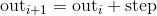
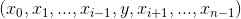
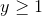
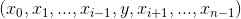
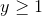
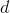
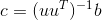

torch
The torch package contains data structures for multi-dimensional tensors and mathematical operations over these are defined. Additionally, it provides many utilities for efficient serializing of Tensors and arbitrary types, and other useful utilities.
It has a CUDA counterpart, that enables you to run your tensor computations on an NVIDIA GPU with compute capability >= 3.0.
Tensors
torch.is_tensor(obj)
Returns True if obj is a PyTorch tensor.
| Parameters: | obj (Object) – Object to test |
|---|---|
torch.is_storage(obj)
Returns True if obj is a PyTorch storage object.
| Parameters: | obj (Object) – Object to test |
|---|---|
torch.set_default_dtype(d)
Sets the default floating point dtype to d. This type will be used as default floating point type for type inference in torch.tensor().
The default floating point dtype is initially torch.float32.
| Parameters: | d (torch.dtype) – the floating point dtype to make the default |
|---|---|
Example:
>>> torch.tensor([1.2, 3]).dtype # initial default for floating point is torch.float32
torch.float32
>>> torch.set_default_dtype(torch.float64)
>>> torch.tensor([1.2, 3]).dtype # a new floating point tensor
torch.float64
torch.get_default_dtype() → torch.dtype
Get the current default floating point torch.dtype.
Example:
>>> torch.get_default_dtype() # initial default for floating point is torch.float32
torch.float32
>>> torch.set_default_dtype(torch.float64)
>>> torch.get_default_dtype() # default is now changed to torch.float64
torch.float64
>>> torch.set_default_tensor_type(torch.FloatTensor) # setting tensor type also affects this
>>> torch.get_default_dtype() # changed to torch.float32, the dtype for torch.FloatTensor
torch.float32
torch.set_default_tensor_type(t)
Sets the default torch.Tensor type to floating point tensor type t. This type will also be used as default floating point type for type inference in torch.tensor().
The default floating point tensor type is initially torch.FloatTensor.
| Parameters: | t (type or string) – the floating point tensor type or its name |
|---|---|
Example:
>>> torch.tensor([1.2, 3]).dtype # initial default for floating point is torch.float32
torch.float32
>>> torch.set_default_tensor_type(torch.DoubleTensor)
>>> torch.tensor([1.2, 3]).dtype # a new floating point tensor
torch.float64
torch.numel(input) → int
Returns the total number of elements in the input tensor.
| Parameters: | input (Tensor) – the input tensor |
|---|---|
Example:
>>> a = torch.randn(1, 2, 3, 4, 5)
>>> torch.numel(a)
120
>>> a = torch.zeros(4,4)
>>> torch.numel(a)
16
torch.set_printoptions(precision=None, threshold=None, edgeitems=None, linewidth=None, profile=None)
Set options for printing. Items shamelessly taken from NumPy
Parameters:
- precision – Number of digits of precision for floating point output (default = 4).
- threshold – Total number of array elements which trigger summarization rather than full
repr(default = 1000). - edgeitems – Number of array items in summary at beginning and end of each dimension (default = 3).
- linewidth – The number of characters per line for the purpose of inserting line breaks (default = 80). Thresholded matrices will ignore this parameter.
- profile – Sane defaults for pretty printing. Can override with any of the above options. (any one of
default,short,full)
torch.set_flush_denormal(mode) → bool
Disables denormal floating numbers on CPU.
Returns True if your system supports flushing denormal numbers and it successfully configures flush denormal mode. set_flush_denormal() is only supported on x86 architectures supporting SSE3.
| Parameters: | mode (bool) – Controls whether to enable flush denormal mode or not |
|---|---|
Example:
>>> torch.set_flush_denormal(True)
True
>>> torch.tensor([1e-323], dtype=torch.float64)
tensor([ 0.], dtype=torch.float64)
>>> torch.set_flush_denormal(False)
True
>>> torch.tensor([1e-323], dtype=torch.float64)
tensor(9.88131e-324 *
[ 1.0000], dtype=torch.float64)
Creation Ops
Note
Random sampling creation ops are listed under Random sampling and include: torch.rand() torch.rand_like() torch.randn() torch.randn_like() torch.randint() torch.randint_like() torch.randperm() You may also use torch.empty() with the In-place random sampling methods to create torch.Tensor s with values sampled from a broader range of distributions.
torch.tensor(data, dtype=None, device=None, requires_grad=False) → Tensor
Constructs a tensor with data.
Warning
torch.tensor() always copies data. If you have a Tensor data and want to avoid a copy, use torch.Tensor.requires_grad_() or torch.Tensor.detach(). If you have a NumPy ndarray and want to avoid a copy, use torch.from_numpy().
Warning
When data is a tensor x, torch.tensor() reads out ‘the data’ from whatever it is passed, and constructs a leaf variable. Therefore torch.tensor(x) is equivalent to x.clone().detach() and torch.tensor(x, requires_grad=True) is equivalent to x.clone().detach().requires_grad_(True). The equivalents using clone() and detach() are recommended.
Parameters:
- data (array_like) – Initial data for the tensor. Can be a list, tuple, NumPy
ndarray, scalar, and other types. - dtype (
torch.dtype, optional) – the desired data type of returned tensor. Default: ifNone, infers data type fromdata. - device (
torch.device, optional) – the desired device of returned tensor. Default: ifNone, uses the current device for the default tensor type (seetorch.set_default_tensor_type()).devicewill be the CPU for CPU tensor types and the current CUDA device for CUDA tensor types. - requires_grad (bool, optional) – If autograd should record operations on the returned tensor. Default:
False.
Example:
>>> torch.tensor([[0.1, 1.2], [2.2, 3.1], [4.9, 5.2]])
tensor([[ 0.1000, 1.2000],
[ 2.2000, 3.1000],
[ 4.9000, 5.2000]])
>>> torch.tensor([0, 1]) # Type inference on data
tensor([ 0, 1])
>>> torch.tensor([[0.11111, 0.222222, 0.3333333]],
dtype=torch.float64,
device=torch.device('cuda:0')) # creates a torch.cuda.DoubleTensor
tensor([[ 0.1111, 0.2222, 0.3333]], dtype=torch.float64, device='cuda:0')
>>> torch.tensor(3.14159) # Create a scalar (zero-dimensional tensor)
tensor(3.1416)
>>> torch.tensor([]) # Create an empty tensor (of size (0,))
tensor([])
torch.sparse_coo_tensor(indices, values, size=None, dtype=None, device=None, requires_grad=False) → Tensor
Constructs a sparse tensors in COO(rdinate) format with non-zero elements at the given indices with the given values. A sparse tensor can be uncoalesced, in that case, there are duplicate coordinates in the indices, and the value at that index is the sum of all duplicate value entries: torch.sparse.
Parameters:
- indices (array_like) – Initial data for the tensor. Can be a list, tuple, NumPy
ndarray, scalar, and other types. Will be cast to atorch.LongTensorinternally. The indices are the coordinates of the non-zero values in the matrix, and thus should be two-dimensional where the first dimension is the number of tensor dimensions and the second dimension is the number of non-zero values. - values (array_like) – Initial values for the tensor. Can be a list, tuple, NumPy
ndarray, scalar, and other types. - size (list, tuple, or
torch.Size, optional) – Size of the sparse tensor. If not provided the size will be inferred as the minimum size big enough to hold all non-zero elements. - dtype (
torch.dtype, optional) – the desired data type of returned tensor. Default: if None, infers data type fromvalues. - device (
torch.device, optional) – the desired device of returned tensor. Default: if None, uses the current device for the default tensor type (seetorch.set_default_tensor_type()).devicewill be the CPU for CPU tensor types and the current CUDA device for CUDA tensor types. - requires_grad (bool, optional) – If autograd should record operations on the returned tensor. Default:
False.
Example:
>>> i = torch.tensor([[0, 1, 1],
[2, 0, 2]])
>>> v = torch.tensor([3, 4, 5], dtype=torch.float32)
>>> torch.sparse_coo_tensor(i, v, [2, 4])
tensor(indices=tensor([[0, 1, 1],
[2, 0, 2]]),
values=tensor([3., 4., 5.]),
size=(2, 4), nnz=3, layout=torch.sparse_coo)
>>> torch.sparse_coo_tensor(i, v) # Shape inference
tensor(indices=tensor([[0, 1, 1],
[2, 0, 2]]),
values=tensor([3., 4., 5.]),
size=(2, 3), nnz=3, layout=torch.sparse_coo)
>>> torch.sparse_coo_tensor(i, v, [2, 4],
dtype=torch.float64,
device=torch.device('cuda:0'))
tensor(indices=tensor([[0, 1, 1],
[2, 0, 2]]),
values=tensor([3., 4., 5.]),
device='cuda:0', size=(2, 4), nnz=3, dtype=torch.float64,
layout=torch.sparse_coo)
# Create an empty sparse tensor with the following invariants:
# 1\. sparse_dim + dense_dim = len(SparseTensor.shape)
# 2\. SparseTensor._indices().shape = (sparse_dim, nnz)
# 3\. SparseTensor._values().shape = (nnz, SparseTensor.shape[sparse_dim:])
#
# For instance, to create an empty sparse tensor with nnz = 0, dense_dim = 0 and
# sparse_dim = 1 (hence indices is a 2D tensor of shape = (1, 0))
>>> S = torch.sparse_coo_tensor(torch.empty([1, 0]), [], [1])
tensor(indices=tensor([], size=(1, 0)),
values=tensor([], size=(0,)),
size=(1,), nnz=0, layout=torch.sparse_coo)
# and to create an empty sparse tensor with nnz = 0, dense_dim = 1 and
# sparse_dim = 1
>>> S = torch.sparse_coo_tensor(torch.empty([1, 0]), torch.empty([0, 2]), [1, 2])
tensor(indices=tensor([], size=(1, 0)),
values=tensor([], size=(0, 2)),
size=(1, 2), nnz=0, layout=torch.sparse_coo)
torch.as_tensor(data, dtype=None, device=None) → Tensor
Convert the data into a torch.Tensor. If the data is already a Tensor with the same dtype and device, no copy will be performed, otherwise a new Tensor will be returned with computational graph retained if data Tensor has requires_grad=True. Similarly, if the data is an ndarray of the corresponding dtype and the device is the cpu, no copy will be performed.
Parameters:
- data (array_like) – Initial data for the tensor. Can be a list, tuple, NumPy
ndarray, scalar, and other types. - dtype (
torch.dtype, optional) – the desired data type of returned tensor. Default: ifNone, infers data type fromdata. - device (
torch.device, optional) – the desired device of returned tensor. Default: ifNone, uses the current device for the default tensor type (seetorch.set_default_tensor_type()).devicewill be the CPU for CPU tensor types and the current CUDA device for CUDA tensor types.
Example:
>>> a = numpy.array([1, 2, 3])
>>> t = torch.as_tensor(a)
>>> t
tensor([ 1, 2, 3])
>>> t[0] = -1
>>> a
array([-1, 2, 3])
>>> a = numpy.array([1, 2, 3])
>>> t = torch.as_tensor(a, device=torch.device('cuda'))
>>> t
tensor([ 1, 2, 3])
>>> t[0] = -1
>>> a
array([1, 2, 3])
torch.from_numpy(ndarray) → Tensor
Creates a Tensor from a numpy.ndarray.
The returned tensor and ndarray share the same memory. Modifications to the tensor will be reflected in the ndarray and vice versa. The returned tensor is not resizable.
Example:
>>> a = numpy.array([1, 2, 3])
>>> t = torch.from_numpy(a)
>>> t
tensor([ 1, 2, 3])
>>> t[0] = -1
>>> a
array([-1, 2, 3])
torch.zeros(*sizes, out=None, dtype=None, layout=torch.strided, device=None, requires_grad=False) → Tensor
Returns a tensor filled with the scalar value 0, with the shape defined by the variable argument sizes.
Parameters:
- sizes (int...) – a sequence of integers defining the shape of the output tensor. Can be a variable number of arguments or a collection like a list or tuple.
- out (Tensor, optional) – the output tensor
- dtype (
torch.dtype, optional) – the desired data type of returned tensor. Default: ifNone, uses a global default (seetorch.set_default_tensor_type()). - layout (
torch.layout, optional) – the desired layout of returned Tensor. Default:torch.strided. - device (
torch.device, optional) – the desired device of returned tensor. Default: ifNone, uses the current device for the default tensor type (seetorch.set_default_tensor_type()).devicewill be the CPU for CPU tensor types and the current CUDA device for CUDA tensor types. - requires_grad (bool, optional) – If autograd should record operations on the returned tensor. Default:
False.
Example:
>>> torch.zeros(2, 3)
tensor([[ 0., 0., 0.],
[ 0., 0., 0.]])
>>> torch.zeros(5)
tensor([ 0., 0., 0., 0., 0.])
torch.zeros_like(input, dtype=None, layout=None, device=None, requires_grad=False) → Tensor
Returns a tensor filled with the scalar value 0, with the same size as input. torch.zeros_like(input) is equivalent to torch.zeros(input.size(), dtype=input.dtype, layout=input.layout, device=input.device).
Warning
As of 0.4, this function does not support an out keyword. As an alternative, the old torch.zeros_like(input, out=output) is equivalent to torch.zeros(input.size(), out=output).
Parameters:
- input (Tensor) – the size of
inputwill determine size of the output tensor - dtype (
torch.dtype, optional) – the desired data type of returned Tensor. Default: ifNone, defaults to the dtype ofinput. - layout (
torch.layout, optional) – the desired layout of returned tensor. Default: ifNone, defaults to the layout ofinput. - device (
torch.device, optional) – the desired device of returned tensor. Default: ifNone, defaults to the device ofinput. - requires_grad (bool, optional) – If autograd should record operations on the returned tensor. Default:
False.
Example:
>>> input = torch.empty(2, 3)
>>> torch.zeros_like(input)
tensor([[ 0., 0., 0.],
[ 0., 0., 0.]])
torch.ones(*sizes, out=None, dtype=None, layout=torch.strided, device=None, requires_grad=False) → Tensor
Returns a tensor filled with the scalar value 1, with the shape defined by the variable argument sizes.
Parameters:
- sizes (int...) – a sequence of integers defining the shape of the output tensor. Can be a variable number of arguments or a collection like a list or tuple.
- out (Tensor, optional) – the output tensor
- dtype (
torch.dtype, optional) – the desired data type of returned tensor. Default: ifNone, uses a global default (seetorch.set_default_tensor_type()). - layout (
torch.layout, optional) – the desired layout of returned Tensor. Default:torch.strided. - device (
torch.device, optional) – the desired device of returned tensor. Default: ifNone, uses the current device for the default tensor type (seetorch.set_default_tensor_type()).devicewill be the CPU for CPU tensor types and the current CUDA device for CUDA tensor types. - requires_grad (bool, optional) – If autograd should record operations on the returned tensor. Default:
False.
Example:
>>> torch.ones(2, 3)
tensor([[ 1., 1., 1.],
[ 1., 1., 1.]])
>>> torch.ones(5)
tensor([ 1., 1., 1., 1., 1.])
torch.ones_like(input, dtype=None, layout=None, device=None, requires_grad=False) → Tensor
Returns a tensor filled with the scalar value 1, with the same size as input. torch.ones_like(input) is equivalent to torch.ones(input.size(), dtype=input.dtype, layout=input.layout, device=input.device).
Warning
As of 0.4, this function does not support an out keyword. As an alternative, the old torch.ones_like(input, out=output) is equivalent to torch.ones(input.size(), out=output).
Parameters:
- input (Tensor) – the size of
inputwill determine size of the output tensor - dtype (
torch.dtype, optional) – the desired data type of returned Tensor. Default: ifNone, defaults to the dtype ofinput. - layout (
torch.layout, optional) – the desired layout of returned tensor. Default: ifNone, defaults to the layout ofinput. - device (
torch.device, optional) – the desired device of returned tensor. Default: ifNone, defaults to the device ofinput. - requires_grad (bool, optional) – If autograd should record operations on the returned tensor. Default:
False.
Example:
>>> input = torch.empty(2, 3)
>>> torch.ones_like(input)
tensor([[ 1., 1., 1.],
[ 1., 1., 1.]])
torch.arange(start=0, end, step=1, out=None, dtype=None, layout=torch.strided, device=None, requires_grad=False) → Tensor
Returns a 1-D tensor of size  with values from the interval
with values from the interval [start, end) taken with common difference step beginning from start.
Note that non-integer step is subject to floating point rounding errors when comparing against end; to avoid inconsistency, we advise adding a small epsilon to end in such cases.

Parameters:
- start (Number) – the starting value for the set of points. Default:
0. - end (Number) – the ending value for the set of points
- step (Number) – the gap between each pair of adjacent points. Default:
1. - out (Tensor, optional) – the output tensor
- dtype (
torch.dtype, optional) – the desired data type of returned tensor. Default: ifNone, uses a global default (seetorch.set_default_tensor_type()). Ifdtypeis not given, infer the data type from the other input arguments. If any ofstart,end, orstopare floating-point, thedtypeis inferred to be the default dtype, seeget_default_dtype(). Otherwise, thedtypeis inferred to betorch.int64. - layout (
torch.layout, optional) – the desired layout of returned Tensor. Default:torch.strided. - device (
torch.device, optional) – the desired device of returned tensor. Default: ifNone, uses the current device for the default tensor type (seetorch.set_default_tensor_type()).devicewill be the CPU for CPU tensor types and the current CUDA device for CUDA tensor types. - requires_grad (bool, optional) – If autograd should record operations on the returned tensor. Default:
False.
Example:
>>> torch.arange(5)
tensor([ 0, 1, 2, 3, 4])
>>> torch.arange(1, 4)
tensor([ 1, 2, 3])
>>> torch.arange(1, 2.5, 0.5)
tensor([ 1.0000, 1.5000, 2.0000])
torch.range(start=0, end, step=1, out=None, dtype=None, layout=torch.strided, device=None, requires_grad=False) → Tensor
Returns a 1-D tensor of size  with values from
with values from start to end with step step. Step is the gap between two values in the tensor.

Warning
This function is deprecated in favor of torch.arange().
Parameters:
- start (float) – the starting value for the set of points. Default:
0. - end (float) – the ending value for the set of points
- step (float) – the gap between each pair of adjacent points. Default:
1. - out (Tensor, optional) – the output tensor
- dtype (
torch.dtype, optional) – the desired data type of returned tensor. Default: ifNone, uses a global default (seetorch.set_default_tensor_type()). - layout (
torch.layout, optional) – the desired layout of returned Tensor. Default:torch.strided. - device (
torch.device, optional) – the desired device of returned tensor. Default: ifNone, uses the current device for the default tensor type (seetorch.set_default_tensor_type()).devicewill be the CPU for CPU tensor types and the current CUDA device for CUDA tensor types. - requires_grad (bool, optional) – If autograd should record operations on the returned tensor. Default:
False.
Example:
>>> torch.range(1, 4)
tensor([ 1., 2., 3., 4.])
>>> torch.range(1, 4, 0.5)
tensor([ 1.0000, 1.5000, 2.0000, 2.5000, 3.0000, 3.5000, 4.0000])
torch.linspace(start, end, steps=100, out=None, dtype=None, layout=torch.strided, device=None, requires_grad=False) → Tensor
Returns a one-dimensional tensor of steps equally spaced points between start and end.
The output tensor is 1-D of size steps.
Parameters:
- start (float) – the starting value for the set of points
- end (float) – the ending value for the set of points
- steps (int) – number of points to sample between
startandend. Default:100. - out (Tensor, optional) – the output tensor
- dtype (
torch.dtype, optional) – the desired data type of returned tensor. Default: ifNone, uses a global default (seetorch.set_default_tensor_type()). - layout (
torch.layout, optional) – the desired layout of returned Tensor. Default:torch.strided. - device (
torch.device, optional) – the desired device of returned tensor. Default: ifNone, uses the current device for the default tensor type (seetorch.set_default_tensor_type()).devicewill be the CPU for CPU tensor types and the current CUDA device for CUDA tensor types. - requires_grad (bool, optional) – If autograd should record operations on the returned tensor. Default:
False.
Example:
>>> torch.linspace(3, 10, steps=5)
tensor([ 3.0000, 4.7500, 6.5000, 8.2500, 10.0000])
>>> torch.linspace(-10, 10, steps=5)
tensor([-10., -5., 0., 5., 10.])
>>> torch.linspace(start=-10, end=10, steps=5)
tensor([-10., -5., 0., 5., 10.])
torch.logspace(start, end, steps=100, out=None, dtype=None, layout=torch.strided, device=None, requires_grad=False) → Tensor
Returns a one-dimensional tensor of steps points logarithmically spaced between  and
and  .
.
The output tensor is 1-D of size steps.
Parameters:
- start (float) – the starting value for the set of points
- end (float) – the ending value for the set of points
- steps (int) – number of points to sample between
startandend. Default:100. - out (Tensor, optional) – the output tensor
- dtype (
torch.dtype, optional) – the desired data type of returned tensor. Default: ifNone, uses a global default (seetorch.set_default_tensor_type()). - layout (
torch.layout, optional) – the desired layout of returned Tensor. Default:torch.strided. - device (
torch.device, optional) – the desired device of returned tensor. Default: ifNone, uses the current device for the default tensor type (seetorch.set_default_tensor_type()).devicewill be the CPU for CPU tensor types and the current CUDA device for CUDA tensor types. - requires_grad (bool, optional) – If autograd should record operations on the returned tensor. Default:
False.
Example:
>>> torch.logspace(start=-10, end=10, steps=5)
tensor([ 1.0000e-10, 1.0000e-05, 1.0000e+00, 1.0000e+05, 1.0000e+10])
>>> torch.logspace(start=0.1, end=1.0, steps=5)
tensor([ 1.2589, 2.1135, 3.5481, 5.9566, 10.0000])
torch.eye(n, m=None, out=None, dtype=None, layout=torch.strided, device=None, requires_grad=False) → Tensor
Returns a 2-D tensor with ones on the diagonal and zeros elsewhere.
Parameters:
- n (int) – the number of rows
- m (int, optional) – the number of columns with default being
n - out (Tensor, optional) – the output tensor
- dtype (
torch.dtype, optional) – the desired data type of returned tensor. Default: ifNone, uses a global default (seetorch.set_default_tensor_type()). - layout (
torch.layout, optional) – the desired layout of returned Tensor. Default:torch.strided. - device (
torch.device, optional) – the desired device of returned tensor. Default: ifNone, uses the current device for the default tensor type (seetorch.set_default_tensor_type()).devicewill be the CPU for CPU tensor types and the current CUDA device for CUDA tensor types. - requires_grad (bool, optional) – If autograd should record operations on the returned tensor. Default:
False.
| Returns: | A 2-D tensor with ones on the diagonal and zeros elsewhere |
|---|---|
| Return type: | Tensor |
| --- | --- |
Example:
>>> torch.eye(3)
tensor([[ 1., 0., 0.],
[ 0., 1., 0.],
[ 0., 0., 1.]])
torch.empty(*sizes, out=None, dtype=None, layout=torch.strided, device=None, requires_grad=False) → Tensor
Returns a tensor filled with uninitialized data. The shape of the tensor is defined by the variable argument sizes.
Parameters:
- sizes (int...) – a sequence of integers defining the shape of the output tensor. Can be a variable number of arguments or a collection like a list or tuple.
- out (Tensor, optional) – the output tensor
- dtype (
torch.dtype, optional) – the desired data type of returned tensor. Default: ifNone, uses a global default (seetorch.set_default_tensor_type()). - layout (
torch.layout, optional) – the desired layout of returned Tensor. Default:torch.strided. - device (
torch.device, optional) – the desired device of returned tensor. Default: ifNone, uses the current device for the default tensor type (seetorch.set_default_tensor_type()).devicewill be the CPU for CPU tensor types and the current CUDA device for CUDA tensor types. - requires_grad (bool, optional) – If autograd should record operations on the returned tensor. Default:
False.
Example:
>>> torch.empty(2, 3)
tensor(1.00000e-08 *
[[ 6.3984, 0.0000, 0.0000],
[ 0.0000, 0.0000, 0.0000]])
torch.empty_like(input, dtype=None, layout=None, device=None, requires_grad=False) → Tensor
Returns an uninitialized tensor with the same size as input. torch.empty_like(input) is equivalent to torch.empty(input.size(), dtype=input.dtype, layout=input.layout, device=input.device).
Parameters:
- input (Tensor) – the size of
inputwill determine size of the output tensor - dtype (
torch.dtype, optional) – the desired data type of returned Tensor. Default: ifNone, defaults to the dtype ofinput. - layout (
torch.layout, optional) – the desired layout of returned tensor. Default: ifNone, defaults to the layout ofinput. - device (
torch.device, optional) – the desired device of returned tensor. Default: ifNone, defaults to the device ofinput. - requires_grad (bool, optional) – If autograd should record operations on the returned tensor. Default:
False.
Example:
>>> torch.empty((2,3), dtype=torch.int64)
tensor([[ 9.4064e+13, 2.8000e+01, 9.3493e+13],
[ 7.5751e+18, 7.1428e+18, 7.5955e+18]])
torch.full(size, fill_value, out=None, dtype=None, layout=torch.strided, device=None, requires_grad=False) → Tensor
Returns a tensor of size size filled with fill_value.
Parameters:
- size (int...) – a list, tuple, or
torch.Sizeof integers defining the shape of the output tensor. - fill_value – the number to fill the output tensor with.
- out (Tensor, optional) – the output tensor
- dtype (
torch.dtype, optional) – the desired data type of returned tensor. Default: ifNone, uses a global default (seetorch.set_default_tensor_type()). - layout (
torch.layout, optional) – the desired layout of returned Tensor. Default:torch.strided. - device (
torch.device, optional) – the desired device of returned tensor. Default: ifNone, uses the current device for the default tensor type (seetorch.set_default_tensor_type()).devicewill be the CPU for CPU tensor types and the current CUDA device for CUDA tensor types. - requires_grad (bool, optional) – If autograd should record operations on the returned tensor. Default:
False.
Example:
>>> torch.full((2, 3), 3.141592)
tensor([[ 3.1416, 3.1416, 3.1416],
[ 3.1416, 3.1416, 3.1416]])
torch.full_like(input, fill_value, out=None, dtype=None, layout=torch.strided, device=None, requires_grad=False) → Tensor
Returns a tensor with the same size as input filled with fill_value. torch.full_like(input, fill_value) is equivalent to torch.full_like(input.size(), fill_value, dtype=input.dtype, layout=input.layout, device=input.device).
Parameters:
- input (Tensor) – the size of
inputwill determine size of the output tensor - fill_value – the number to fill the output tensor with.
- dtype (
torch.dtype, optional) – the desired data type of returned Tensor. Default: ifNone, defaults to the dtype ofinput. - layout (
torch.layout, optional) – the desired layout of returned tensor. Default: ifNone, defaults to the layout ofinput. - device (
torch.device, optional) – the desired device of returned tensor. Default: ifNone, defaults to the device ofinput. - requires_grad (bool, optional) – If autograd should record operations on the returned tensor. Default:
False.
Indexing, Slicing, Joining, Mutating Ops
torch.cat(tensors, dim=0, out=None) → Tensor
Concatenates the given sequence of seq tensors in the given dimension. All tensors must either have the same shape (except in the concatenating dimension) or be empty.
torch.cat() can be seen as an inverse operation for torch.split() and torch.chunk().
torch.cat() can be best understood via examples.
Parameters:
- tensors (sequence of Tensors) – any python sequence of tensors of the same type. Non-empty tensors provided must have the same shape, except in the cat dimension.
- dim (int, optional) – the dimension over which the tensors are concatenated
- out (Tensor, optional) – the output tensor
Example:
>>> x = torch.randn(2, 3)
>>> x
tensor([[ 0.6580, -1.0969, -0.4614],
[-0.1034, -0.5790, 0.1497]])
>>> torch.cat((x, x, x), 0)
tensor([[ 0.6580, -1.0969, -0.4614],
[-0.1034, -0.5790, 0.1497],
[ 0.6580, -1.0969, -0.4614],
[-0.1034, -0.5790, 0.1497],
[ 0.6580, -1.0969, -0.4614],
[-0.1034, -0.5790, 0.1497]])
>>> torch.cat((x, x, x), 1)
tensor([[ 0.6580, -1.0969, -0.4614, 0.6580, -1.0969, -0.4614, 0.6580,
-1.0969, -0.4614],
[-0.1034, -0.5790, 0.1497, -0.1034, -0.5790, 0.1497, -0.1034,
-0.5790, 0.1497]])
torch.chunk(tensor, chunks, dim=0) → List of Tensors
Splits a tensor into a specific number of chunks.
Last chunk will be smaller if the tensor size along the given dimension dim is not divisible by chunks.
Parameters:
- tensor (Tensor) – the tensor to split
- chunks (int) – number of chunks to return
- dim (int) – dimension along which to split the tensor
torch.gather(input, dim, index, out=None) → Tensor
Gathers values along an axis specified by dim.
For a 3-D tensor the output is specified by:
out[i][j][k] = input[index[i][j][k]][j][k] # if dim == 0
out[i][j][k] = input[i][index[i][j][k]][k] # if dim == 1
out[i][j][k] = input[i][j][index[i][j][k]] # if dim == 2
If input is an n-dimensional tensor with size  and
and dim = i, then index must be an  -dimensional tensor with size  where  and
-dimensional tensor with size  where  and out will have the same size as index.
Parameters:
- input (Tensor) – the source tensor
- dim (int) – the axis along which to index
- index (LongTensor) – the indices of elements to gather
- out (Tensor, optional) – the destination tensor
Example:
>>> t = torch.tensor([[1,2],[3,4]])
>>> torch.gather(t, 1, torch.tensor([[0,0],[1,0]]))
tensor([[ 1, 1],
[ 4, 3]])
torch.index_select(input, dim, index, out=None) → Tensor
Returns a new tensor which indexes the input tensor along dimension dim using the entries in index which is a LongTensor.
The returned tensor has the same number of dimensions as the original tensor (input). The dimth dimension has the same size as the length of index; other dimensions have the same size as in the original tensor.
Note
The returned tensor does not use the same storage as the original tensor. If out has a different shape than expected, we silently change it to the correct shape, reallocating the underlying storage if necessary.
Parameters:
- input (Tensor) – the input tensor
- dim (int) – the dimension in which we index
- index (LongTensor) – the 1-D tensor containing the indices to index
- out (Tensor, optional) – the output tensor
Example:
>>> x = torch.randn(3, 4)
>>> x
tensor([[ 0.1427, 0.0231, -0.5414, -1.0009],
[-0.4664, 0.2647, -0.1228, -1.1068],
[-1.1734, -0.6571, 0.7230, -0.6004]])
>>> indices = torch.tensor([0, 2])
>>> torch.index_select(x, 0, indices)
tensor([[ 0.1427, 0.0231, -0.5414, -1.0009],
[-1.1734, -0.6571, 0.7230, -0.6004]])
>>> torch.index_select(x, 1, indices)
tensor([[ 0.1427, -0.5414],
[-0.4664, -0.1228],
[-1.1734, 0.7230]])
torch.masked_select(input, mask, out=None) → Tensor
Returns a new 1-D tensor which indexes the input tensor according to the binary mask mask which is a ByteTensor.
The shapes of the mask tensor and the input tensor don’t need to match, but they must be broadcastable.
Note
The returned tensor does not use the same storage as the original tensor
Parameters:
- input (Tensor) – the input data
- mask (ByteTensor) – the tensor containing the binary mask to index with
- out (Tensor, optional) – the output tensor
Example:
>>> x = torch.randn(3, 4)
>>> x
tensor([[ 0.3552, -2.3825, -0.8297, 0.3477],
[-1.2035, 1.2252, 0.5002, 0.6248],
[ 0.1307, -2.0608, 0.1244, 2.0139]])
>>> mask = x.ge(0.5)
>>> mask
tensor([[ 0, 0, 0, 0],
[ 0, 1, 1, 1],
[ 0, 0, 0, 1]], dtype=torch.uint8)
>>> torch.masked_select(x, mask)
tensor([ 1.2252, 0.5002, 0.6248, 2.0139])
torch.narrow(input, dimension, start, length) → Tensor
Returns a new tensor that is a narrowed version of input tensor. The dimension dim is input from start to start + length. The returned tensor and input tensor share the same underlying storage.
Parameters:
- input (Tensor) – the tensor to narrow
- dimension (int) – the dimension along which to narrow
- start (int) – the starting dimension
- length (int) – the distance to the ending dimension
Example:
>>> x = torch.tensor([[1, 2, 3], [4, 5, 6], [7, 8, 9]])
>>> torch.narrow(x, 0, 0, 2)
tensor([[ 1, 2, 3],
[ 4, 5, 6]])
>>> torch.narrow(x, 1, 1, 2)
tensor([[ 2, 3],
[ 5, 6],
[ 8, 9]])
torch.nonzero(input, out=None) → LongTensor
Returns a tensor containing the indices of all non-zero elements of input. Each row in the result contains the indices of a non-zero element in input.
If input has n dimensions, then the resulting indices tensor out is of size  , where
, where  is the total number of non-zero elements in the
is the total number of non-zero elements in the input tensor.
Parameters:
- input (Tensor) – the input tensor
- out (LongTensor__, optional) – the output tensor containing indices
Example:
>>> torch.nonzero(torch.tensor([1, 1, 1, 0, 1]))
tensor([[ 0],
[ 1],
[ 2],
[ 4]])
>>> torch.nonzero(torch.tensor([[0.6, 0.0, 0.0, 0.0],
[0.0, 0.4, 0.0, 0.0],
[0.0, 0.0, 1.2, 0.0],
[0.0, 0.0, 0.0,-0.4]]))
tensor([[ 0, 0],
[ 1, 1],
[ 2, 2],
[ 3, 3]])
torch.reshape(input, shape) → Tensor
Returns a tensor with the same data and number of elements as input, but with the specified shape. When possible, the returned tensor will be a view of input. Otherwise, it will be a copy. Contiguous inputs and inputs with compatible strides can be reshaped without copying, but you should not depend on the copying vs. viewing behavior.
See torch.Tensor.view() on when it is possible to return a view.
A single dimension may be -1, in which case it’s inferred from the remaining dimensions and the number of elements in input.
Parameters:
- input (Tensor) – the tensor to be reshaped
- shape (tuple of python:ints) – the new shape
Example:
>>> a = torch.arange(4.)
>>> torch.reshape(a, (2, 2))
tensor([[ 0., 1.],
[ 2., 3.]])
>>> b = torch.tensor([[0, 1], [2, 3]])
>>> torch.reshape(b, (-1,))
tensor([ 0, 1, 2, 3])
torch.split(tensor, split_size_or_sections, dim=0)
Splits the tensor into chunks.
If split_size_or_sections is an integer type, then tensor will be split into equally sized chunks (if possible). Last chunk will be smaller if the tensor size along the given dimension dim is not divisible by split_size.
If split_size_or_sections is a list, then tensor will be split into len(split_size_or_sections) chunks with sizes in dim according to split_size_or_sections.
Parameters:
- tensor (Tensor) – tensor to split.
- split_size_or_sections (int) or (list(int)) – size of a single chunk or list of sizes for each chunk
- dim (int) – dimension along which to split the tensor.
torch.squeeze(input, dim=None, out=None) → Tensor
Returns a tensor with all the dimensions of input of size 1 removed.
For example, if input is of shape:  then the
then the out tensor will be of shape:  .
.
When dim is given, a squeeze operation is done only in the given dimension. If input is of shape:  ,
, squeeze(input, 0) leaves the tensor unchanged, but squeeze(input, 1) will squeeze the tensor to the shape  .
.
Note
The returned tensor shares the storage with the input tensor, so changing the contents of one will change the contents of the other.
Parameters:
- input (Tensor) – the input tensor
- dim (int, optional) – if given, the input will be squeezed only in this dimension
- out (Tensor, optional) – the output tensor
Example:
>>> x = torch.zeros(2, 1, 2, 1, 2)
>>> x.size()
torch.Size([2, 1, 2, 1, 2])
>>> y = torch.squeeze(x)
>>> y.size()
torch.Size([2, 2, 2])
>>> y = torch.squeeze(x, 0)
>>> y.size()
torch.Size([2, 1, 2, 1, 2])
>>> y = torch.squeeze(x, 1)
>>> y.size()
torch.Size([2, 2, 1, 2])
torch.stack(seq, dim=0, out=None) → Tensor
Concatenates sequence of tensors along a new dimension.
All tensors need to be of the same size.
Parameters:
- seq (sequence of Tensors) – sequence of tensors to concatenate
- dim (int) – dimension to insert. Has to be between 0 and the number of dimensions of concatenated tensors (inclusive)
- out (Tensor, optional) – the output tensor
torch.t(input) → Tensor
Expects input to be a matrix (2-D tensor) and transposes dimensions 0 and 1.
Can be seen as a short-hand function for transpose(input, 0, 1).
| Parameters: | input (Tensor) – the input tensor |
|---|---|
Example:
>>> x = torch.randn(2, 3)
>>> x
tensor([[ 0.4875, 0.9158, -0.5872],
[ 0.3938, -0.6929, 0.6932]])
>>> torch.t(x)
tensor([[ 0.4875, 0.3938],
[ 0.9158, -0.6929],
[-0.5872, 0.6932]])
torch.take(input, indices) → Tensor
Returns a new tensor with the elements of input at the given indices. The input tensor is treated as if it were viewed as a 1-D tensor. The result takes the same shape as the indices.
Parameters:
- input (Tensor) – the input tensor
- indices (LongTensor) – the indices into tensor
Example:
>>> src = torch.tensor([[4, 3, 5],
[6, 7, 8]])
>>> torch.take(src, torch.tensor([0, 2, 5]))
tensor([ 4, 5, 8])
torch.transpose(input, dim0, dim1) → Tensor
Returns a tensor that is a transposed version of input. The given dimensions dim0 and dim1 are swapped.
The resulting out tensor shares it’s underlying storage with the input tensor, so changing the content of one would change the content of the other.
Parameters:
- input (Tensor) – the input tensor
- dim0 (int) – the first dimension to be transposed
- dim1 (int) – the second dimension to be transposed
Example:
>>> x = torch.randn(2, 3)
>>> x
tensor([[ 1.0028, -0.9893, 0.5809],
[-0.1669, 0.7299, 0.4942]])
>>> torch.transpose(x, 0, 1)
tensor([[ 1.0028, -0.1669],
[-0.9893, 0.7299],
[ 0.5809, 0.4942]])
torch.unbind(tensor, dim=0) → seq
Removes a tensor dimension.
Returns a tuple of all slices along a given dimension, already without it.
Parameters:
Example:
>>> torch.unbind(torch.tensor([[1, 2, 3],
>>> [4, 5, 6],
>>> [7, 8, 9]]))
(tensor([1, 2, 3]), tensor([4, 5, 6]), tensor([7, 8, 9]))
torch.unsqueeze(input, dim, out=None) → Tensor
Returns a new tensor with a dimension of size one inserted at the specified position.
The returned tensor shares the same underlying data with this tensor.
A dim value within the range [-input.dim() - 1, input.dim() + 1) can be used. Negative dim will correspond to unsqueeze() applied at dim = dim + input.dim() + 1.
Parameters:
- input (Tensor) – the input tensor
- dim (int) – the index at which to insert the singleton dimension
- out (Tensor, optional) – the output tensor
Example:
>>> x = torch.tensor([1, 2, 3, 4])
>>> torch.unsqueeze(x, 0)
tensor([[ 1, 2, 3, 4]])
>>> torch.unsqueeze(x, 1)
tensor([[ 1],
[ 2],
[ 3],
[ 4]])
torch.where(condition, x, y) → Tensor
Return a tensor of elements selected from either x or y, depending on condition.
The operation is defined as:

Note
The tensors condition, x, y must be broadcastable.
Parameters:
- condition (ByteTensor) – When True (nonzero), yield x, otherwise yield y
- x (Tensor) – values selected at indices where
conditionisTrue - y (Tensor) – values selected at indices where
conditionisFalse
| Returns: | A tensor of shape equal to the broadcasted shape of condition, x, y |
|---|---|
| Return type: | Tensor |
| --- | --- |
Example:
>>> x = torch.randn(3, 2)
>>> y = torch.ones(3, 2)
>>> x
tensor([[-0.4620, 0.3139],
[ 0.3898, -0.7197],
[ 0.0478, -0.1657]])
>>> torch.where(x > 0, x, y)
tensor([[ 1.0000, 0.3139],
[ 0.3898, 1.0000],
[ 0.0478, 1.0000]])
Random sampling
torch.manual_seed(seed)
Sets the seed for generating random numbers. Returns a torch._C.Generator object.
| Parameters: | seed (int) – The desired seed. |
|---|---|
torch.initial_seed()
Returns the initial seed for generating random numbers as a Python long.
torch.get_rng_state()
Returns the random number generator state as a torch.ByteTensor.
torch.set_rng_state(new_state)
Sets the random number generator state.
| Parameters: | new_state (torch.ByteTensor) – The desired state |
|---|---|
torch.default_generator = <torch._C.Generator object>
torch.bernoulli(input, *, generator=None, out=None) → Tensor
Draws binary random numbers (0 or 1) from a Bernoulli distribution.
The input tensor should be a tensor containing probabilities to be used for drawing the binary random number. Hence, all values in input have to be in the range: .
The element of the output tensor will draw a value according to the probability value given in input.
The returned out tensor only has values 0 or 1 and is of the same shape as input.
out can have integral dtype, but :attrinput must have floating point dtype.
Parameters:
- input (Tensor) – the input tensor of probability values for the Bernoulli distribution
- out (Tensor, optional) – the output tensor
Example:
>>> a = torch.empty(3, 3).uniform_(0, 1) # generate a uniform random matrix with range [0, 1]
>>> a
tensor([[ 0.1737, 0.0950, 0.3609],
[ 0.7148, 0.0289, 0.2676],
[ 0.9456, 0.8937, 0.7202]])
>>> torch.bernoulli(a)
tensor([[ 1., 0., 0.],
[ 0., 0., 0.],
[ 1., 1., 1.]])
>>> a = torch.ones(3, 3) # probability of drawing "1" is 1
>>> torch.bernoulli(a)
tensor([[ 1., 1., 1.],
[ 1., 1., 1.],
[ 1., 1., 1.]])
>>> a = torch.zeros(3, 3) # probability of drawing "1" is 0
>>> torch.bernoulli(a)
tensor([[ 0., 0., 0.],
[ 0., 0., 0.],
[ 0., 0., 0.]])
torch.multinomial(input, num_samples, replacement=False, out=None) → LongTensor
Returns a tensor where each row contains num_samples indices sampled from the multinomial probability distribution located in the corresponding row of tensor input.
Note
The rows of input do not need to sum to one (in which case we use the values as weights), but must be non-negative, finite and have a non-zero sum.
Indices are ordered from left to right according to when each was sampled (first samples are placed in first column).
If input is a vector, out is a vector of size num_samples.
If input is a matrix with m rows, out is an matrix of shape .
If replacement is True, samples are drawn with replacement.
If not, they are drawn without replacement, which means that when a sample index is drawn for a row, it cannot be drawn again for that row.
This implies the constraint that num_samples must be lower than input length (or number of columns of input if it is a matrix).
Parameters:
- input (Tensor) – the input tensor containing probabilities
- num_samples (int) – number of samples to draw
- replacement (bool, optional) – whether to draw with replacement or not
- out (Tensor, optional) – the output tensor
Example:
>>> weights = torch.tensor([0, 10, 3, 0], dtype=torch.float) # create a tensor of weights
>>> torch.multinomial(weights, 4)
tensor([ 1, 2, 0, 0])
>>> torch.multinomial(weights, 4, replacement=True)
tensor([ 2, 1, 1, 1])
torch.normal()
torch.normal(mean, std, out=None) → Tensor
Returns a tensor of random numbers drawn from separate normal distributions whose mean and standard deviation are given.
The mean is a tensor with the mean of each output element’s normal distribution
The std is a tensor with the standard deviation of each output element’s normal distribution
The shapes of mean and std don’t need to match, but the total number of elements in each tensor need to be the same.
Note
When the shapes do not match, the shape of mean is used as the shape for the returned output tensor
Parameters:
- mean (Tensor) – the tensor of per-element means
- std (Tensor) – the tensor of per-element standard deviations
- out (Tensor, optional) – the output tensor
Example:
>>> torch.normal(mean=torch.arange(1., 11.), std=torch.arange(1, 0, -0.1))
tensor([ 1.0425, 3.5672, 2.7969, 4.2925, 4.7229, 6.2134,
8.0505, 8.1408, 9.0563, 10.0566])
torch.normal(mean=0.0, std, out=None) → Tensor
Similar to the function above, but the means are shared among all drawn elements.
Parameters:
- mean (float, optional) – the mean for all distributions
- std (Tensor) – the tensor of per-element standard deviations
- out (Tensor, optional) – the output tensor
Example:
>>> torch.normal(mean=0.5, std=torch.arange(1., 6.))
tensor([-1.2793, -1.0732, -2.0687, 5.1177, -1.2303])
torch.normal(mean, std=1.0, out=None) → Tensor
Similar to the function above, but the standard-deviations are shared among all drawn elements.
Parameters:
- mean (Tensor) – the tensor of per-element means
- std (float, optional) – the standard deviation for all distributions
- out (Tensor, optional) – the output tensor
Example:
>>> torch.normal(mean=torch.arange(1., 6.))
tensor([ 1.1552, 2.6148, 2.6535, 5.8318, 4.2361])
torch.rand(*sizes, out=None, dtype=None, layout=torch.strided, device=None, requires_grad=False) → Tensor
Returns a tensor filled with random numbers from a uniform distribution on the interval
The shape of the tensor is defined by the variable argument sizes.
Parameters:
- sizes (int...) – a sequence of integers defining the shape of the output tensor. Can be a variable number of arguments or a collection like a list or tuple.
- out (Tensor, optional) – the output tensor
- dtype (
torch.dtype, optional) – the desired data type of returned tensor. Default: ifNone, uses a global default (seetorch.set_default_tensor_type()). - layout (
torch.layout, optional) – the desired layout of returned Tensor. Default:torch.strided. - device (
torch.device, optional) – the desired device of returned tensor. Default: ifNone, uses the current device for the default tensor type (seetorch.set_default_tensor_type()).devicewill be the CPU for CPU tensor types and the current CUDA device for CUDA tensor types. - requires_grad (bool, optional) – If autograd should record operations on the returned tensor. Default:
False.
Example:
>>> torch.rand(4)
tensor([ 0.5204, 0.2503, 0.3525, 0.5673])
>>> torch.rand(2, 3)
tensor([[ 0.8237, 0.5781, 0.6879],
[ 0.3816, 0.7249, 0.0998]])
torch.rand_like(input, dtype=None, layout=None, device=None, requires_grad=False) → Tensor
Returns a tensor with the same size as input that is filled with random numbers from a uniform distribution on the interval . torch.rand_like(input) is equivalent to torch.rand(input.size(), dtype=input.dtype, layout=input.layout, device=input.device).
Parameters:
- input (Tensor) – the size of
inputwill determine size of the output tensor - dtype (
torch.dtype, optional) – the desired data type of returned Tensor. Default: ifNone, defaults to the dtype ofinput. - layout (
torch.layout, optional) – the desired layout of returned tensor. Default: ifNone, defaults to the layout ofinput. - device (
torch.device, optional) – the desired device of returned tensor. Default: ifNone, defaults to the device ofinput. - requires_grad (bool, optional) – If autograd should record operations on the returned tensor. Default:
False.
torch.randint(low=0, high, size, out=None, dtype=None, layout=torch.strided, device=None, requires_grad=False) → Tensor
Returns a tensor filled with random integers generated uniformly between low (inclusive) and high (exclusive).
The shape of the tensor is defined by the variable argument size.
Parameters:
- low (int, optional) – Lowest integer to be drawn from the distribution. Default: 0.
- high (int) – One above the highest integer to be drawn from the distribution.
- size (tuple) – a tuple defining the shape of the output tensor.
- out (Tensor, optional) – the output tensor
- dtype (
torch.dtype, optional) – the desired data type of returned tensor. Default: ifNone, uses a global default (seetorch.set_default_tensor_type()). - layout (
torch.layout, optional) – the desired layout of returned Tensor. Default:torch.strided. - device (
torch.device, optional) – the desired device of returned tensor. Default: ifNone, uses the current device for the default tensor type (seetorch.set_default_tensor_type()).devicewill be the CPU for CPU tensor types and the current CUDA device for CUDA tensor types. - requires_grad (bool, optional) – If autograd should record operations on the returned tensor. Default:
False.
Example:
>>> torch.randint(3, 5, (3,))
tensor([4, 3, 4])
>>> torch.randint(10, (2, 2))
tensor([[0, 2],
[5, 5]])
>>> torch.randint(3, 10, (2, 2))
tensor([[4, 5],
[6, 7]])
torch.randint_like(input, low=0, high, dtype=None, layout=torch.strided, device=None, requires_grad=False) → Tensor
Returns a tensor with the same shape as Tensor input filled with random integers generated uniformly between low (inclusive) and high (exclusive).
Parameters:
- input (Tensor) – the size of
inputwill determine size of the output tensor - low (int, optional) – Lowest integer to be drawn from the distribution. Default: 0.
- high (int) – One above the highest integer to be drawn from the distribution.
- dtype (
torch.dtype, optional) – the desired data type of returned Tensor. Default: ifNone, defaults to the dtype ofinput. - layout (
torch.layout, optional) – the desired layout of returned tensor. Default: ifNone, defaults to the layout ofinput. - device (
torch.device, optional) – the desired device of returned tensor. Default: ifNone, defaults to the device ofinput. - requires_grad (bool, optional) – If autograd should record operations on the returned tensor. Default:
False.
torch.randn(*sizes, out=None, dtype=None, layout=torch.strided, device=None, requires_grad=False) → Tensor
Returns a tensor filled with random numbers from a normal distribution with mean 0 and variance 1 (also called the standard normal distribution).
The shape of the tensor is defined by the variable argument sizes.
Parameters:
- sizes (int...) – a sequence of integers defining the shape of the output tensor. Can be a variable number of arguments or a collection like a list or tuple.
- out (Tensor, optional) – the output tensor
- dtype (
torch.dtype, optional) – the desired data type of returned tensor. Default: ifNone, uses a global default (seetorch.set_default_tensor_type()). - layout (
torch.layout, optional) – the desired layout of returned Tensor. Default:torch.strided. - device (
torch.device, optional) – the desired device of returned tensor. Default: ifNone, uses the current device for the default tensor type (seetorch.set_default_tensor_type()).devicewill be the CPU for CPU tensor types and the current CUDA device for CUDA tensor types. - requires_grad (bool, optional) – If autograd should record operations on the returned tensor. Default:
False.
Example:
>>> torch.randn(4)
tensor([-2.1436, 0.9966, 2.3426, -0.6366])
>>> torch.randn(2, 3)
tensor([[ 1.5954, 2.8929, -1.0923],
[ 1.1719, -0.4709, -0.1996]])
torch.randn_like(input, dtype=None, layout=None, device=None, requires_grad=False) → Tensor
Returns a tensor with the same size as input that is filled with random numbers from a normal distribution with mean 0 and variance 1. torch.randn_like(input) is equivalent to torch.randn(input.size(), dtype=input.dtype, layout=input.layout, device=input.device).
Parameters:
- input (Tensor) – the size of
inputwill determine size of the output tensor - dtype (
torch.dtype, optional) – the desired data type of returned Tensor. Default: ifNone, defaults to the dtype ofinput. - layout (
torch.layout, optional) – the desired layout of returned tensor. Default: ifNone, defaults to the layout ofinput. - device (
torch.device, optional) – the desired device of returned tensor. Default: ifNone, defaults to the device ofinput. - requires_grad (bool, optional) – If autograd should record operations on the returned tensor. Default:
False.
torch.randperm(n, out=None, dtype=torch.int64, layout=torch.strided, device=None, requires_grad=False) → LongTensor
Returns a random permutation of integers from 0 to n - 1.
Parameters:
- n (int) – the upper bound (exclusive)
- out (Tensor, optional) – the output tensor
- dtype (
torch.dtype, optional) – the desired data type of returned tensor. Default:torch.int64. - layout (
torch.layout, optional) – the desired layout of returned Tensor. Default:torch.strided. - device (
torch.device, optional) – the desired device of returned tensor. Default: ifNone, uses the current device for the default tensor type (seetorch.set_default_tensor_type()).devicewill be the CPU for CPU tensor types and the current CUDA device for CUDA tensor types. - requires_grad (bool, optional) – If autograd should record operations on the returned tensor. Default:
False.
Example:
>>> torch.randperm(4)
tensor([2, 1, 0, 3])
In-place random sampling
There are a few more in-place random sampling functions defined on Tensors as well. Click through to refer to their documentation:
torch.Tensor.bernoulli_()- in-place version oftorch.bernoulli()torch.Tensor.cauchy_()- numbers drawn from the Cauchy distributiontorch.Tensor.exponential_()- numbers drawn from the exponential distributiontorch.Tensor.geometric_()- elements drawn from the geometric distributiontorch.Tensor.log_normal_()- samples from the log-normal distributiontorch.Tensor.normal_()- in-place version oftorch.normal()torch.Tensor.random_()- numbers sampled from the discrete uniform distributiontorch.Tensor.uniform_()- numbers sampled from the continuous uniform distribution
Serialization
torch.save(obj, f, pickle_module=<module 'pickle' from '/scratch/rzou/pt/release-env/lib/python3.7/pickle.py'>, pickle_protocol=2)
Saves an object to a disk file.
See also: Recommended approach for saving a model
Parameters:
- obj – saved object
- f – a file-like object (has to implement write and flush) or a string containing a file name
- pickle_module – module used for pickling metadata and objects
- pickle_protocol – can be specified to override the default protocol
Warning
If you are using Python 2, torch.save does NOT support StringIO.StringIO as a valid file-like object. This is because the write method should return the number of bytes written; StringIO.write() does not do this.
Please use something like io.BytesIO instead.
Example
>>> # Save to file
>>> x = torch.tensor([0, 1, 2, 3, 4])
>>> torch.save(x, 'tensor.pt')
>>> # Save to io.BytesIO buffer
>>> buffer = io.BytesIO()
>>> torch.save(x, buffer)
torch.load(f, map_location=None, pickle_module=<module 'pickle' from '/scratch/rzou/pt/release-env/lib/python3.7/pickle.py'>)
Loads an object saved with torch.save() from a file.
torch.load() uses Python’s unpickling facilities but treats storages, which underlie tensors, specially. They are first deserialized on the CPU and are then moved to the device they were saved from. If this fails (e.g. because the run time system doesn’t have certain devices), an exception is raised. However, storages can be dynamically remapped to an alternative set of devices using the map_location argument.
If map_location is a callable, it will be called once for each serialized storage with two arguments: storage and location. The storage argument will be the initial deserialization of the storage, residing on the CPU. Each serialized storage has a location tag associated with it which identifies the device it was saved from, and this tag is the second argument passed to map_location. The builtin location tags are ‘cpu’ for CPU tensors and ‘cuda:device_id’ (e.g. ‘cuda:2’) for CUDA tensors. map_location should return either None or a storage. If map_location returns a storage, it will be used as the final deserialized object, already moved to the right device. Otherwise, will fall back to the default behavior, as if map_location wasn’t specified.
If map_location is a string, it should be a device tag, where all tensors should be loaded.
Otherwise, if map_location is a dict, it will be used to remap location tags appearing in the file (keys), to ones that specify where to put the storages (values).
User extensions can register their own location tags and tagging and deserialization methods using register_package.
Parameters:
- f – a file-like object (has to implement read, readline, tell, and seek), or a string containing a file name
- map_location – a function, torch.device, string or a dict specifying how to remap storage locations
- pickle_module – module used for unpickling metadata and objects (has to match the pickle_module used to serialize file)
Note
When you call torch.load() on a file which contains GPU tensors, those tensors will be loaded to GPU by default. You can call torch.load(.., map_location=’cpu’) and then load_state_dict() to avoid GPU RAM surge when loading a model checkpoint.
Example
>>> torch.load('tensors.pt')
# Load all tensors onto the CPU
>>> torch.load('tensors.pt', map_location=torch.device('cpu'))
# Load all tensors onto the CPU, using a function
>>> torch.load('tensors.pt', map_location=lambda storage, loc: storage)
# Load all tensors onto GPU 1
>>> torch.load('tensors.pt', map_location=lambda storage, loc: storage.cuda(1))
# Map tensors from GPU 1 to GPU 0
>>> torch.load('tensors.pt', map_location={'cuda:1':'cuda:0'})
# Load tensor from io.BytesIO object
>>> with open('tensor.pt') as f:
buffer = io.BytesIO(f.read())
>>> torch.load(buffer)
Parallelism
torch.get_num_threads() → int
Gets the number of OpenMP threads used for parallelizing CPU operations
torch.set_num_threads(int)
Sets the number of OpenMP threads used for parallelizing CPU operations
Locally disabling gradient computation
The context managers torch.no_grad(), torch.enable_grad(), and torch.set_grad_enabled() are helpful for locally disabling and enabling gradient computation. See Locally disabling gradient computation for more details on their usage.
Examples:
>>> x = torch.zeros(1, requires_grad=True)
>>> with torch.no_grad():
... y = x * 2
>>> y.requires_grad
False
>>> is_train = False
>>> with torch.set_grad_enabled(is_train):
... y = x * 2
>>> y.requires_grad
False
>>> torch.set_grad_enabled(True) # this can also be used as a function
>>> y = x * 2
>>> y.requires_grad
True
>>> torch.set_grad_enabled(False)
>>> y = x * 2
>>> y.requires_grad
False
Math operations
Pointwise Ops
torch.abs(input, out=None) → Tensor
Computes the element-wise absolute value of the given input tensor.
Parameters:
Example:
>>> torch.abs(torch.tensor([-1, -2, 3]))
tensor([ 1, 2, 3])
torch.acos(input, out=None) → Tensor
Returns a new tensor with the arccosine of the elements of input.
Parameters:
Example:
>>> a = torch.randn(4)
>>> a
tensor([ 0.3348, -0.5889, 0.2005, -0.1584])
>>> torch.acos(a)
tensor([ 1.2294, 2.2004, 1.3690, 1.7298])
torch.add()
torch.add(input, value, out=None)
Adds the scalar value to each element of the input input and returns a new resulting tensor.
If input is of type FloatTensor or DoubleTensor, value must be a real number, otherwise it should be an integer.
Parameters:
- input (Tensor) – the input tensor
- value (Number) – the number to be added to each element of
input
| Keyword Arguments: | |
|---|---|
| out (Tensor, optional) – the output tensor |
Example:
>>> a = torch.randn(4)
>>> a
tensor([ 0.0202, 1.0985, 1.3506, -0.6056])
>>> torch.add(a, 20)
tensor([ 20.0202, 21.0985, 21.3506, 19.3944])
torch.add(input, value=1, other, out=None)
Each element of the tensor other is multiplied by the scalar value and added to each element of the tensor input. The resulting tensor is returned.
The shapes of input and other must be broadcastable.
If other is of type FloatTensor or DoubleTensor, value must be a real number, otherwise it should be an integer.
Parameters:
- input (Tensor) – the first input tensor
- value (Number) – the scalar multiplier for
other - other (Tensor) – the second input tensor
| Keyword Arguments: | |
|---|---|
| out (Tensor, optional) – the output tensor |
Example:
>>> a = torch.randn(4)
>>> a
tensor([-0.9732, -0.3497, 0.6245, 0.4022])
>>> b = torch.randn(4, 1)
>>> b
tensor([[ 0.3743],
[-1.7724],
[-0.5811],
[-0.8017]])
>>> torch.add(a, 10, b)
tensor([[ 2.7695, 3.3930, 4.3672, 4.1450],
[-18.6971, -18.0736, -17.0994, -17.3216],
[ -6.7845, -6.1610, -5.1868, -5.4090],
[ -8.9902, -8.3667, -7.3925, -7.6147]])
torch.addcdiv(tensor, value=1, tensor1, tensor2, out=None) → Tensor
Performs the element-wise division of tensor1 by tensor2, multiply the result by the scalar value and add it to tensor.
The shapes of tensor, tensor1, and tensor2 must be broadcastable.
For inputs of type FloatTensor or DoubleTensor, value must be a real number, otherwise an integer.
Parameters:
- tensor (Tensor) – the tensor to be added
- value (Number__, optional) – multiplier for
- tensor1 (Tensor) – the numerator tensor
- tensor2 (Tensor) – the denominator tensor
- out (Tensor, optional) – the output tensor
Example:
>>> t = torch.randn(1, 3)
>>> t1 = torch.randn(3, 1)
>>> t2 = torch.randn(1, 3)
>>> torch.addcdiv(t, 0.1, t1, t2)
tensor([[-0.2312, -3.6496, 0.1312],
[-1.0428, 3.4292, -0.1030],
[-0.5369, -0.9829, 0.0430]])
torch.addcmul(tensor, value=1, tensor1, tensor2, out=None) → Tensor
Performs the element-wise multiplication of tensor1 by tensor2, multiply the result by the scalar value and add it to tensor.
The shapes of tensor, tensor1, and tensor2 must be broadcastable.
For inputs of type FloatTensor or DoubleTensor, value must be a real number, otherwise an integer.
Parameters:
- tensor (Tensor) – the tensor to be added
- value (Number__, optional) – multiplier for
- tensor1 (Tensor) – the tensor to be multiplied
- tensor2 (Tensor) – the tensor to be multiplied
- out (Tensor, optional) – the output tensor
Example:
>>> t = torch.randn(1, 3)
>>> t1 = torch.randn(3, 1)
>>> t2 = torch.randn(1, 3)
>>> torch.addcmul(t, 0.1, t1, t2)
tensor([[-0.8635, -0.6391, 1.6174],
[-0.7617, -0.5879, 1.7388],
[-0.8353, -0.6249, 1.6511]])
torch.asin(input, out=None) → Tensor
Returns a new tensor with the arcsine of the elements of input.
Parameters:
Example:
>>> a = torch.randn(4)
>>> a
tensor([-0.5962, 1.4985, -0.4396, 1.4525])
>>> torch.asin(a)
tensor([-0.6387, nan, -0.4552, nan])
torch.atan(input, out=None) → Tensor
Returns a new tensor with the arctangent of the elements of input.
Parameters:
Example:
>>> a = torch.randn(4)
>>> a
tensor([ 0.2341, 0.2539, -0.6256, -0.6448])
>>> torch.atan(a)
tensor([ 0.2299, 0.2487, -0.5591, -0.5727])
torch.atan2(input1, input2, out=None) → Tensor
Returns a new tensor with the arctangent of the elements of input1 and input2.
The shapes of input1 and input2 must be broadcastable.
Parameters:
- input1 (Tensor) – the first input tensor
- input2 (Tensor) – the second input tensor
- out (Tensor, optional) – the output tensor
Example:
>>> a = torch.randn(4)
>>> a
tensor([ 0.9041, 0.0196, -0.3108, -2.4423])
>>> torch.atan2(a, torch.randn(4))
tensor([ 0.9833, 0.0811, -1.9743, -1.4151])
torch.ceil(input, out=None) → Tensor
Returns a new tensor with the ceil of the elements of input, the smallest integer greater than or equal to each element.
Parameters:
Example:
>>> a = torch.randn(4)
>>> a
tensor([-0.6341, -1.4208, -1.0900, 0.5826])
>>> torch.ceil(a)
tensor([-0., -1., -1., 1.])
torch.clamp(input, min, max, out=None) → Tensor
Clamp all elements in input into the range [ min, max ] and return a resulting tensor:

If input is of type FloatTensor or DoubleTensor, args min and max must be real numbers, otherwise they should be integers.
Parameters:
- input (Tensor) – the input tensor
- min (Number) – lower-bound of the range to be clamped to
- max (Number) – upper-bound of the range to be clamped to
- out (Tensor, optional) – the output tensor
Example:
>>> a = torch.randn(4)
>>> a
tensor([-1.7120, 0.1734, -0.0478, -0.0922])
>>> torch.clamp(a, min=-0.5, max=0.5)
tensor([-0.5000, 0.1734, -0.0478, -0.0922])
torch.clamp(input, *, min, out=None) → Tensor
Clamps all elements in input to be larger or equal min.
If input is of type FloatTensor or DoubleTensor, value should be a real number, otherwise it should be an integer.
Parameters:
- input (Tensor) – the input tensor
- value (Number) – minimal value of each element in the output
- out (Tensor, optional) – the output tensor
Example:
>>> a = torch.randn(4)
>>> a
tensor([-0.0299, -2.3184, 2.1593, -0.8883])
>>> torch.clamp(a, min=0.5)
tensor([ 0.5000, 0.5000, 2.1593, 0.5000])
torch.clamp(input, *, max, out=None) → Tensor
Clamps all elements in input to be smaller or equal max.
If input is of type FloatTensor or DoubleTensor, value should be a real number, otherwise it should be an integer.
Parameters:
- input (Tensor) – the input tensor
- value (Number) – maximal value of each element in the output
- out (Tensor, optional) – the output tensor
Example:
>>> a = torch.randn(4)
>>> a
tensor([ 0.7753, -0.4702, -0.4599, 1.1899])
>>> torch.clamp(a, max=0.5)
tensor([ 0.5000, -0.4702, -0.4599, 0.5000])
torch.cos(input, out=None) → Tensor
Returns a new tensor with the cosine of the elements of input.

Parameters:
Example:
>>> a = torch.randn(4)
>>> a
tensor([ 1.4309, 1.2706, -0.8562, 0.9796])
>>> torch.cos(a)
tensor([ 0.1395, 0.2957, 0.6553, 0.5574])
torch.cosh(input, out=None) → Tensor
Returns a new tensor with the hyperbolic cosine of the elements of input.
Parameters:
Example:
>>> a = torch.randn(4)
>>> a
tensor([ 0.1632, 1.1835, -0.6979, -0.7325])
>>> torch.cosh(a)
tensor([ 1.0133, 1.7860, 1.2536, 1.2805])
torch.div()
torch.div(input, value, out=None) → Tensor
Divides each element of the input input with the scalar value and returns a new resulting tensor.

If input is of type FloatTensor or DoubleTensor, value should be a real number, otherwise it should be an integer
Parameters:
- input (Tensor) – the input tensor
- value (Number) – the number to be divided to each element of
input - out (Tensor, optional) – the output tensor
Example:
>>> a = torch.randn(5)
>>> a
tensor([ 0.3810, 1.2774, -0.2972, -0.3719, 0.4637])
>>> torch.div(a, 0.5)
tensor([ 0.7620, 2.5548, -0.5944, -0.7439, 0.9275])
torch.div(input, other, out=None) → Tensor
Each element of the tensor input is divided by each element of the tensor other. The resulting tensor is returned. The shapes of input and other must be broadcastable.

Parameters:
- input (Tensor) – the numerator tensor
- other (Tensor) – the denominator tensor
- out (Tensor, optional) – the output tensor
Example:
>>> a = torch.randn(4, 4)
>>> a
tensor([[-0.3711, -1.9353, -0.4605, -0.2917],
[ 0.1815, -1.0111, 0.9805, -1.5923],
[ 0.1062, 1.4581, 0.7759, -1.2344],
[-0.1830, -0.0313, 1.1908, -1.4757]])
>>> b = torch.randn(4)
>>> b
tensor([ 0.8032, 0.2930, -0.8113, -0.2308])
>>> torch.div(a, b)
tensor([[-0.4620, -6.6051, 0.5676, 1.2637],
[ 0.2260, -3.4507, -1.2086, 6.8988],
[ 0.1322, 4.9764, -0.9564, 5.3480],
[-0.2278, -0.1068, -1.4678, 6.3936]])
torch.digamma(input, out=None) → Tensor
Computes the logarithmic derivative of the gamma function on input.
| Parameters: | input (Tensor) – the tensor to compute the digamma function on |
|---|---|
Example:
>>> a = torch.tensor([1, 0.5])
>>> torch.digamma(a)
tensor([-0.5772, -1.9635])
torch.erf(tensor, out=None) → Tensor
Computes the error function of each element. The error function is defined as follows:

Parameters:
Example:
>>> torch.erf(torch.tensor([0, -1., 10.]))
tensor([ 0.0000, -0.8427, 1.0000])
torch.erfc(input, out=None) → Tensor
Computes the complementary error function of each element of input. The complementary error function is defined as follows:

Parameters:
Example:
>>> torch.erfc(torch.tensor([0, -1., 10.]))
tensor([ 1.0000, 1.8427, 0.0000])
torch.erfinv(input, out=None) → Tensor
Computes the inverse error function of each element of input. The inverse error function is defined in the range as:
Parameters:
Example:
>>> torch.erfinv(torch.tensor([0, 0.5, -1.]))
tensor([ 0.0000, 0.4769, -inf])
torch.exp(input, out=None) → Tensor
Returns a new tensor with the exponential of the elements of the input tensor input.
Parameters:
Example:
>>> torch.exp(torch.tensor([0, math.log(2.)]))
tensor([ 1., 2.])
torch.expm1(input, out=None) → Tensor
Returns a new tensor with the exponential of the elements minus 1 of input.
Parameters:
Example:
>>> torch.expm1(torch.tensor([0, math.log(2.)]))
tensor([ 0., 1.])
torch.floor(input, out=None) → Tensor
Returns a new tensor with the floor of the elements of input, the largest integer less than or equal to each element.
Parameters:
Example:
>>> a = torch.randn(4)
>>> a
tensor([-0.8166, 1.5308, -0.2530, -0.2091])
>>> torch.floor(a)
tensor([-1., 1., -1., -1.])
torch.fmod(input, divisor, out=None) → Tensor
Computes the element-wise remainder of division.
The dividend and divisor may contain both for integer and floating point numbers. The remainder has the same sign as the dividend input.
When divisor is a tensor, the shapes of input and divisor must be broadcastable.
Parameters:
- input (Tensor) – the dividend
- divisor (Tensor or float) – the divisor, which may be either a number or a tensor of the same shape as the dividend
- out (Tensor, optional) – the output tensor
Example:
>>> torch.fmod(torch.tensor([-3., -2, -1, 1, 2, 3]), 2)
tensor([-1., -0., -1., 1., 0., 1.])
>>> torch.fmod(torch.tensor([1., 2, 3, 4, 5]), 1.5)
tensor([ 1.0000, 0.5000, 0.0000, 1.0000, 0.5000])
torch.frac(input, out=None) → Tensor
Computes the fractional portion of each element in input.
Example:
>>> torch.frac(torch.tensor([1, 2.5, -3.2]))
tensor([ 0.0000, 0.5000, -0.2000])
torch.lerp(start, end, weight, out=None)
Does a linear interpolation of two tensors start and end based on a scalar weight and returns the resulting out tensor.
The shapes of start and end must be broadcastable.
Parameters:
- start (Tensor) – the tensor with the starting points
- end (Tensor) – the tensor with the ending points
- weight (float) – the weight for the interpolation formula
- out (Tensor, optional) – the output tensor
Example:
>>> start = torch.arange(1., 5.)
>>> end = torch.empty(4).fill_(10)
>>> start
tensor([ 1., 2., 3., 4.])
>>> end
tensor([ 10., 10., 10., 10.])
>>> torch.lerp(start, end, 0.5)
tensor([ 5.5000, 6.0000, 6.5000, 7.0000])
torch.log(input, out=None) → Tensor
Returns a new tensor with the natural logarithm of the elements of input.
Parameters:
Example:
>>> a = torch.randn(5)
>>> a
tensor([-0.7168, -0.5471, -0.8933, -1.4428, -0.1190])
>>> torch.log(a)
tensor([ nan, nan, nan, nan, nan])
torch.log10(input, out=None) → Tensor
Returns a new tensor with the logarithm to the base 10 of the elements of input.
Parameters:
Example:
>>> a = torch.rand(5)
>>> a
tensor([ 0.5224, 0.9354, 0.7257, 0.1301, 0.2251])
>>> torch.log10(a)
tensor([-0.2820, -0.0290, -0.1392, -0.8857, -0.6476])
torch.log1p(input, out=None) → Tensor
Returns a new tensor with the natural logarithm of (1 + input).
Note
This function is more accurate than torch.log() for small values of input
Parameters:
Example:
>>> a = torch.randn(5)
>>> a
tensor([-1.0090, -0.9923, 1.0249, -0.5372, 0.2492])
>>> torch.log1p(a)
tensor([ nan, -4.8653, 0.7055, -0.7705, 0.2225])
torch.log2(input, out=None) → Tensor
Returns a new tensor with the logarithm to the base 2 of the elements of input.
Parameters:
Example:
>>> a = torch.rand(5)
>>> a
tensor([ 0.8419, 0.8003, 0.9971, 0.5287, 0.0490])
>>> torch.log2(a)
tensor([-0.2483, -0.3213, -0.0042, -0.9196, -4.3504])
torch.mul()
torch.mul(input, value, out=None)
Multiplies each element of the input input with the scalar value and returns a new resulting tensor.
If input is of type FloatTensor or DoubleTensor, value should be a real number, otherwise it should be an integer
Parameters:
- input (Tensor) – the input tensor
- value (Number) – the number to be multiplied to each element of
input - out (Tensor, optional) – the output tensor
Example:
>>> a = torch.randn(3)
>>> a
tensor([ 0.2015, -0.4255, 2.6087])
>>> torch.mul(a, 100)
tensor([ 20.1494, -42.5491, 260.8663])
torch.mul(input, other, out=None)
Each element of the tensor input is multiplied by each element of the Tensor other. The resulting tensor is returned.
The shapes of input and other must be broadcastable.
Parameters:
- input (Tensor) – the first multiplicand tensor
- other (Tensor) – the second multiplicand tensor
- out (Tensor, optional) – the output tensor
Example:
>>> a = torch.randn(4, 1)
>>> a
tensor([[ 1.1207],
[-0.3137],
[ 0.0700],
[ 0.8378]])
>>> b = torch.randn(1, 4)
>>> b
tensor([[ 0.5146, 0.1216, -0.5244, 2.2382]])
>>> torch.mul(a, b)
tensor([[ 0.5767, 0.1363, -0.5877, 2.5083],
[-0.1614, -0.0382, 0.1645, -0.7021],
[ 0.0360, 0.0085, -0.0367, 0.1567],
[ 0.4312, 0.1019, -0.4394, 1.8753]])
torch.mvlgamma(input, p) → Tensor
Computes the multivariate log-gamma function with dimension  element-wise, given by
element-wise, given by
where and is the Gamma function.
If any of the elements are less than or equal to , then an error is thrown.
Parameters:
- input (Tensor) – the tensor to compute the multivariate log-gamma function
- p (int) – the number of dimensions
Example:
>>> a = torch.empty(2, 3).uniform_(1, 2)
>>> a
tensor([[1.6835, 1.8474, 1.1929],
[1.0475, 1.7162, 1.4180]])
>>> torch.mvlgamma(a, 2)
tensor([[0.3928, 0.4007, 0.7586],
[1.0311, 0.3901, 0.5049]])
torch.neg(input, out=None) → Tensor
Returns a new tensor with the negative of the elements of input.
Parameters:
Example:
>>> a = torch.randn(5)
>>> a
tensor([ 0.0090, -0.2262, -0.0682, -0.2866, 0.3940])
>>> torch.neg(a)
tensor([-0.0090, 0.2262, 0.0682, 0.2866, -0.3940])
torch.pow()
torch.pow(input, exponent, out=None) → Tensor
Takes the power of each element in input with exponent and returns a tensor with the result.
exponent can be either a single float number or a Tensor with the same number of elements as input.
When exponent is a scalar value, the operation applied is:

When exponent is a tensor, the operation applied is:
When exponent is a tensor, the shapes of input and exponent must be broadcastable.
Parameters:
- input (Tensor) – the input tensor
- exponent (float or tensor) – the exponent value
- out (Tensor, optional) – the output tensor
Example:
>>> a = torch.randn(4)
>>> a
tensor([ 0.4331, 1.2475, 0.6834, -0.2791])
>>> torch.pow(a, 2)
tensor([ 0.1875, 1.5561, 0.4670, 0.0779])
>>> exp = torch.arange(1., 5.)
>>> a = torch.arange(1., 5.)
>>> a
tensor([ 1., 2., 3., 4.])
>>> exp
tensor([ 1., 2., 3., 4.])
>>> torch.pow(a, exp)
tensor([ 1., 4., 27., 256.])
torch.pow(base, input, out=None) → Tensor
base is a scalar float value, and input is a tensor. The returned tensor out is of the same shape as input
The operation applied is:

Parameters:
- base (float) – the scalar base value for the power operation
- input (Tensor) – the exponent tensor
- out (Tensor, optional) – the output tensor
Example:
>>> exp = torch.arange(1., 5.)
>>> base = 2
>>> torch.pow(base, exp)
tensor([ 2., 4., 8., 16.])
torch.reciprocal(input, out=None) → Tensor
Returns a new tensor with the reciprocal of the elements of input
Parameters:
Example:
>>> a = torch.randn(4)
>>> a
tensor([-0.4595, -2.1219, -1.4314, 0.7298])
>>> torch.reciprocal(a)
tensor([-2.1763, -0.4713, -0.6986, 1.3702])
torch.remainder(input, divisor, out=None) → Tensor
Computes the element-wise remainder of division.
The divisor and dividend may contain both for integer and floating point numbers. The remainder has the same sign as the divisor.
When divisor is a tensor, the shapes of input and divisor must be broadcastable.
Parameters:
- input (Tensor) – the dividend
- divisor (Tensor or float) – the divisor that may be either a number or a Tensor of the same shape as the dividend
- out (Tensor, optional) – the output tensor
Example:
>>> torch.remainder(torch.tensor([-3., -2, -1, 1, 2, 3]), 2)
tensor([ 1., 0., 1., 1., 0., 1.])
>>> torch.remainder(torch.tensor([1., 2, 3, 4, 5]), 1.5)
tensor([ 1.0000, 0.5000, 0.0000, 1.0000, 0.5000])
See also
torch.fmod(), which computes the element-wise remainder of division equivalently to the C library function fmod().
torch.round(input, out=None) → Tensor
Returns a new tensor with each of the elements of input rounded to the closest integer.
Parameters:
Example:
>>> a = torch.randn(4)
>>> a
tensor([ 0.9920, 0.6077, 0.9734, -1.0362])
>>> torch.round(a)
tensor([ 1., 1., 1., -1.])
torch.rsqrt(input, out=None) → Tensor
Returns a new tensor with the reciprocal of the square-root of each of the elements of input.
Parameters:
Example:
>>> a = torch.randn(4)
>>> a
tensor([-0.0370, 0.2970, 1.5420, -0.9105])
>>> torch.rsqrt(a)
tensor([ nan, 1.8351, 0.8053, nan])
torch.sigmoid(input, out=None) → Tensor
Returns a new tensor with the sigmoid of the elements of input.
Parameters:
Example:
>>> a = torch.randn(4)
>>> a
tensor([ 0.9213, 1.0887, -0.8858, -1.7683])
>>> torch.sigmoid(a)
tensor([ 0.7153, 0.7481, 0.2920, 0.1458])
torch.sign(input, out=None) → Tensor
Returns a new tensor with the sign of the elements of input.
Parameters:
Example:
>>> a = torch.tensor([0.7, -1.2, 0., 2.3])
>>> a
tensor([ 0.7000, -1.2000, 0.0000, 2.3000])
>>> torch.sign(a)
tensor([ 1., -1., 0., 1.])
torch.sin(input, out=None) → Tensor
Returns a new tensor with the sine of the elements of input.
Parameters:
Example:
>>> a = torch.randn(4)
>>> a
tensor([-0.5461, 0.1347, -2.7266, -0.2746])
>>> torch.sin(a)
tensor([-0.5194, 0.1343, -0.4032, -0.2711])
torch.sinh(input, out=None) → Tensor
Returns a new tensor with the hyperbolic sine of the elements of input.
Parameters:
Example:
>>> a = torch.randn(4)
>>> a
tensor([ 0.5380, -0.8632, -0.1265, 0.9399])
>>> torch.sinh(a)
tensor([ 0.5644, -0.9744, -0.1268, 1.0845])
torch.sqrt(input, out=None) → Tensor
Returns a new tensor with the square-root of the elements of input.
Parameters:
Example:
>>> a = torch.randn(4)
>>> a
tensor([-2.0755, 1.0226, 0.0831, 0.4806])
>>> torch.sqrt(a)
tensor([ nan, 1.0112, 0.2883, 0.6933])
torch.tan(input, out=None) → Tensor
Returns a new tensor with the tangent of the elements of input.
Parameters:
Example:
>>> a = torch.randn(4)
>>> a
tensor([-1.2027, -1.7687, 0.4412, -1.3856])
>>> torch.tan(a)
tensor([-2.5930, 4.9859, 0.4722, -5.3366])
torch.tanh(input, out=None) → Tensor
Returns a new tensor with the hyperbolic tangent of the elements of input.
Parameters:
Example:
>>> a = torch.randn(4)
>>> a
tensor([ 0.8986, -0.7279, 1.1745, 0.2611])
>>> torch.tanh(a)
tensor([ 0.7156, -0.6218, 0.8257, 0.2553])
torch.trunc(input, out=None) → Tensor
Returns a new tensor with the truncated integer values of the elements of input.
Parameters:
Example:
>>> a = torch.randn(4)
>>> a
tensor([ 3.4742, 0.5466, -0.8008, -0.9079])
>>> torch.trunc(a)
tensor([ 3., 0., -0., -0.])
Reduction Ops
torch.argmax(input, dim=None, keepdim=False)
Returns the indices of the maximum values of a tensor across a dimension.
This is the second value returned by torch.max(). See its documentation for the exact semantics of this method.
Parameters:
- input (Tensor) – the input tensor
- dim (int) – the dimension to reduce. If
None, the argmax of the flattened input is returned. - keepdim (bool) – whether the output tensors have
dimretained or not. Ignored ifdim=None.
Example:
>>> a = torch.randn(4, 4)
>>> a
tensor([[ 1.3398, 0.2663, -0.2686, 0.2450],
[-0.7401, -0.8805, -0.3402, -1.1936],
[ 0.4907, -1.3948, -1.0691, -0.3132],
[-1.6092, 0.5419, -0.2993, 0.3195]])
>>> torch.argmax(a, dim=1)
tensor([ 0, 2, 0, 1])
torch.argmin(input, dim=None, keepdim=False)
Returns the indices of the minimum values of a tensor across a dimension.
This is the second value returned by torch.min(). See its documentation for the exact semantics of this method.
Parameters:
- input (Tensor) – the input tensor
- dim (int) – the dimension to reduce. If
None, the argmin of the flattened input is returned. - keepdim (bool) – whether the output tensors have
dimretained or not. Ignored ifdim=None.
Example:
>>> a = torch.randn(4, 4)
>>> a
tensor([[ 0.1139, 0.2254, -0.1381, 0.3687],
[ 1.0100, -1.1975, -0.0102, -0.4732],
[-0.9240, 0.1207, -0.7506, -1.0213],
[ 1.7809, -1.2960, 0.9384, 0.1438]])
>>> torch.argmin(a, dim=1)
tensor([ 2, 1, 3, 1])
torch.cumprod(input, dim, dtype=None) → Tensor
Returns the cumulative product of elements of input in the dimension dim.
For example, if input is a vector of size N, the result will also be a vector of size N, with elements.

Parameters:
- input (Tensor) – the input tensor
- dim (int) – the dimension to do the operation over
- dtype (
torch.dtype, optional) – the desired data type of returned tensor. If specified, the input tensor is casted todtypebefore the operation is performed. This is useful for preventing data type overflows. Default: None.
Example:
>>> a = torch.randn(10)
>>> a
tensor([ 0.6001, 0.2069, -0.1919, 0.9792, 0.6727, 1.0062, 0.4126,
-0.2129, -0.4206, 0.1968])
>>> torch.cumprod(a, dim=0)
tensor([ 0.6001, 0.1241, -0.0238, -0.0233, -0.0157, -0.0158, -0.0065,
0.0014, -0.0006, -0.0001])
>>> a[5] = 0.0
>>> torch.cumprod(a, dim=0)
tensor([ 0.6001, 0.1241, -0.0238, -0.0233, -0.0157, -0.0000, -0.0000,
0.0000, -0.0000, -0.0000])
torch.cumsum(input, dim, out=None, dtype=None) → Tensor
Returns the cumulative sum of elements of input in the dimension dim.
For example, if input is a vector of size N, the result will also be a vector of size N, with elements.
Parameters:
- input (Tensor) – the input tensor
- dim (int) – the dimension to do the operation over
- dtype (
torch.dtype, optional) – the desired data type of returned tensor. If specified, the input tensor is casted todtypebefore the operation is performed. This is useful for preventing data type overflows. Default: None.
Example:
>>> a = torch.randn(10)
>>> a
tensor([-0.8286, -0.4890, 0.5155, 0.8443, 0.1865, -0.1752, -2.0595,
0.1850, -1.1571, -0.4243])
>>> torch.cumsum(a, dim=0)
tensor([-0.8286, -1.3175, -0.8020, 0.0423, 0.2289, 0.0537, -2.0058,
-1.8209, -2.9780, -3.4022])
torch.dist(input, other, p=2) → Tensor
Returns the p-norm of (input - other)
The shapes of input and other must be broadcastable.
Parameters:
- input (Tensor) – the input tensor
- other (Tensor) – the Right-hand-side input tensor
- p (float, optional) – the norm to be computed
Example:
>>> x = torch.randn(4)
>>> x
tensor([-1.5393, -0.8675, 0.5916, 1.6321])
>>> y = torch.randn(4)
>>> y
tensor([ 0.0967, -1.0511, 0.6295, 0.8360])
>>> torch.dist(x, y, 3.5)
tensor(1.6727)
>>> torch.dist(x, y, 3)
tensor(1.6973)
>>> torch.dist(x, y, 0)
tensor(inf)
>>> torch.dist(x, y, 1)
tensor(2.6537)
torch.logsumexp(input, dim, keepdim=False, out=None)
Returns the log of summed exponentials of each row of the input tensor in the given dimension dim. The computation is numerically stabilized.
For summation index given by dim and other indices  , the result is
, the result is
If keepdim is True, the output tensor is of the same size as input except in the dimension dim where it is of size 1. Otherwise, dim is squeezed (see torch.squeeze()), resulting in the output tensor having 1 fewer dimension than input.
Parameters:
- input (Tensor) – the input tensor
- dim (int or tuple of python:ints) – the dimension or dimensions to reduce
- keepdim (bool) – whether the output tensor has
dimretained or not - out (Tensor, optional) – the output tensor
Example::
>>> a = torch.randn(3, 3)
>>> torch.logsumexp(a, 1)
tensor([ 0.8442, 1.4322, 0.8711])
torch.mean()
torch.mean(input) → Tensor
Returns the mean value of all elements in the input tensor.
| Parameters: | input (Tensor) – the input tensor |
|---|---|
Example:
>>> a = torch.randn(1, 3)
>>> a
tensor([[ 0.2294, -0.5481, 1.3288]])
>>> torch.mean(a)
tensor(0.3367)
torch.mean(input, dim, keepdim=False, out=None) → Tensor
Returns the mean value of each row of the input tensor in the given dimension dim. If dim is a list of dimensions, reduce over all of them.
If keepdim is True, the output tensor is of the same size as input except in the dimension(s) dim where it is of size 1. Otherwise, dim is squeezed (see torch.squeeze()), resulting in the output tensor having 1 (or len(dim)) fewer dimension(s).
Parameters:
- input (Tensor) – the input tensor
- dim (int) – the dimension to reduce
- keepdim (bool, optional) – whether the output tensor has
dimretained or not - out (Tensor) – the output tensor
Example:
>>> a = torch.randn(4, 4)
>>> a
tensor([[-0.3841, 0.6320, 0.4254, -0.7384],
[-0.9644, 1.0131, -0.6549, -1.4279],
[-0.2951, -1.3350, -0.7694, 0.5600],
[ 1.0842, -0.9580, 0.3623, 0.2343]])
>>> torch.mean(a, 1)
tensor([-0.0163, -0.5085, -0.4599, 0.1807])
>>> torch.mean(a, 1, True)
tensor([[-0.0163],
[-0.5085],
[-0.4599],
[ 0.1807]])
torch.median()
torch.median(input) → Tensor
Returns the median value of all elements in the input tensor.
| Parameters: | input (Tensor) – the input tensor |
|---|---|
Example:
>>> a = torch.randn(1, 3)
>>> a
tensor([[ 1.5219, -1.5212, 0.2202]])
>>> torch.median(a)
tensor(0.2202)
torch.median(input, dim=-1, keepdim=False, values=None, indices=None) -> (Tensor, LongTensor)
Returns the median value of each row of the input tensor in the given dimension dim. Also returns the index location of the median value as a LongTensor.
By default, dim is the last dimension of the input tensor.
If keepdim is True, the output tensors are of the same size as input except in the dimension dim where they are of size 1. Otherwise, dim is squeezed (see torch.squeeze()), resulting in the outputs tensor having 1 fewer dimension than input.
Parameters:
- input (Tensor) – the input tensor
- dim (int) – the dimension to reduce
- keepdim (bool) – whether the output tensors have
dimretained or not - values (Tensor, optional) – the output tensor
- indices (Tensor, optional) – the output index tensor
Example:
>>> a = torch.randn(4, 5)
>>> a
tensor([[ 0.2505, -0.3982, -0.9948, 0.3518, -1.3131],
[ 0.3180, -0.6993, 1.0436, 0.0438, 0.2270],
[-0.2751, 0.7303, 0.2192, 0.3321, 0.2488],
[ 1.0778, -1.9510, 0.7048, 0.4742, -0.7125]])
>>> torch.median(a, 1)
(tensor([-0.3982, 0.2270, 0.2488, 0.4742]), tensor([ 1, 4, 4, 3]))
torch.mode(input, dim=-1, keepdim=False, values=None, indices=None) -> (Tensor, LongTensor)
Returns the mode value of each row of the input tensor in the given dimension dim. Also returns the index location of the mode value as a LongTensor.
By default, dim is the last dimension of the input tensor.
If keepdim is True, the output tensors are of the same size as input except in the dimension dim where they are of size 1. Otherwise, dim is squeezed (see torch.squeeze()), resulting in the output tensors having 1 fewer dimension than input.
Note
This function is not defined for torch.cuda.Tensor yet.
Parameters:
- input (Tensor) – the input tensor
- dim (int) – the dimension to reduce
- keepdim (bool) – whether the output tensors have
dimretained or not - values (Tensor, optional) – the output tensor
- indices (Tensor, optional) – the output index tensor
Example:
>>> a = torch.randn(4, 5)
>>> a
tensor([[-1.2808, -1.0966, -1.5946, -0.1148, 0.3631],
[ 1.1395, 1.1452, -0.6383, 0.3667, 0.4545],
[-0.4061, -0.3074, 0.4579, -1.3514, 1.2729],
[-1.0130, 0.3546, -1.4689, -0.1254, 0.0473]])
>>> torch.mode(a, 1)
(tensor([-1.5946, -0.6383, -1.3514, -1.4689]), tensor([ 2, 2, 3, 2]))
torch.norm(input, p='fro', dim=None, keepdim=False, out=None)
Returns the matrix norm or vector norm of a given tensor.
Parameters:
- input (Tensor) – the input tensor
p (int, float, inf__, -inf__, 'fro'__, 'nuc'__, optional) –
the order of norm. Default:
'fro'The following norms can be calculated:| ord | matrix norm | vector norm | | --- | --- | --- | | None | Frobenius norm | 2-norm | | ’fro’ | Frobenius norm | – | | ‘nuc’ | nuclear norm | – | | Other | as vec norm when dim is None | sum(abs(x)ord)(1./ord) |
dim (int, 2-tuple of python:ints__, 2-list of python:ints__, optional) – If it is an int, vector norm will be calculated, if it is 2-tuple of ints, matrix norm will be calculated. If the value is None, matrix norm will be calculated when the input tensor only has two dimensions, vector norm will be calculated when the input tensor only has one dimension. If the input tensor has more than two dimensions, the vector norm will be applied to last dimension.
- keepdim (bool, optional) – whether the output tensors have
dimretained or not. Ignored ifdim=Noneandout=None. Default:False - out (Tensor, optional) – the output tensor. Ignored if
dim=Noneandout=None.
Example:
>>> import torch
>>> a = torch.arange(9, dtype= torch.float) - 4
>>> b = a.reshape((3, 3))
>>> torch.norm(a)
tensor(7.7460)
>>> torch.norm(b)
tensor(7.7460)
>>> torch.norm(a, float('inf'))
tensor(4.)
>>> torch.norm(b, float('inf'))
tensor([4., 3., 4.])
>>> c = torch.tensor([[ 1, 2, 3],[-1, 1, 4]] , dtype= torch.float)
>>> torch.norm(c, dim=0)
tensor([1.4142, 2.2361, 5.0000])
>>> torch.norm(c, dim=1)
tensor([3.7417, 4.2426])
>>> torch.norm(c, p=1, dim=1)
tensor([6., 6.])
>>> d = torch.arange(8, dtype= torch.float).reshape(2,2,2)
>>> torch.norm(d, dim=(1,2))
tensor([ 3.7417, 11.2250])
>>> torch.norm(d[0, :, :]), torch.norm(d[1, :, :])
(tensor(3.7417), tensor(11.2250))
torch.prod()
torch.prod(input, dtype=None) → Tensor
Returns the product of all elements in the input tensor.
Parameters:
- input (Tensor) – the input tensor
- dtype (
torch.dtype, optional) – the desired data type of returned tensor. If specified, the input tensor is casted todtypebefore the operation is performed. This is useful for preventing data type overflows. Default: None.
Example:
>>> a = torch.randn(1, 3)
>>> a
tensor([[-0.8020, 0.5428, -1.5854]])
>>> torch.prod(a)
tensor(0.6902)
torch.prod(input, dim, keepdim=False, dtype=None) → Tensor
Returns the product of each row of the input tensor in the given dimension dim.
If keepdim is True, the output tensor is of the same size as input except in the dimension dim where it is of size 1. Otherwise, dim is squeezed (see torch.squeeze()), resulting in the output tensor having 1 fewer dimension than input.
Parameters:
- input (Tensor) – the input tensor
- dim (int) – the dimension to reduce
- keepdim (bool) – whether the output tensor has
dimretained or not - dtype (
torch.dtype, optional) – the desired data type of returned tensor. If specified, the input tensor is casted todtypebefore the operation is performed. This is useful for preventing data type overflows. Default: None.
Example:
>>> a = torch.randn(4, 2)
>>> a
tensor([[ 0.5261, -0.3837],
[ 1.1857, -0.2498],
[-1.1646, 0.0705],
[ 1.1131, -1.0629]])
>>> torch.prod(a, 1)
tensor([-0.2018, -0.2962, -0.0821, -1.1831])
torch.std()
torch.std(input, unbiased=True) → Tensor
Returns the standard-deviation of all elements in the input tensor.
If unbiased is False, then the standard-deviation will be calculated via the biased estimator. Otherwise, Bessel’s correction will be used.
Parameters:
Example:
>>> a = torch.randn(1, 3)
>>> a
tensor([[-0.8166, -1.3802, -0.3560]])
>>> torch.std(a)
tensor(0.5130)
torch.std(input, dim, keepdim=False, unbiased=True, out=None) → Tensor
Returns the standard-deviation of each row of the input tensor in the given dimension dim.
If keepdim is True, the output tensor is of the same size as input except in the dimension dim where it is of size 1. Otherwise, dim is squeezed (see torch.squeeze()), resulting in the output tensor having 1 fewer dimension than input.
If unbiased is False, then the standard-deviation will be calculated via the biased estimator. Otherwise, Bessel’s correction will be used.
Parameters:
- input (Tensor) – the input tensor
- dim (int) – the dimension to reduce
- keepdim (bool) – whether the output tensor has
dimretained or not - unbiased (bool) – whether to use the unbiased estimation or not
- out (Tensor, optional) – the output tensor
Example:
>>> a = torch.randn(4, 4)
>>> a
tensor([[ 0.2035, 1.2959, 1.8101, -0.4644],
[ 1.5027, -0.3270, 0.5905, 0.6538],
[-1.5745, 1.3330, -0.5596, -0.6548],
[ 0.1264, -0.5080, 1.6420, 0.1992]])
>>> torch.std(a, dim=1)
tensor([ 1.0311, 0.7477, 1.2204, 0.9087])
torch.sum()
torch.sum(input, dtype=None) → Tensor
Returns the sum of all elements in the input tensor.
Parameters:
- input (Tensor) – the input tensor
- dtype (
torch.dtype, optional) – the desired data type of returned tensor. If specified, the input tensor is casted todtypebefore the operation is performed. This is useful for preventing data type overflows. Default: None.
Example:
>>> a = torch.randn(1, 3)
>>> a
tensor([[ 0.1133, -0.9567, 0.2958]])
>>> torch.sum(a)
tensor(-0.5475)
torch.sum(input, dim, keepdim=False, dtype=None) → Tensor
Returns the sum of each row of the input tensor in the given dimension dim. If dim is a list of dimensions, reduce over all of them.
If keepdim is True, the output tensor is of the same size as input except in the dimension(s) dim where it is of size 1. Otherwise, dim is squeezed (see torch.squeeze()), resulting in the output tensor having 1 (or len(dim)) fewer dimension(s).
Parameters:
- input (Tensor) – the input tensor
- dim (int or tuple of python:ints) – the dimension or dimensions to reduce
- keepdim (bool) – whether the output tensor has
dimretained or not - dtype (
torch.dtype, optional) – the desired data type of returned tensor. If specified, the input tensor is casted todtypebefore the operation is performed. This is useful for preventing data type overflows. Default: None.
Example:
>>> a = torch.randn(4, 4)
>>> a
tensor([[ 0.0569, -0.2475, 0.0737, -0.3429],
[-0.2993, 0.9138, 0.9337, -1.6864],
[ 0.1132, 0.7892, -0.1003, 0.5688],
[ 0.3637, -0.9906, -0.4752, -1.5197]])
>>> torch.sum(a, 1)
tensor([-0.4598, -0.1381, 1.3708, -2.6217])
>>> b = torch.arange(4 * 5 * 6).view(4, 5, 6)
>>> torch.sum(b, (2, 1))
tensor([ 435., 1335., 2235., 3135.])
torch.unique(input, sorted=False, return_inverse=False, dim=None)
Returns the unique scalar elements of the input tensor as a 1-D tensor.
Parameters:
- input (Tensor) – the input tensor
- sorted (bool) – Whether to sort the unique elements in ascending order before returning as output.
- return_inverse (bool) – Whether to also return the indices for where elements in the original input ended up in the returned unique list.
- dim (int) – the dimension to apply unique. If
None, the unique of the flattened input is returned. default:None
| Returns: | A tensor or a tuple of tensors containing
> output (Tensor): the output list of unique scalar elements.
> inverse_indices (Tensor): (optional) if return_inverse is True, there will be a 2nd returned tensor (same shape as input) representing the indices for where elements in the original input map to in the output; otherwise, this function will only return a single tensor.
| Return type: | (Tensor, Tensor (optional)) |
|---|---|
Example:
>>> output = torch.unique(torch.tensor([1, 3, 2, 3], dtype=torch.long))
>>> output
tensor([ 2, 3, 1])
>>> output, inverse_indices = torch.unique(
torch.tensor([1, 3, 2, 3], dtype=torch.long), sorted=True, return_inverse=True)
>>> output
tensor([ 1, 2, 3])
>>> inverse_indices
tensor([ 0, 2, 1, 2])
>>> output, inverse_indices = torch.unique(
torch.tensor([[1, 3], [2, 3]], dtype=torch.long), sorted=True, return_inverse=True)
>>> output
tensor([ 1, 2, 3])
>>> inverse_indices
tensor([[ 0, 2],
[ 1, 2]])
torch.var()
torch.var(input, unbiased=True) → Tensor
Returns the variance of all elements in the input tensor.
If unbiased is False, then the variance will be calculated via the biased estimator. Otherwise, Bessel’s correction will be used.
Parameters:
Example:
>>> a = torch.randn(1, 3)
>>> a
tensor([[-0.3425, -1.2636, -0.4864]])
>>> torch.var(a)
tensor(0.2455)
torch.var(input, dim, keepdim=False, unbiased=True, out=None) → Tensor
Returns the variance of each row of the input tensor in the given dimension dim.
If keepdim is True, the output tensors are of the same size as input except in the dimension dim where they are of size 1. Otherwise, dim is squeezed (see torch.squeeze()), resulting in the outputs tensor having 1 fewer dimension than input.
If unbiased is False, then the variance will be calculated via the biased estimator. Otherwise, Bessel’s correction will be used.
Parameters:
- input (Tensor) – the input tensor
- dim (int) – the dimension to reduce
- keepdim (bool) – whether the output tensor has
dimretained or not - unbiased (bool) – whether to use the unbiased estimation or not
- out (Tensor, optional) – the output tensor
Example:
>>> a = torch.randn(4, 4)
>>> a
tensor([[-0.3567, 1.7385, -1.3042, 0.7423],
[ 1.3436, -0.1015, -0.9834, -0.8438],
[ 0.6056, 0.1089, -0.3112, -1.4085],
[-0.7700, 0.6074, -0.1469, 0.7777]])
>>> torch.var(a, 1)
tensor([ 1.7444, 1.1363, 0.7356, 0.5112])
Comparison Ops
torch.allclose(self, other, rtol=1e-05, atol=1e-08, equal_nan=False) → bool
This function checks if all self and other satisfy the condition:
elementwise, for all elements of self and other. The behaviour of this function is analogous to numpy.allclose
Parameters:
- self (Tensor) – first tensor to compare
- other (Tensor) – second tensor to compare
- atol (float, optional) – absolute tolerance. Default: 1e-08
- rtol (float, optional) – relative tolerance. Default: 1e-05
- equal_nan (float, optional) – if
True, then twoNaNs will be compared as equal. Default:False
Example:
>>> torch.allclose(torch.tensor([10000., 1e-07]), torch.tensor([10000.1, 1e-08]))
False
>>> torch.allclose(torch.tensor([10000., 1e-08]), torch.tensor([10000.1, 1e-09]))
True
>>> torch.allclose(torch.tensor([1.0, float('nan')]), torch.tensor([1.0, float('nan')]))
False
>>> torch.allclose(torch.tensor([1.0, float('nan')]), torch.tensor([1.0, float('nan')]), equal_nan=True)
True
torch.argsort(input, dim=None, descending=False)
Returns the indices that sort a tensor along a given dimension in ascending order by value.
This is the second value returned by torch.sort(). See its documentation for the exact semantics of this method.
Parameters:
- input (Tensor) – the input tensor
- dim (int, optional) – the dimension to sort along
- descending (bool, optional) – controls the sorting order (ascending or descending)
Example:
>>> a = torch.randn(4, 4)
>>> a
tensor([[ 0.0785, 1.5267, -0.8521, 0.4065],
[ 0.1598, 0.0788, -0.0745, -1.2700],
[ 1.2208, 1.0722, -0.7064, 1.2564],
[ 0.0669, -0.2318, -0.8229, -0.9280]])
>>> torch.argsort(a, dim=1)
tensor([[2, 0, 3, 1],
[3, 2, 1, 0],
[2, 1, 0, 3],
[3, 2, 1, 0]])
torch.eq(input, other, out=None) → Tensor
Computes element-wise equality
The second argument can be a number or a tensor whose shape is broadcastable with the first argument.
Parameters:
- input (Tensor) – the tensor to compare
- other (Tensor or float) – the tensor or value to compare
- out (Tensor, optional) – the output tensor. Must be a
ByteTensor
| Returns: | A torch.ByteTensor containing a 1 at each location where comparison is true |
|---|---|
| Return type: | Tensor |
| --- | --- |
Example:
>>> torch.eq(torch.tensor([[1, 2], [3, 4]]), torch.tensor([[1, 1], [4, 4]]))
tensor([[ 1, 0],
[ 0, 1]], dtype=torch.uint8)
torch.equal(tensor1, tensor2) → bool
True if two tensors have the same size and elements, False otherwise.
Example:
>>> torch.equal(torch.tensor([1, 2]), torch.tensor([1, 2]))
True
torch.ge(input, other, out=None) → Tensor
Computes element-wise.
The second argument can be a number or a tensor whose shape is broadcastable with the first argument.
Parameters:
- input (Tensor) – the tensor to compare
- other (Tensor or float) – the tensor or value to compare
- out (Tensor, optional) – the output tensor that must be a
ByteTensor
| Returns: | A torch.ByteTensor containing a 1 at each location where comparison is true |
|---|---|
| Return type: | Tensor |
| --- | --- |
Example:
>>> torch.ge(torch.tensor([[1, 2], [3, 4]]), torch.tensor([[1, 1], [4, 4]]))
tensor([[ 1, 1],
[ 0, 1]], dtype=torch.uint8)
torch.gt(input, other, out=None) → Tensor
Computes element-wise.
The second argument can be a number or a tensor whose shape is broadcastable with the first argument.
Parameters:
- input (Tensor) – the tensor to compare
- other (Tensor or float) – the tensor or value to compare
- out (Tensor, optional) – the output tensor that must be a
ByteTensor
| Returns: | A torch.ByteTensor containing a 1 at each location where comparison is true |
|---|---|
| Return type: | Tensor |
| --- | --- |
Example:
>>> torch.gt(torch.tensor([[1, 2], [3, 4]]), torch.tensor([[1, 1], [4, 4]]))
tensor([[ 0, 1],
[ 0, 0]], dtype=torch.uint8)
torch.isfinite(tensor)
Returns a new tensor with boolean elements representing if each element is Finite or not.
| Parameters: | tensor (Tensor) – A tensor to check |
|---|---|
| Returns: | A torch.ByteTensor containing a 1 at each location of finite elements and 0 otherwise |
| --- | --- |
| Return type: | Tensor |
| --- | --- |
Example:
>>> torch.isfinite(torch.tensor([1, float('inf'), 2, float('-inf'), float('nan')]))
tensor([ 1, 0, 1, 0, 0], dtype=torch.uint8)
torch.isinf(tensor)
Returns a new tensor with boolean elements representing if each element is +/-INF or not.
| Parameters: | tensor (Tensor) – A tensor to check |
|---|---|
| Returns: | A torch.ByteTensor containing a 1 at each location of +/-INF elements and 0 otherwise |
| --- | --- |
| Return type: | Tensor |
| --- | --- |
Example:
>>> torch.isinf(torch.tensor([1, float('inf'), 2, float('-inf'), float('nan')]))
tensor([ 0, 1, 0, 1, 0], dtype=torch.uint8)
torch.isnan(tensor)
Returns a new tensor with boolean elements representing if each element is NaN or not.
| Parameters: | tensor (Tensor) – A tensor to check |
|---|---|
| Returns: | A torch.ByteTensor containing a 1 at each location of NaN elements. |
| --- | --- |
| Return type: | Tensor |
| --- | --- |
Example:
>>> torch.isnan(torch.tensor([1, float('nan'), 2]))
tensor([ 0, 1, 0], dtype=torch.uint8)
torch.kthvalue(input, k, dim=None, keepdim=False, out=None) -> (Tensor, LongTensor)
Returns the k th smallest element of the given input tensor along a given dimension.
If dim is not given, the last dimension of the input is chosen.
A tuple of (values, indices) is returned, where the indices is the indices of the kth-smallest element in the original input tensor in dimension dim.
If keepdim is True, both the values and indices tensors are the same size as input, except in the dimension dim where they are of size 1. Otherwise, dim is squeezed (see torch.squeeze()), resulting in both the values and indices tensors having 1 fewer dimension than the input tensor.
Parameters:
- input (Tensor) – the input tensor
- k (int) – k for the k-th smallest element
- dim (int, optional) – the dimension to find the kth value along
- keepdim (bool) – whether the output tensors have
dimretained or not - out (tuple, optional) – the output tuple of (Tensor, LongTensor) can be optionally given to be used as output buffers
Example:
>>> x = torch.arange(1., 6.)
>>> x
tensor([ 1., 2., 3., 4., 5.])
>>> torch.kthvalue(x, 4)
(tensor(4.), tensor(3))
>>> x=torch.arange(1.,7.).resize_(2,3)
>>> x
tensor([[ 1., 2., 3.],
[ 4., 5., 6.]])
>>> torch.kthvalue(x,2,0,True)
(tensor([[ 4., 5., 6.]]), tensor([[ 1, 1, 1]]))
torch.le(input, other, out=None) → Tensor
Computes element-wise.
The second argument can be a number or a tensor whose shape is broadcastable with the first argument.
Parameters:
- input (Tensor) – the tensor to compare
- other (Tensor or float) – the tensor or value to compare
- out (Tensor, optional) – the output tensor that must be a
ByteTensor
| Returns: | A torch.ByteTensor containing a 1 at each location where comparison is true |
|---|---|
| Return type: | Tensor |
| --- | --- |
Example:
>>> torch.le(torch.tensor([[1, 2], [3, 4]]), torch.tensor([[1, 1], [4, 4]]))
tensor([[ 1, 0],
[ 1, 1]], dtype=torch.uint8)
torch.lt(input, other, out=None) → Tensor
Computes element-wise.
The second argument can be a number or a tensor whose shape is broadcastable with the first argument.
Parameters:
- input (Tensor) – the tensor to compare
- other (Tensor or float) – the tensor or value to compare
- out (Tensor, optional) – the output tensor that must be a
ByteTensor
| Returns: | A torch.ByteTensor containing a 1 at each location where comparison is true |
|---|---|
| Return type: | Tensor |
| --- | --- |
Example:
>>> torch.lt(torch.tensor([[1, 2], [3, 4]]), torch.tensor([[1, 1], [4, 4]]))
tensor([[ 0, 0],
[ 1, 0]], dtype=torch.uint8)
torch.max()
torch.max(input) → Tensor
Returns the maximum value of all elements in the input tensor.
| Parameters: | input (Tensor) – the input tensor |
|---|---|
Example:
>>> a = torch.randn(1, 3)
>>> a
tensor([[ 0.6763, 0.7445, -2.2369]])
>>> torch.max(a)
tensor(0.7445)
torch.max(input, dim, keepdim=False, out=None) -> (Tensor, LongTensor)
Returns the maximum value of each row of the input tensor in the given dimension dim. The second return value is the index location of each maximum value found (argmax).
If keepdim is True, the output tensors are of the same size as input except in the dimension dim where they are of size 1. Otherwise, dim is squeezed (see torch.squeeze()), resulting in the output tensors having 1 fewer dimension than input.
Parameters:
- input (Tensor) – the input tensor
- dim (int) – the dimension to reduce
- keepdim (bool) – whether the output tensors have
dimretained or not - out (tuple, optional) – the result tuple of two output tensors (max, max_indices)
Example:
>>> a = torch.randn(4, 4)
>>> a
tensor([[-1.2360, -0.2942, -0.1222, 0.8475],
[ 1.1949, -1.1127, -2.2379, -0.6702],
[ 1.5717, -0.9207, 0.1297, -1.8768],
[-0.6172, 1.0036, -0.6060, -0.2432]])
>>> torch.max(a, 1)
(tensor([ 0.8475, 1.1949, 1.5717, 1.0036]), tensor([ 3, 0, 0, 1]))
torch.max(input, other, out=None) → Tensor
Each element of the tensor input is compared with the corresponding element of the tensor other and an element-wise maximum is taken.
The shapes of input and other don’t need to match, but they must be broadcastable.
Note
When the shapes do not match, the shape of the returned output tensor follows the broadcasting rules.
Parameters:
- input (Tensor) – the input tensor
- other (Tensor) – the second input tensor
- out (Tensor, optional) – the output tensor
Example:
>>> a = torch.randn(4)
>>> a
tensor([ 0.2942, -0.7416, 0.2653, -0.1584])
>>> b = torch.randn(4)
>>> b
tensor([ 0.8722, -1.7421, -0.4141, -0.5055])
>>> torch.max(a, b)
tensor([ 0.8722, -0.7416, 0.2653, -0.1584])
torch.min()
torch.min(input) → Tensor
Returns the minimum value of all elements in the input tensor.
| Parameters: | input (Tensor) – the input tensor |
|---|---|
Example:
>>> a = torch.randn(1, 3)
>>> a
tensor([[ 0.6750, 1.0857, 1.7197]])
>>> torch.min(a)
tensor(0.6750)
torch.min(input, dim, keepdim=False, out=None) -> (Tensor, LongTensor)
Returns the minimum value of each row of the input tensor in the given dimension dim. The second return value is the index location of each minimum value found (argmin).
If keepdim is True, the output tensors are of the same size as input except in the dimension dim where they are of size 1. Otherwise, dim is squeezed (see torch.squeeze()), resulting in the output tensors having 1 fewer dimension than input.
Parameters:
- input (Tensor) – the input tensor
- dim (int) – the dimension to reduce
- keepdim (bool) – whether the output tensors have
dimretained or not - out (tuple, optional) – the tuple of two output tensors (min, min_indices)
Example:
>>> a = torch.randn(4, 4)
>>> a
tensor([[-0.6248, 1.1334, -1.1899, -0.2803],
[-1.4644, -0.2635, -0.3651, 0.6134],
[ 0.2457, 0.0384, 1.0128, 0.7015],
[-0.1153, 2.9849, 2.1458, 0.5788]])
>>> torch.min(a, 1)
(tensor([-1.1899, -1.4644, 0.0384, -0.1153]), tensor([ 2, 0, 1, 0]))
torch.min(input, other, out=None) → Tensor
Each element of the tensor input is compared with the corresponding element of the tensor other and an element-wise minimum is taken. The resulting tensor is returned.
The shapes of input and other don’t need to match, but they must be broadcastable.
Note
When the shapes do not match, the shape of the returned output tensor follows the broadcasting rules.
Parameters:
- input (Tensor) – the input tensor
- other (Tensor) – the second input tensor
- out (Tensor, optional) – the output tensor
Example:
>>> a = torch.randn(4)
>>> a
tensor([ 0.8137, -1.1740, -0.6460, 0.6308])
>>> b = torch.randn(4)
>>> b
tensor([-0.1369, 0.1555, 0.4019, -0.1929])
>>> torch.min(a, b)
tensor([-0.1369, -1.1740, -0.6460, -0.1929])
torch.ne(input, other, out=None) → Tensor
Computes element-wise.
The second argument can be a number or a tensor whose shape is broadcastable with the first argument.
Parameters:
- input (Tensor) – the tensor to compare
- other (Tensor or float) – the tensor or value to compare
- out (Tensor, optional) – the output tensor that must be a
ByteTensor
| Returns: | A torch.ByteTensor containing a 1 at each location where comparison is true. |
|---|---|
| Return type: | Tensor |
| --- | --- |
Example:
>>> torch.ne(torch.tensor([[1, 2], [3, 4]]), torch.tensor([[1, 1], [4, 4]]))
tensor([[ 0, 1],
[ 1, 0]], dtype=torch.uint8)
torch.sort(input, dim=None, descending=False, out=None) -> (Tensor, LongTensor)
Sorts the elements of the input tensor along a given dimension in ascending order by value.
If dim is not given, the last dimension of the input is chosen.
If descending is True then the elements are sorted in descending order by value.
A tuple of (sorted_tensor, sorted_indices) is returned, where the sorted_indices are the indices of the elements in the original input tensor.
Parameters:
- input (Tensor) – the input tensor
- dim (int, optional) – the dimension to sort along
- descending (bool, optional) – controls the sorting order (ascending or descending)
- out (tuple, optional) – the output tuple of (
Tensor,LongTensor) that can be optionally given to be used as output buffers
Example:
>>> x = torch.randn(3, 4)
>>> sorted, indices = torch.sort(x)
>>> sorted
tensor([[-0.2162, 0.0608, 0.6719, 2.3332],
[-0.5793, 0.0061, 0.6058, 0.9497],
[-0.5071, 0.3343, 0.9553, 1.0960]])
>>> indices
tensor([[ 1, 0, 2, 3],
[ 3, 1, 0, 2],
[ 0, 3, 1, 2]])
>>> sorted, indices = torch.sort(x, 0)
>>> sorted
tensor([[-0.5071, -0.2162, 0.6719, -0.5793],
[ 0.0608, 0.0061, 0.9497, 0.3343],
[ 0.6058, 0.9553, 1.0960, 2.3332]])
>>> indices
tensor([[ 2, 0, 0, 1],
[ 0, 1, 1, 2],
[ 1, 2, 2, 0]])
torch.topk(input, k, dim=None, largest=True, sorted=True, out=None) -> (Tensor, LongTensor)
Returns the k largest elements of the given input tensor along a given dimension.
If dim is not given, the last dimension of the input is chosen.
If largest is False then the k smallest elements are returned.
A tuple of (values, indices) is returned, where the indices are the indices of the elements in the original input tensor.
The boolean option sorted if True, will make sure that the returned k elements are themselves sorted
Parameters:
- input (Tensor) – the input tensor
- k (int) – the k in “top-k”
- dim (int, optional) – the dimension to sort along
- largest (bool, optional) – controls whether to return largest or smallest elements
- sorted (bool, optional) – controls whether to return the elements in sorted order
- out (tuple, optional) – the output tuple of (Tensor, LongTensor) that can be optionally given to be used as output buffers
Example:
>>> x = torch.arange(1., 6.)
>>> x
tensor([ 1., 2., 3., 4., 5.])
>>> torch.topk(x, 3)
(tensor([ 5., 4., 3.]), tensor([ 4, 3, 2]))
Spectral Ops
torch.fft(input, signal_ndim, normalized=False) → Tensor
Complex-to-complex Discrete Fourier Transform
This method computes the complex-to-complex discrete Fourier transform. Ignoring the batch dimensions, it computes the following expression:
where  = signal_ndim is number of dimensions for the signal, and is the size of signal dimension .
This method supports 1D, 2D and 3D complex-to-complex transforms, indicated by signal_ndim. input must be a tensor with last dimension of size 2, representing the real and imaginary components of complex numbers, and should have at least signal_ndim + 1 dimensions with optionally arbitrary number of leading batch dimensions. If normalized is set to True, this normalizes the result by dividing it with so that the operator is unitary.
Returns the real and the imaginary parts together as one tensor of the same shape of input.
The inverse of this function is ifft().
Note
For CUDA tensors, an LRU cache is used for cuFFT plans to speed up repeatedly running FFT methods on tensors of same geometry with same same configuration.
Changing torch.backends.cuda.cufft_plan_cache.max_size (default is 4096 on CUDA 10 and newer, and 1023 on older CUDA versions) controls the capacity of this cache. Some cuFFT plans may allocate GPU memory. You can use torch.backends.cuda.cufft_plan_cache.size to query the number of plans currently in cache, and torch.backends.cuda.cufft_plan_cache.clear() to clear the cache.
Warning
For CPU tensors, this method is currently only available with MKL. Use torch.backends.mkl.is_available() to check if MKL is installed.
Parameters:
- input (Tensor) – the input tensor of at least
signal_ndim+ 1dimensions - signal_ndim (int) – the number of dimensions in each signal.
signal_ndimcan only be 1, 2 or 3 - normalized (bool, optional) – controls whether to return normalized results. Default:
False
| Returns: | A tensor containing the complex-to-complex Fourier transform result |
|---|---|
| Return type: | Tensor |
| --- | --- |
Example:
>>> # unbatched 2D FFT
>>> x = torch.randn(4, 3, 2)
>>> torch.fft(x, 2)
tensor([[[-0.0876, 1.7835],
[-2.0399, -2.9754],
[ 4.4773, -5.0119]],
[[-1.5716, 2.7631],
[-3.8846, 5.2652],
[ 0.2046, -0.7088]],
[[ 1.9938, -0.5901],
[ 6.5637, 6.4556],
[ 2.9865, 4.9318]],
[[ 7.0193, 1.1742],
[-1.3717, -2.1084],
[ 2.0289, 2.9357]]])
>>> # batched 1D FFT
>>> torch.fft(x, 1)
tensor([[[ 1.8385, 1.2827],
[-0.1831, 1.6593],
[ 2.4243, 0.5367]],
[[-0.9176, -1.5543],
[-3.9943, -2.9860],
[ 1.2838, -2.9420]],
[[-0.8854, -0.6860],
[ 2.4450, 0.0808],
[ 1.3076, -0.5768]],
[[-0.1231, 2.7411],
[-0.3075, -1.7295],
[-0.5384, -2.0299]]])
>>> # arbitrary number of batch dimensions, 2D FFT
>>> x = torch.randn(3, 3, 5, 5, 2)
>>> y = torch.fft(x, 2)
>>> y.shape
torch.Size([3, 3, 5, 5, 2])
torch.ifft(input, signal_ndim, normalized=False) → Tensor
Complex-to-complex Inverse Discrete Fourier Transform
This method computes the complex-to-complex inverse discrete Fourier transform. Ignoring the batch dimensions, it computes the following expression:
where = signal_ndim is number of dimensions for the signal, and is the size of signal dimension .
The argument specifications are almost identical with fft(). However, if normalized is set to True, this instead returns the results multiplied by , to become a unitary operator. Therefore, to invert a fft(), the normalized argument should be set identically for fft().
Returns the real and the imaginary parts together as one tensor of the same shape of input.
The inverse of this function is fft().
Note
For CUDA tensors, an LRU cache is used for cuFFT plans to speed up repeatedly running FFT methods on tensors of same geometry with same same configuration.
Changing torch.backends.cuda.cufft_plan_cache.max_size (default is 4096 on CUDA 10 and newer, and 1023 on older CUDA versions) controls the capacity of this cache. Some cuFFT plans may allocate GPU memory. You can use torch.backends.cuda.cufft_plan_cache.size to query the number of plans currently in cache, and torch.backends.cuda.cufft_plan_cache.clear() to clear the cache.
Warning
For CPU tensors, this method is currently only available with MKL. Use torch.backends.mkl.is_available() to check if MKL is installed.
Parameters:
- input (Tensor) – the input tensor of at least
signal_ndim+ 1dimensions - signal_ndim (int) – the number of dimensions in each signal.
signal_ndimcan only be 1, 2 or 3 - normalized (bool, optional) – controls whether to return normalized results. Default:
False
| Returns: | A tensor containing the complex-to-complex inverse Fourier transform result |
|---|---|
| Return type: | Tensor |
| --- | --- |
Example:
>>> x = torch.randn(3, 3, 2)
>>> x
tensor([[[ 1.2766, 1.3680],
[-0.8337, 2.0251],
[ 0.9465, -1.4390]],
[[-0.1890, 1.6010],
[ 1.1034, -1.9230],
[-0.9482, 1.0775]],
[[-0.7708, -0.8176],
[-0.1843, -0.2287],
[-1.9034, -0.2196]]])
>>> y = torch.fft(x, 2)
>>> torch.ifft(y, 2) # recover x
tensor([[[ 1.2766, 1.3680],
[-0.8337, 2.0251],
[ 0.9465, -1.4390]],
[[-0.1890, 1.6010],
[ 1.1034, -1.9230],
[-0.9482, 1.0775]],
[[-0.7708, -0.8176],
[-0.1843, -0.2287],
[-1.9034, -0.2196]]])
torch.rfft(input, signal_ndim, normalized=False, onesided=True) → Tensor
Real-to-complex Discrete Fourier Transform
This method computes the real-to-complex discrete Fourier transform. It is mathematically equivalent with fft() with differences only in formats of the input and output.
This method supports 1D, 2D and 3D real-to-complex transforms, indicated by signal_ndim. input must be a tensor with at least signal_ndim dimensions with optionally arbitrary number of leading batch dimensions. If normalized is set to True, this normalizes the result by dividing it with so that the operator is unitary, where is the size of signal dimension .
The real-to-complex Fourier transform results follow conjugate symmetry:
where the index arithmetic is computed modulus the size of the corresponding dimension, is the conjugate operator, and = signal_ndim. onesided flag controls whether to avoid redundancy in the output results. If set to True (default), the output will not be full complex result of shape , where  is the shape of
is the shape of input, but instead the last dimension will be halfed as of size .
The inverse of this function is irfft().
Note
For CUDA tensors, an LRU cache is used for cuFFT plans to speed up repeatedly running FFT methods on tensors of same geometry with same same configuration.
Changing torch.backends.cuda.cufft_plan_cache.max_size (default is 4096 on CUDA 10 and newer, and 1023 on older CUDA versions) controls the capacity of this cache. Some cuFFT plans may allocate GPU memory. You can use torch.backends.cuda.cufft_plan_cache.size to query the number of plans currently in cache, and torch.backends.cuda.cufft_plan_cache.clear() to clear the cache.
Warning
For CPU tensors, this method is currently only available with MKL. Use torch.backends.mkl.is_available() to check if MKL is installed.
Parameters:
- input (Tensor) – the input tensor of at least
signal_ndimdimensions - signal_ndim (int) – the number of dimensions in each signal.
signal_ndimcan only be 1, 2 or 3 - normalized (bool, optional) – controls whether to return normalized results. Default:
False - onesided (bool, optional) – controls whether to return half of results to avoid redundancy. Default:
True
| Returns: | A tensor containing the real-to-complex Fourier transform result |
|---|---|
| Return type: | Tensor |
| --- | --- |
Example:
>>> x = torch.randn(5, 5)
>>> torch.rfft(x, 2).shape
torch.Size([5, 3, 2])
>>> torch.rfft(x, 2, onesided=False).shape
torch.Size([5, 5, 2])
torch.irfft(input, signal_ndim, normalized=False, onesided=True, signal_sizes=None) → Tensor
Complex-to-real Inverse Discrete Fourier Transform
This method computes the complex-to-real inverse discrete Fourier transform. It is mathematically equivalent with ifft() with differences only in formats of the input and output.
The argument specifications are almost identical with ifft(). Similar to ifft(), if normalized is set to True, this normalizes the result by multiplying it with so that the operator is unitary, where is the size of signal dimension .
Due to the conjugate symmetry, input do not need to contain the full complex frequency values. Roughly half of the values will be sufficient, as is the case when input is given by rfft() with rfft(signal, onesided=True). In such case, set the onesided argument of this method to True. Moreover, the original signal shape information can sometimes be lost, optionally set signal_sizes to be the size of the original signal (without the batch dimensions if in batched mode) to recover it with correct shape.
Therefore, to invert an rfft(), the normalized and onesided arguments should be set identically for irfft(), and preferrably a signal_sizes is given to avoid size mismatch. See the example below for a case of size mismatch.
See rfft() for details on conjugate symmetry.
The inverse of this function is rfft().
Warning
Generally speaking, the input of this function should contain values following conjugate symmetry. Note that even if onesided is True, often symmetry on some part is still needed. When this requirement is not satisfied, the behavior of irfft() is undefined. Since torch.autograd.gradcheck() estimates numerical Jacobian with point perturbations, irfft() will almost certainly fail the check.
Note
For CUDA tensors, an LRU cache is used for cuFFT plans to speed up repeatedly running FFT methods on tensors of same geometry with same same configuration.
Changing torch.backends.cuda.cufft_plan_cache.max_size (default is 4096 on CUDA 10 and newer, and 1023 on older CUDA versions) controls the capacity of this cache. Some cuFFT plans may allocate GPU memory. You can use torch.backends.cuda.cufft_plan_cache.size to query the number of plans currently in cache, and torch.backends.cuda.cufft_plan_cache.clear() to clear the cache.
Warning
For CPU tensors, this method is currently only available with MKL. Use torch.backends.mkl.is_available() to check if MKL is installed.
Parameters:
- input (Tensor) – the input tensor of at least
signal_ndim+ 1dimensions - signal_ndim (int) – the number of dimensions in each signal.
signal_ndimcan only be 1, 2 or 3 - normalized (bool, optional) – controls whether to return normalized results. Default:
False - onesided (bool, optional) – controls whether
inputwas halfed to avoid redundancy, e.g., byrfft(). Default:True - signal_sizes (list or
torch.Size, optional) – the size of the original signal (without batch dimension). Default:None
| Returns: | A tensor containing the complex-to-real inverse Fourier transform result |
|---|---|
| Return type: | Tensor |
| --- | --- |
Example:
>>> x = torch.randn(4, 4)
>>> torch.rfft(x, 2, onesided=True).shape
torch.Size([4, 3, 2])
>>>
>>> # notice that with onesided=True, output size does not determine the original signal size
>>> x = torch.randn(4, 5)
>>> torch.rfft(x, 2, onesided=True).shape
torch.Size([4, 3, 2])
>>>
>>> # now we use the original shape to recover x
>>> x
tensor([[-0.8992, 0.6117, -1.6091, -0.4155, -0.8346],
[-2.1596, -0.0853, 0.7232, 0.1941, -0.0789],
[-2.0329, 1.1031, 0.6869, -0.5042, 0.9895],
[-0.1884, 0.2858, -1.5831, 0.9917, -0.8356]])
>>> y = torch.rfft(x, 2, onesided=True)
>>> torch.irfft(y, 2, onesided=True, signal_sizes=x.shape) # recover x
tensor([[-0.8992, 0.6117, -1.6091, -0.4155, -0.8346],
[-2.1596, -0.0853, 0.7232, 0.1941, -0.0789],
[-2.0329, 1.1031, 0.6869, -0.5042, 0.9895],
[-0.1884, 0.2858, -1.5831, 0.9917, -0.8356]])
torch.stft(input, n_fft, hop_length=None, win_length=None, window=None, center=True, pad_mode='reflect', normalized=False, onesided=True)
Short-time Fourier transform (STFT).
Ignoring the optional batch dimension, this method computes the following expression:

where  is the index of the sliding window, and is the frequency that . When
is the index of the sliding window, and is the frequency that . When onesided is the default value True,
inputmust be either a 1-D time sequence or a 2-D batch of time sequences.- If
hop_lengthisNone(default), it is treated as equal tofloor(n_fft / 4). - If
win_lengthisNone(default), it is treated as equal ton_fft. windowcan be a 1-D tensor of sizewin_length, e.g., fromtorch.hann_window(). IfwindowisNone(default), it is treated as if having everywhere in the window. If ,windowwill be padded on both sides to lengthn_fftbefore being applied.- If
centerisTrue(default),inputwill be padded on both sides so that the -th frame is centered at time . Otherwise, the -th frame begins at time .
-th frame is centered at time . Otherwise, the -th frame begins at time . pad_modedetermines the padding method used oninputwhencenterisTrue. Seetorch.nn.functional.pad()for all available options. Default is"reflect".- If
onesidedisTrue(default), only values for in are returned because the real-to-complex Fourier transform satisfies the conjugate symmetry, i.e., . - If
normalizedisTrue(default isFalse), the function returns the normalized STFT results, i.e., multiplied by .
Returns the real and the imaginary parts together as one tensor of size , where is the optional batch size of input,  is the number of frequencies where STFT is applied,
is the number of frequencies where STFT is applied,  is the total number of frames used, and each pair in the last dimension represents a complex number as the real part and the imaginary part.
is the total number of frames used, and each pair in the last dimension represents a complex number as the real part and the imaginary part.
Warning
This function changed signature at version 0.4.1. Calling with the previous signature may cause error or return incorrect result.
Parameters:
- input (Tensor) – the input tensor
- n_fft (int) – size of Fourier transform
- hop_length (int, optional) – the distance between neighboring sliding window frames. Default:
None(treated as equal tofloor(n_fft / 4)) - win_length (int, optional) – the size of window frame and STFT filter. Default:
None(treated as equal ton_fft) - window (Tensor, optional) – the optional window function. Default:
None(treated as window of all s) - center (bool, optional) – whether to pad
inputon both sides so that the-th frame is centered at time . Default: True - pad_mode (string__, optional) – controls the padding method used when
centerisTrue. Default:"reflect" - normalized (bool, optional) – controls whether to return the normalized STFT results Default:
False - onesided (bool, optional) – controls whether to return half of results to avoid redundancy Default:
True
| Returns: | A tensor containing the STFT result with shape described above |
|---|---|
| Return type: | Tensor |
| --- | --- |
torch.bartlett_window(window_length, periodic=True, dtype=None, layout=torch.strided, device=None, requires_grad=False) → Tensor
Bartlett window function.
where is the full window size.
The input window_length is a positive integer controlling the returned window size. periodic flag determines whether the returned window trims off the last duplicate value from the symmetric window and is ready to be used as a periodic window with functions like torch.stft(). Therefore, if periodic is true, the in above formula is in fact . Also, we always have torch.bartlett_window(L, periodic=True) equal to torch.bartlett_window(L + 1, periodic=False)[:-1]).
Note
If window_length  , the returned window contains a single value 1.
, the returned window contains a single value 1.
Parameters:
- window_length (int) – the size of returned window
- periodic (bool, optional) – If True, returns a window to be used as periodic function. If False, return a symmetric window.
- dtype (
torch.dtype, optional) – the desired data type of returned tensor. Default: ifNone, uses a global default (seetorch.set_default_tensor_type()). Only floating point types are supported. - layout (
torch.layout, optional) – the desired layout of returned window tensor. Onlytorch.strided(dense layout) is supported. - device (
torch.device, optional) – the desired device of returned tensor. Default: ifNone, uses the current device for the default tensor type (seetorch.set_default_tensor_type()).devicewill be the CPU for CPU tensor types and the current CUDA device for CUDA tensor types. - requires_grad (bool, optional) – If autograd should record operations on the returned tensor. Default:
False.
| Returns: | A 1-D tensor of size containing the window |
|---|---|
| Return type: | Tensor |
| --- | --- |
torch.blackman_window(window_length, periodic=True, dtype=None, layout=torch.strided, device=None, requires_grad=False) → Tensor
Blackman window function.
where is the full window size.
The input window_length is a positive integer controlling the returned window size. periodic flag determines whether the returned window trims off the last duplicate value from the symmetric window and is ready to be used as a periodic window with functions like torch.stft(). Therefore, if periodic is true, the in above formula is in fact . Also, we always have torch.blackman_window(L, periodic=True) equal to torch.blackman_window(L + 1, periodic=False)[:-1]).
Note
If window_length , the returned window contains a single value 1.
Parameters:
- window_length (int) – the size of returned window
- periodic (bool, optional) – If True, returns a window to be used as periodic function. If False, return a symmetric window.
- dtype (
torch.dtype, optional) – the desired data type of returned tensor. Default: ifNone, uses a global default (seetorch.set_default_tensor_type()). Only floating point types are supported. - layout (
torch.layout, optional) – the desired layout of returned window tensor. Onlytorch.strided(dense layout) is supported. - device (
torch.device, optional) – the desired device of returned tensor. Default: ifNone, uses the current device for the default tensor type (seetorch.set_default_tensor_type()).devicewill be the CPU for CPU tensor types and the current CUDA device for CUDA tensor types. - requires_grad (bool, optional) – If autograd should record operations on the returned tensor. Default:
False.
| Returns: | A 1-D tensor of size containing the window |
|---|---|
| Return type: | Tensor |
| --- | --- |
torch.hamming_window(window_length, periodic=True, alpha=0.54, beta=0.46, dtype=None, layout=torch.strided, device=None, requires_grad=False) → Tensor
Hamming window function.
where is the full window size.
The input window_length is a positive integer controlling the returned window size. periodic flag determines whether the returned window trims off the last duplicate value from the symmetric window and is ready to be used as a periodic window with functions like torch.stft(). Therefore, if periodic is true, the in above formula is in fact . Also, we always have torch.hamming_window(L, periodic=True) equal to torch.hamming_window(L + 1, periodic=False)[:-1]).
Note
If window_length , the returned window contains a single value 1.
Note
This is a generalized version of torch.hann_window().
Parameters:
- window_length (int) – the size of returned window
- periodic (bool, optional) – If True, returns a window to be used as periodic function. If False, return a symmetric window.
- dtype (
torch.dtype, optional) – the desired data type of returned tensor. Default: ifNone, uses a global default (seetorch.set_default_tensor_type()). Only floating point types are supported. - layout (
torch.layout, optional) – the desired layout of returned window tensor. Onlytorch.strided(dense layout) is supported. - device (
torch.device, optional) – the desired device of returned tensor. Default: ifNone, uses the current device for the default tensor type (seetorch.set_default_tensor_type()).devicewill be the CPU for CPU tensor types and the current CUDA device for CUDA tensor types. - requires_grad (bool, optional) – If autograd should record operations on the returned tensor. Default:
False.
| Returns: | A 1-D tensor of size containing the window |
|---|---|
| Return type: | Tensor |
| --- | --- |
torch.hann_window(window_length, periodic=True, dtype=None, layout=torch.strided, device=None, requires_grad=False) → Tensor
Hann window function.
where is the full window size.
The input window_length is a positive integer controlling the returned window size. periodic flag determines whether the returned window trims off the last duplicate value from the symmetric window and is ready to be used as a periodic window with functions like torch.stft(). Therefore, if periodic is true, the in above formula is in fact . Also, we always have torch.hann_window(L, periodic=True) equal to torch.hann_window(L + 1, periodic=False)[:-1]).
Note
If window_length , the returned window contains a single value 1.
Parameters:
- window_length (int) – the size of returned window
- periodic (bool, optional) – If True, returns a window to be used as periodic function. If False, return a symmetric window.
- dtype (
torch.dtype, optional) – the desired data type of returned tensor. Default: ifNone, uses a global default (seetorch.set_default_tensor_type()). Only floating point types are supported. - layout (
torch.layout, optional) – the desired layout of returned window tensor. Onlytorch.strided(dense layout) is supported. - device (
torch.device, optional) – the desired device of returned tensor. Default: ifNone, uses the current device for the default tensor type (seetorch.set_default_tensor_type()).devicewill be the CPU for CPU tensor types and the current CUDA device for CUDA tensor types. - requires_grad (bool, optional) – If autograd should record operations on the returned tensor. Default:
False.
| Returns: | A 1-D tensor of size containing the window |
|---|---|
| Return type: | Tensor |
| --- | --- |
Other Operations
torch.bincount(self, weights=None, minlength=0) → Tensor
Count the frequency of each value in an array of non-negative ints.
The number of bins (size 1) is one larger than the largest value in input unless input is empty, in which case the result is a tensor of size 0. If minlength is specified, the number of bins is at least minlength and if input is empty, then the result is tensor of size minlength filled with zeros. If n is the value at position i, out[n] += weights[i] if weights is specified else out[n] += 1.
Note
When using the CUDA backend, this operation may induce nondeterministic behaviour that is not easily switched off. Please see the notes on Reproducibility for background.
Parameters:
- input (Tensor) – 1-d int tensor
- weights (Tensor) – optional, weight for each value in the input tensor. Should be of same size as input tensor.
- minlength (int) – optional, minimum number of bins. Should be non-negative.
| Returns: | a tensor of shape Size([max(input) + 1]) if input is non-empty, else Size(0) |
|---|---|
| Return type: | output (Tensor) |
| --- | --- |
Example:
>>> input = torch.randint(0, 8, (5,), dtype=torch.int64)
>>> weights = torch.linspace(0, 1, steps=5)
>>> input, weights
(tensor([4, 3, 6, 3, 4]),
tensor([ 0.0000, 0.2500, 0.5000, 0.7500, 1.0000])
>>> torch.bincount(input)
tensor([0, 0, 0, 2, 2, 0, 1])
>>> input.bincount(weights)
tensor([0.0000, 0.0000, 0.0000, 1.0000, 1.0000, 0.0000, 0.5000])
torch.broadcast_tensors(*tensors) → List of Tensors
Broadcasts the given tensors according to _broadcasting-semantics.
| Parameters: | *tensors – any number of tensors of the same type |
|---|---|
Example:
>>> x = torch.arange(3).view(1, 3)
>>> y = torch.arange(2).view(2, 1)
>>> a, b = torch.broadcast_tensors(x, y)
>>> a.size()
torch.Size([2, 3])
>>> a
tensor([[0, 1, 2],
[0, 1, 2]])
torch.cross(input, other, dim=-1, out=None) → Tensor
Returns the cross product of vectors in dimension dim of input and other.
input and other must have the same size, and the size of their dim dimension should be 3.
If dim is not given, it defaults to the first dimension found with the size 3.
Parameters:
- input (Tensor) – the input tensor
- other (Tensor) – the second input tensor
- dim (int, optional) – the dimension to take the cross-product in.
- out (Tensor, optional) – the output tensor
Example:
>>> a = torch.randn(4, 3)
>>> a
tensor([[-0.3956, 1.1455, 1.6895],
[-0.5849, 1.3672, 0.3599],
[-1.1626, 0.7180, -0.0521],
[-0.1339, 0.9902, -2.0225]])
>>> b = torch.randn(4, 3)
>>> b
tensor([[-0.0257, -1.4725, -1.2251],
[-1.1479, -0.7005, -1.9757],
[-1.3904, 0.3726, -1.1836],
[-0.9688, -0.7153, 0.2159]])
>>> torch.cross(a, b, dim=1)
tensor([[ 1.0844, -0.5281, 0.6120],
[-2.4490, -1.5687, 1.9792],
[-0.8304, -1.3037, 0.5650],
[-1.2329, 1.9883, 1.0551]])
>>> torch.cross(a, b)
tensor([[ 1.0844, -0.5281, 0.6120],
[-2.4490, -1.5687, 1.9792],
[-0.8304, -1.3037, 0.5650],
[-1.2329, 1.9883, 1.0551]])
torch.diag(input, diagonal=0, out=None) → Tensor
- If
inputis a vector (1-D tensor), then returns a 2-D square tensor with the elements ofinputas the diagonal. - If
inputis a matrix (2-D tensor), then returns a 1-D tensor with the diagonal elements ofinput.
The argument diagonal controls which diagonal to consider:
- If
diagonal= 0, it is the main diagonal. - If
diagonal> 0, it is above the main diagonal. - If
diagonal< 0, it is below the main diagonal.
Parameters:
- input (Tensor) – the input tensor
- diagonal (int, optional) – the diagonal to consider
- out (Tensor, optional) – the output tensor
See also
torch.diagonal() always returns the diagonal of its input.
torch.diagflat() always constructs a tensor with diagonal elements specified by the input.
Examples:
Get the square matrix where the input vector is the diagonal:
>>> a = torch.randn(3)
>>> a
tensor([ 0.5950,-0.0872, 2.3298])
>>> torch.diag(a)
tensor([[ 0.5950, 0.0000, 0.0000],
[ 0.0000,-0.0872, 0.0000],
[ 0.0000, 0.0000, 2.3298]])
>>> torch.diag(a, 1)
tensor([[ 0.0000, 0.5950, 0.0000, 0.0000],
[ 0.0000, 0.0000,-0.0872, 0.0000],
[ 0.0000, 0.0000, 0.0000, 2.3298],
[ 0.0000, 0.0000, 0.0000, 0.0000]])
Get the k-th diagonal of a given matrix:
>>> a = torch.randn(3, 3)
>>> a
tensor([[-0.4264, 0.0255,-0.1064],
[ 0.8795,-0.2429, 0.1374],
[ 0.1029,-0.6482,-1.6300]])
>>> torch.diag(a, 0)
tensor([-0.4264,-0.2429,-1.6300])
>>> torch.diag(a, 1)
tensor([ 0.0255, 0.1374])
torch.diag_embed(input, offset=0, dim1=-2, dim2=-1) → Tensor
Creates a tensor whose diagonals of certain 2D planes (specified by dim1 and dim2) are filled by input. To facilitate creating batched diagonal matrices, the 2D planes formed by the last two dimensions of the returned tensor are chosen by default.
The argument offset controls which diagonal to consider:
- If
offset= 0, it is the main diagonal. - If
offset> 0, it is above the main diagonal. - If
offset< 0, it is below the main diagonal.
The size of the new matrix will be calculated to make the specified diagonal of the size of the last input dimension. Note that for offset other than  , the order of
, the order of dim1 and dim2 matters. Exchanging them is equivalent to changing the sign of offset.
Applying torch.diagonal() to the output of this function with the same arguments yields a matrix identical to input. However, torch.diagonal() has different default dimensions, so those need to be explicitly specified.
Parameters:
- input (Tensor) – the input tensor. Must be at least 1-dimensional.
- offset (int, optional) – which diagonal to consider. Default: 0 (main diagonal).
- dim1 (int, optional) – first dimension with respect to which to take diagonal. Default: -2.
- dim2 (int, optional) – second dimension with respect to which to take diagonal. Default: -1.
Example:
>>> a = torch.randn(2, 3)
>>> torch.diag_embed(a)
tensor([[[ 1.5410, 0.0000, 0.0000],
[ 0.0000, -0.2934, 0.0000],
[ 0.0000, 0.0000, -2.1788]],
[[ 0.5684, 0.0000, 0.0000],
[ 0.0000, -1.0845, 0.0000],
[ 0.0000, 0.0000, -1.3986]]])
>>> torch.diag_embed(a, offset=1, dim1=0, dim2=2)
tensor([[[ 0.0000, 1.5410, 0.0000, 0.0000],
[ 0.0000, 0.5684, 0.0000, 0.0000]],
[[ 0.0000, 0.0000, -0.2934, 0.0000],
[ 0.0000, 0.0000, -1.0845, 0.0000]],
[[ 0.0000, 0.0000, 0.0000, -2.1788],
[ 0.0000, 0.0000, 0.0000, -1.3986]],
[[ 0.0000, 0.0000, 0.0000, 0.0000],
[ 0.0000, 0.0000, 0.0000, 0.0000]]])
torch.diagflat(input, diagonal=0) → Tensor
- If
inputis a vector (1-D tensor), then returns a 2-D square tensor with the elements ofinputas the diagonal. - If
inputis a tensor with more than one dimension, then returns a 2-D tensor with diagonal elements equal to a flattenedinput.
The argument offset controls which diagonal to consider:
- If
offset= 0, it is the main diagonal. - If
offset> 0, it is above the main diagonal. - If
offset< 0, it is below the main diagonal.
Parameters:
- input (Tensor) – the input tensor
- offset (int, optional) – the diagonal to consider. Default: 0 (main diagonal).
Examples:
>>> a = torch.randn(3)
>>> a
tensor([-0.2956, -0.9068, 0.1695])
>>> torch.diagflat(a)
tensor([[-0.2956, 0.0000, 0.0000],
[ 0.0000, -0.9068, 0.0000],
[ 0.0000, 0.0000, 0.1695]])
>>> torch.diagflat(a, 1)
tensor([[ 0.0000, -0.2956, 0.0000, 0.0000],
[ 0.0000, 0.0000, -0.9068, 0.0000],
[ 0.0000, 0.0000, 0.0000, 0.1695],
[ 0.0000, 0.0000, 0.0000, 0.0000]])
>>> a = torch.randn(2, 2)
>>> a
tensor([[ 0.2094, -0.3018],
[-0.1516, 1.9342]])
>>> torch.diagflat(a)
tensor([[ 0.2094, 0.0000, 0.0000, 0.0000],
[ 0.0000, -0.3018, 0.0000, 0.0000],
[ 0.0000, 0.0000, -0.1516, 0.0000],
[ 0.0000, 0.0000, 0.0000, 1.9342]])
torch.diagonal(input, offset=0, dim1=0, dim2=1) → Tensor
Returns a partial view of input with the its diagonal elements with respect to dim1 and dim2 appended as a dimension at the end of the shape.
The argument offset controls which diagonal to consider:
- If
offset= 0, it is the main diagonal. - If
offset> 0, it is above the main diagonal. - If
offset< 0, it is below the main diagonal.
Applying torch.diag_embed() to the output of this function with the same arguments yields a diagonal matrix with the diagonal entries of the input. However, torch.diag_embed() has different default dimensions, so those need to be explicitly specified.
Parameters:
- input (Tensor) – the input tensor. Must be at least 2-dimensional.
- offset (int, optional) – which diagonal to consider. Default: 0 (main diagonal).
- dim1 (int, optional) – first dimension with respect to which to take diagonal. Default: 0.
- dim2 (int, optional) – second dimension with respect to which to take diagonal. Default: 1.
Note
To take a batch diagonal, pass in dim1=-2, dim2=-1.
Examples:
>>> a = torch.randn(3, 3)
>>> a
tensor([[-1.0854, 1.1431, -0.1752],
[ 0.8536, -0.0905, 0.0360],
[ 0.6927, -0.3735, -0.4945]])
>>> torch.diagonal(a, 0)
tensor([-1.0854, -0.0905, -0.4945])
>>> torch.diagonal(a, 1)
tensor([ 1.1431, 0.0360])
>>> x = torch.randn(2, 5, 4, 2)
>>> torch.diagonal(x, offset=-1, dim1=1, dim2=2)
tensor([[[-1.2631, 0.3755, -1.5977, -1.8172],
[-1.1065, 1.0401, -0.2235, -0.7938]],
[[-1.7325, -0.3081, 0.6166, 0.2335],
[ 1.0500, 0.7336, -0.3836, -1.1015]]])
torch.einsum(equation, *operands) → Tensor
This function provides a way of computing multilinear expressions (i.e. sums of products) using the Einstein summation convention.
Parameters:
- equation (string) – The equation is given in terms of lower case letters (indices) to be associated with each dimension of the operands and result. The left hand side lists the operands dimensions, separated by commas. There should be one index letter per tensor dimension. The right hand side follows after
->and gives the indices for the output. If the->and right hand side are omitted, it implicitly defined as the alphabetically sorted list of all indices appearing exactly once in the left hand side. The indices not apprearing in the output are summed over after multiplying the operands entries. If an index appears several times for the same operand, a diagonal is taken. Ellipses…represent a fixed number of dimensions. If the right hand side is inferred, the ellipsis dimensions are at the beginning of the output. - operands (list of Tensors) – The operands to compute the Einstein sum of. Note that the operands are passed as a list, not as individual arguments.
Examples:
>>> x = torch.randn(5)
>>> y = torch.randn(4)
>>> torch.einsum('i,j->ij', x, y) # outer product
tensor([[-0.0570, -0.0286, -0.0231, 0.0197],
[ 1.2616, 0.6335, 0.5113, -0.4351],
[ 1.4452, 0.7257, 0.5857, -0.4984],
[-0.4647, -0.2333, -0.1883, 0.1603],
[-1.1130, -0.5588, -0.4510, 0.3838]])
>>> A = torch.randn(3,5,4)
>>> l = torch.randn(2,5)
>>> r = torch.randn(2,4)
>>> torch.einsum('bn,anm,bm->ba', l, A, r) # compare torch.nn.functional.bilinear
tensor([[-0.3430, -5.2405, 0.4494],
[ 0.3311, 5.5201, -3.0356]])
>>> As = torch.randn(3,2,5)
>>> Bs = torch.randn(3,5,4)
>>> torch.einsum('bij,bjk->bik', As, Bs) # batch matrix multiplication
tensor([[[-1.0564, -1.5904, 3.2023, 3.1271],
[-1.6706, -0.8097, -0.8025, -2.1183]],
[[ 4.2239, 0.3107, -0.5756, -0.2354],
[-1.4558, -0.3460, 1.5087, -0.8530]],
[[ 2.8153, 1.8787, -4.3839, -1.2112],
[ 0.3728, -2.1131, 0.0921, 0.8305]]])
>>> A = torch.randn(3, 3)
>>> torch.einsum('ii->i', A) # diagonal
tensor([-0.7825, 0.8291, -0.1936])
>>> A = torch.randn(4, 3, 3)
>>> torch.einsum('...ii->...i', A) # batch diagonal
tensor([[-1.0864, 0.7292, 0.0569],
[-0.9725, -1.0270, 0.6493],
[ 0.5832, -1.1716, -1.5084],
[ 0.4041, -1.1690, 0.8570]])
>>> A = torch.randn(2, 3, 4, 5)
>>> torch.einsum('...ij->...ji', A).shape # batch permute
torch.Size([2, 3, 5, 4])
torch.flatten(input, start_dim=0, end_dim=-1) → Tensor
Flattens a contiguous range of dims in a tensor.
Parameters:
- input (Tensor) – the input tensor
- start_dim (int) – the first dim to flatten
- end_dim (int) – the last dim to flatten
Example:
>>> t = torch.tensor([[[1, 2],
[3, 4]],
[[5, 6],
[7, 8]]])
>>> torch.flatten(t)
tensor([1, 2, 3, 4, 5, 6, 7, 8])
>>> torch.flatten(t, start_dim=1)
tensor([[1, 2, 3, 4],
[5, 6, 7, 8]])
torch.flip(input, dims) → Tensor
Reverse the order of a n-D tensor along given axis in dims.
Parameters:
Example:
>>> x = torch.arange(8).view(2, 2, 2)
>>> x
tensor([[[ 0, 1],
[ 2, 3]],
[[ 4, 5],
[ 6, 7]]])
>>> torch.flip(x, [0, 1])
tensor([[[ 6, 7],
[ 4, 5]],
[[ 2, 3],
[ 0, 1]]])
torch.histc(input, bins=100, min=0, max=0, out=None) → Tensor
Computes the histogram of a tensor.
The elements are sorted into equal width bins between min and max. If min and max are both zero, the minimum and maximum values of the data are used.
Parameters:
- input (Tensor) – the input tensor
- bins (int) – number of histogram bins
- min (int) – lower end of the range (inclusive)
- max (int) – upper end of the range (inclusive)
- out (Tensor, optional) – the output tensor
| Returns: | Histogram represented as a tensor |
|---|---|
| Return type: | Tensor |
| --- | --- |
Example:
>>> torch.histc(torch.tensor([1., 2, 1]), bins=4, min=0, max=3)
tensor([ 0., 2., 1., 0.])
torch.meshgrid(*tensors, **kwargs)
Take tensors, each of which can be either scalar or 1-dimensional vector, and create N-dimensional grids, where the :math:`ith grid is defined by expanding the :math:[](#id4)i`th input over dimensions defined by other inputs.
Args:tensors (list of Tensor): list of scalars or 1 dimensional tensors. Scalars will be treated as tensors of size automatically
Returns:seq (sequence of Tensors): If the input has
tensors of size , then the output would also has
Example:
>>> x = torch.tensor([1, 2, 3]) >>> y = torch.tensor([4, 5, 6]) >>> grid_x, grid_y = torch.meshgrid(x, y) >>> grid_x tensor([[1, 1, 1], [2, 2, 2], [3, 3, 3]]) >>> grid_y tensor([[4, 5, 6], [4, 5, 6], [4, 5, 6]])
torch.renorm(input, p, dim, maxnorm, out=None) → Tensor
Returns a tensor where each sub-tensor of input along dimension dim is normalized such that the p-norm of the sub-tensor is lower than the value maxnorm
Note
If the norm of a row is lower than maxnorm, the row is unchanged
Parameters:
- input (Tensor) – the input tensor
- p (float) – the power for the norm computation
- dim (int) – the dimension to slice over to get the sub-tensors
- maxnorm (float) – the maximum norm to keep each sub-tensor under
- out (Tensor, optional) – the output tensor
Example:
>>> x = torch.ones(3, 3)
>>> x[1].fill_(2)
tensor([ 2., 2., 2.])
>>> x[2].fill_(3)
tensor([ 3., 3., 3.])
>>> x
tensor([[ 1., 1., 1.],
[ 2., 2., 2.],
[ 3., 3., 3.]])
>>> torch.renorm(x, 1, 0, 5)
tensor([[ 1.0000, 1.0000, 1.0000],
[ 1.6667, 1.6667, 1.6667],
[ 1.6667, 1.6667, 1.6667]])
torch.tensordot(a, b, dims=2)
Returns a contraction of a and b over multiple dimensions.
tensordot implements a generalizes the matrix product.
Parameters:
- a (Tensor) – Left tensor to contract
- b (Tensor) – Right tensor to contract
- dims (int or tuple of two lists of python:integers) – number of dimensions to contract or explicit lists of dimensions for
aandbrespectively
When called with an integer argument dims = , and the number of dimensions of a and b is and , respectively, it computes

When called with dims of the list form, the given dimensions will be contracted in place of the last of a and the first of  . The sizes in these dimensions must match, but
. The sizes in these dimensions must match, but tensordot will deal with broadcasted dimensions.
Examples:
>>> a = torch.arange(60.).reshape(3, 4, 5)
>>> b = torch.arange(24.).reshape(4, 3, 2)
>>> torch.tensordot(a, b, dims=([1, 0], [0, 1]))
tensor([[4400., 4730.],
[4532., 4874.],
[4664., 5018.],
[4796., 5162.],
[4928., 5306.]])
>>> a = torch.randn(3, 4, 5, device='cuda')
>>> b = torch.randn(4, 5, 6, device='cuda')
>>> c = torch.tensordot(a, b, dims=2).cpu()
tensor([[ 8.3504, -2.5436, 6.2922, 2.7556, -1.0732, 3.2741],
[ 3.3161, 0.0704, 5.0187, -0.4079, -4.3126, 4.8744],
[ 0.8223, 3.9445, 3.2168, -0.2400, 3.4117, 1.7780]])
torch.trace(input) → Tensor
Returns the sum of the elements of the diagonal of the input 2-D matrix.
Example:
>>> x = torch.arange(1., 10.).view(3, 3)
>>> x
tensor([[ 1., 2., 3.],
[ 4., 5., 6.],
[ 7., 8., 9.]])
>>> torch.trace(x)
tensor(15.)
torch.tril(input, diagonal=0, out=None) → Tensor
Returns the lower triangular part of the matrix (2-D tensor) input, the other elements of the result tensor out are set to 0.
The lower triangular part of the matrix is defined as the elements on and below the diagonal.
The argument diagonal controls which diagonal to consider. If diagonal = 0, all elements on and below the main diagonal are retained. A positive value includes just as many diagonals above the main diagonal, and similarly a negative value excludes just as many diagonals below the main diagonal. The main diagonal are the set of indices for where are the dimensions of the matrix.
Parameters:
- input (Tensor) – the input tensor
- diagonal (int, optional) – the diagonal to consider
- out (Tensor, optional) – the output tensor
Example:
>>> a = torch.randn(3, 3)
>>> a
tensor([[-1.0813, -0.8619, 0.7105],
[ 0.0935, 0.1380, 2.2112],
[-0.3409, -0.9828, 0.0289]])
>>> torch.tril(a)
tensor([[-1.0813, 0.0000, 0.0000],
[ 0.0935, 0.1380, 0.0000],
[-0.3409, -0.9828, 0.0289]])
>>> b = torch.randn(4, 6)
>>> b
tensor([[ 1.2219, 0.5653, -0.2521, -0.2345, 1.2544, 0.3461],
[ 0.4785, -0.4477, 0.6049, 0.6368, 0.8775, 0.7145],
[ 1.1502, 3.2716, -1.1243, -0.5413, 0.3615, 0.6864],
[-0.0614, -0.7344, -1.3164, -0.7648, -1.4024, 0.0978]])
>>> torch.tril(b, diagonal=1)
tensor([[ 1.2219, 0.5653, 0.0000, 0.0000, 0.0000, 0.0000],
[ 0.4785, -0.4477, 0.6049, 0.0000, 0.0000, 0.0000],
[ 1.1502, 3.2716, -1.1243, -0.5413, 0.0000, 0.0000],
[-0.0614, -0.7344, -1.3164, -0.7648, -1.4024, 0.0000]])
>>> torch.tril(b, diagonal=-1)
tensor([[ 0.0000, 0.0000, 0.0000, 0.0000, 0.0000, 0.0000],
[ 0.4785, 0.0000, 0.0000, 0.0000, 0.0000, 0.0000],
[ 1.1502, 3.2716, 0.0000, 0.0000, 0.0000, 0.0000],
[-0.0614, -0.7344, -1.3164, 0.0000, 0.0000, 0.0000]])
torch.triu(input, diagonal=0, out=None) → Tensor
Returns the upper triangular part of the matrix (2-D tensor) input, the other elements of the result tensor out are set to 0.
The upper triangular part of the matrix is defined as the elements on and above the diagonal.
The argument diagonal controls which diagonal to consider. If diagonal = 0, all elements on and below the main diagonal are retained. A positive value excludes just as many diagonals above the main diagonal, and similarly a negative value includes just as many diagonals below the main diagonal. The main diagonal are the set of indices for where are the dimensions of the matrix.
Parameters:
- input (Tensor) – the input tensor
- diagonal (int, optional) – the diagonal to consider
- out (Tensor, optional) – the output tensor
Example:
>>> a = torch.randn(3, 3)
>>> a
tensor([[ 0.2309, 0.5207, 2.0049],
[ 0.2072, -1.0680, 0.6602],
[ 0.3480, -0.5211, -0.4573]])
>>> torch.triu(a)
tensor([[ 0.2309, 0.5207, 2.0049],
[ 0.0000, -1.0680, 0.6602],
[ 0.0000, 0.0000, -0.4573]])
>>> torch.triu(a, diagonal=1)
tensor([[ 0.0000, 0.5207, 2.0049],
[ 0.0000, 0.0000, 0.6602],
[ 0.0000, 0.0000, 0.0000]])
>>> torch.triu(a, diagonal=-1)
tensor([[ 0.2309, 0.5207, 2.0049],
[ 0.2072, -1.0680, 0.6602],
[ 0.0000, -0.5211, -0.4573]])
>>> b = torch.randn(4, 6)
>>> b
tensor([[ 0.5876, -0.0794, -1.8373, 0.6654, 0.2604, 1.5235],
[-0.2447, 0.9556, -1.2919, 1.3378, -0.1768, -1.0857],
[ 0.4333, 0.3146, 0.6576, -1.0432, 0.9348, -0.4410],
[-0.9888, 1.0679, -1.3337, -1.6556, 0.4798, 0.2830]])
>>> torch.tril(b, diagonal=1)
tensor([[ 0.5876, -0.0794, 0.0000, 0.0000, 0.0000, 0.0000],
[-0.2447, 0.9556, -1.2919, 0.0000, 0.0000, 0.0000],
[ 0.4333, 0.3146, 0.6576, -1.0432, 0.0000, 0.0000],
[-0.9888, 1.0679, -1.3337, -1.6556, 0.4798, 0.0000]])
>>> torch.tril(b, diagonal=-1)
tensor([[ 0.0000, 0.0000, 0.0000, 0.0000, 0.0000, 0.0000],
[-0.2447, 0.0000, 0.0000, 0.0000, 0.0000, 0.0000],
[ 0.4333, 0.3146, 0.0000, 0.0000, 0.0000, 0.0000],
[-0.9888, 1.0679, -1.3337, 0.0000, 0.0000, 0.0000]])
BLAS and LAPACK Operations
torch.addbmm(beta=1, mat, alpha=1, batch1, batch2, out=None) → Tensor
Performs a batch matrix-matrix product of matrices stored in batch1 and batch2, with a reduced add step (all matrix multiplications get accumulated along the first dimension). mat is added to the final result.
batch1 and batch2 must be 3-D tensors each containing the same number of matrices.
If batch1 is a tensor, batch2 is a tensor, mat must be broadcastable with a tensor and out will be a tensor.
For inputs of type FloatTensor or DoubleTensor, arguments beta and alpha must be real numbers, otherwise they should be integers.
Parameters:
- beta (Number__, optional) – multiplier for
mat( )
) - mat (Tensor) – matrix to be added
- alpha (Number__, optional) – multiplier for
batch1 @ batch2( )
) - batch1 (Tensor) – the first batch of matrices to be multiplied
- batch2 (Tensor) – the second batch of matrices to be multiplied
- out (Tensor, optional) – the output tensor
Example:
>>> M = torch.randn(3, 5)
>>> batch1 = torch.randn(10, 3, 4)
>>> batch2 = torch.randn(10, 4, 5)
>>> torch.addbmm(M, batch1, batch2)
tensor([[ 6.6311, 0.0503, 6.9768, -12.0362, -2.1653],
[ -4.8185, -1.4255, -6.6760, 8.9453, 2.5743],
[ -3.8202, 4.3691, 1.0943, -1.1109, 5.4730]])
torch.addmm(beta=1, mat, alpha=1, mat1, mat2, out=None) → Tensor
Performs a matrix multiplication of the matrices mat1 and mat2. The matrix mat is added to the final result.
If mat1 is a  tensor,
tensor, mat2 is a tensor, then mat must be broadcastable with a tensor and out will be a tensor.
alpha and beta are scaling factors on matrix-vector product between mat1 and :attrmat2 and the added matrix mat respectively.
For inputs of type FloatTensor or DoubleTensor, arguments beta and alpha must be real numbers, otherwise they should be integers.
Parameters:
- beta (Number__, optional) – multiplier for
mat() - mat (Tensor) – matrix to be added
- alpha (Number__, optional) – multiplier for
 ()
() - mat1 (Tensor) – the first matrix to be multiplied
- mat2 (Tensor) – the second matrix to be multiplied
- out (Tensor, optional) – the output tensor
Example:
>>> M = torch.randn(2, 3)
>>> mat1 = torch.randn(2, 3)
>>> mat2 = torch.randn(3, 3)
>>> torch.addmm(M, mat1, mat2)
tensor([[-4.8716, 1.4671, -1.3746],
[ 0.7573, -3.9555, -2.8681]])
torch.addmv(beta=1, tensor, alpha=1, mat, vec, out=None) → Tensor
Performs a matrix-vector product of the matrix mat and the vector vec. The vector tensor is added to the final result.
If mat is a tensor, vec is a 1-D tensor of size m, then tensor must be broadcastable with a 1-D tensor of size n and out will be 1-D tensor of size n.
alpha and beta are scaling factors on matrix-vector product between mat and vec and the added tensor tensor respectively.
For inputs of type FloatTensor or DoubleTensor, arguments beta and alpha must be real numbers, otherwise they should be integers
Parameters:
- beta (Number__, optional) – multiplier for
tensor() - tensor (Tensor) – vector to be added
- alpha (Number__, optional) – multiplier for ()
- mat (Tensor) – matrix to be multiplied
- vec (Tensor) – vector to be multiplied
- out (Tensor, optional) – the output tensor
Example:
>>> M = torch.randn(2)
>>> mat = torch.randn(2, 3)
>>> vec = torch.randn(3)
>>> torch.addmv(M, mat, vec)
tensor([-0.3768, -5.5565])
torch.addr(beta=1, mat, alpha=1, vec1, vec2, out=None) → Tensor
Performs the outer-product of vectors vec1 and vec2 and adds it to the matrix mat.
Optional values beta and alpha are scaling factors on the outer product between vec1 and vec2 and the added matrix mat respectively.
If vec1 is a vector of size n and vec2 is a vector of size m, then mat must be broadcastable with a matrix of size and out will be a matrix of size .
For inputs of type FloatTensor or DoubleTensor, arguments beta and alpha must be real numbers, otherwise they should be integers
Parameters:
- beta (Number__, optional) – multiplier for
mat() - mat (Tensor) – matrix to be added
- alpha (Number__, optional) – multiplier for ()
- vec1 (Tensor) – the first vector of the outer product
- vec2 (Tensor) – the second vector of the outer product
- out (Tensor, optional) – the output tensor
Example:
>>> vec1 = torch.arange(1., 4.)
>>> vec2 = torch.arange(1., 3.)
>>> M = torch.zeros(3, 2)
>>> torch.addr(M, vec1, vec2)
tensor([[ 1., 2.],
[ 2., 4.],
[ 3., 6.]])
torch.baddbmm(beta=1, mat, alpha=1, batch1, batch2, out=None) → Tensor
Performs a batch matrix-matrix product of matrices in batch1 and batch2. mat is added to the final result.
batch1 and batch2 must be 3-D tensors each containing the same number of matrices.
If batch1 is a tensor, batch2 is a tensor, then mat must be broadcastable with a tensor and out will be a tensor. Both alpha and beta mean the same as the scaling factors used in torch.addbmm().
For inputs of type FloatTensor or DoubleTensor, arguments beta and alpha must be real numbers, otherwise they should be integers.
Parameters:
- beta (Number__, optional) – multiplier for
mat() - mat (Tensor) – the tensor to be added
- alpha (Number__, optional) – multiplier for ()
- batch1 (Tensor) – the first batch of matrices to be multiplied
- batch2 (Tensor) – the second batch of matrices to be multiplied
- out (Tensor, optional) – the output tensor
Example:
>>> M = torch.randn(10, 3, 5)
>>> batch1 = torch.randn(10, 3, 4)
>>> batch2 = torch.randn(10, 4, 5)
>>> torch.baddbmm(M, batch1, batch2).size()
torch.Size([10, 3, 5])
torch.bmm(batch1, batch2, out=None) → Tensor
Performs a batch matrix-matrix product of matrices stored in batch1 and batch2.
batch1 and batch2 must be 3-D tensors each containing the same number of matrices.
If batch1 is a tensor, batch2 is a tensor, out will be a tensor.
Note
This function does not broadcast. For broadcasting matrix products, see torch.matmul().
Parameters:
- batch1 (Tensor) – the first batch of matrices to be multiplied
- batch2 (Tensor) – the second batch of matrices to be multiplied
- out (Tensor, optional) – the output tensor
Example:
>>> batch1 = torch.randn(10, 3, 4)
>>> batch2 = torch.randn(10, 4, 5)
>>> res = torch.bmm(batch1, batch2)
>>> res.size()
torch.Size([10, 3, 5])
torch.btrifact(A, info=None, pivot=True)
Batch LU factorization.
Returns a tuple containing the LU factorization and pivots. Pivoting is done if pivot is set.
The optional argument info stores information if the factorization succeeded for each minibatch example. The info is provided as an IntTensor, its values will be filled from dgetrf and a non-zero value indicates an error occurred. Specifically, the values are from cublas if cuda is being used, otherwise LAPACK.
Warning
The info argument is deprecated in favor of torch.btrifact_with_info().
Parameters:
- A (Tensor) – the tensor to factor
- info (IntTensor__, optional) – (deprecated) an
IntTensorto store values indicating whether factorization succeeds - pivot (bool, optional) – controls whether pivoting is done
| Returns: | A tuple containing factorization and pivots. |
|---|---|
Example:
>>> A = torch.randn(2, 3, 3)
>>> A_LU, pivots = torch.btrifact(A)
>>> A_LU
tensor([[[ 1.3506, 2.5558, -0.0816],
[ 0.1684, 1.1551, 0.1940],
[ 0.1193, 0.6189, -0.5497]],
[[ 0.4526, 1.2526, -0.3285],
[-0.7988, 0.7175, -0.9701],
[ 0.2634, -0.9255, -0.3459]]])
>>> pivots
tensor([[ 3, 3, 3],
[ 3, 3, 3]], dtype=torch.int32)
torch.btrifact_with_info(A, pivot=True) -> (Tensor, IntTensor, IntTensor)
Batch LU factorization with additional error information.
This is a version of torch.btrifact() that always creates an info IntTensor, and returns it as the third return value.
Parameters:
| Returns: | A tuple containing factorization, pivots, and an IntTensor where non-zero values indicate whether factorization for each minibatch sample succeeds. |
|---|---|
Example:
>>> A = torch.randn(2, 3, 3)
>>> A_LU, pivots, info = A.btrifact_with_info()
>>> if info.nonzero().size(0) == 0:
>>> print('LU factorization succeeded for all samples!')
LU factorization succeeded for all samples!
torch.btrisolve(b, LU_data, LU_pivots) → Tensor
Batch LU solve.
Returns the LU solve of the linear system  .
.
Parameters:
- b (Tensor) – the RHS tensor
- LU_data (Tensor) – the pivoted LU factorization of A from
btrifact(). - LU_pivots (IntTensor) – the pivots of the LU factorization
Example:
>>> A = torch.randn(2, 3, 3)
>>> b = torch.randn(2, 3)
>>> A_LU = torch.btrifact(A)
>>> x = torch.btrisolve(b, *A_LU)
>>> torch.norm(torch.bmm(A, x.unsqueeze(2)) - b.unsqueeze(2))
tensor(1.00000e-07 *
2.8312)
torch.btriunpack(LU_data, LU_pivots, unpack_data=True, unpack_pivots=True)
Unpacks the data and pivots from a batched LU factorization (btrifact) of a tensor.
Returns a tuple of tensors as (the pivots, the L tensor, the U tensor).
Parameters:
- LU_data (Tensor) – the packed LU factorization data
- LU_pivots (Tensor) – the packed LU factorization pivots
- unpack_data (bool) – flag indicating if the data should be unpacked
- unpack_pivots (bool) – flag indicating if the pivots should be unpacked
Example:
>>> A = torch.randn(2, 3, 3)
>>> A_LU, pivots = A.btrifact()
>>> P, A_L, A_U = torch.btriunpack(A_LU, pivots)
>>>
>>> # can recover A from factorization
>>> A_ = torch.bmm(P, torch.bmm(A_L, A_U))
torch.chain_matmul(*matrices)
Returns the matrix product of the 2-D tensors. This product is efficiently computed using the matrix chain order algorithm which selects the order in which incurs the lowest cost in terms of arithmetic operations ([CLRS]). Note that since this is a function to compute the product, needs to be greater than or equal to 2; if equal to 2 then a trivial matrix-matrix product is returned. If is 1, then this is a no-op - the original matrix is returned as is.
| Parameters: | matrices (Tensors...) – a sequence of 2 or more 2-D tensors whose product is to be determined. |
|---|---|
| Returns: | if the  tensor was of dimensions , then the product would be of dimensions . tensor was of dimensions , then the product would be of dimensions . |
| --- | --- |
| Return type: | Tensor |
| --- | --- |
Example:
>>> a = torch.randn(3, 4)
>>> b = torch.randn(4, 5)
>>> c = torch.randn(5, 6)
>>> d = torch.randn(6, 7)
>>> torch.chain_matmul(a, b, c, d)
tensor([[ -2.3375, -3.9790, -4.1119, -6.6577, 9.5609, -11.5095, -3.2614],
[ 21.4038, 3.3378, -8.4982, -5.2457, -10.2561, -2.4684, 2.7163],
[ -0.9647, -5.8917, -2.3213, -5.2284, 12.8615, -12.2816, -2.5095]])
torch.cholesky(A, upper=False, out=None) → Tensor
Computes the Cholesky decomposition of a symmetric positive-definite matrix  or for batches of symmetric positive-definite matrices.
or for batches of symmetric positive-definite matrices.
If upper is True, the returned matrix U is upper-triangular, and the decomposition has the form:
If upper is False, the returned matrix L is lower-triangular, and the decomposition has the form:
If upper is True, and A is a batch of symmetric positive-definite matrices, then the returned tensor will be composed of upper-triangular Cholesky factors of each of the individual matrices. Similarly, when upper is False, the returned tensor will be composed of lower-triangular Cholesky factors of each of the individual matrices.
Parameters:
- a (Tensor) – the input tensor of size (*, n, n) where
*is zero or more batch dimensions consisting of symmetric positive-definite matrices. - upper (bool, optional) – flag that indicates whether to return a upper or lower triangular matrix. Default:
False - out (Tensor, optional) – the output matrix
Example:
>>> a = torch.randn(3, 3)
>>> a = torch.mm(a, a.t()) # make symmetric positive-definite
>>> l = torch.cholesky(a)
>>> a
tensor([[ 2.4112, -0.7486, 1.4551],
[-0.7486, 1.3544, 0.1294],
[ 1.4551, 0.1294, 1.6724]])
>>> l
tensor([[ 1.5528, 0.0000, 0.0000],
[-0.4821, 1.0592, 0.0000],
[ 0.9371, 0.5487, 0.7023]])
>>> torch.mm(l, l.t())
tensor([[ 2.4112, -0.7486, 1.4551],
[-0.7486, 1.3544, 0.1294],
[ 1.4551, 0.1294, 1.6724]])
>>> a = torch.randn(3, 2, 2)
>>> a = torch.matmul(a, a.transpose(-1, -2)) + 1e-03 # make symmetric positive-definite
>>> l = torch.cholesky(a)
>>> z = torch.matmul(l, l.transpose(-1, -2))
>>> torch.max(torch.abs(z - a)) # Max non-zero
tensor(2.3842e-07)
torch.dot(tensor1, tensor2) → Tensor
Computes the dot product (inner product) of two tensors.
Note
This function does not broadcast.
Example:
>>> torch.dot(torch.tensor([2, 3]), torch.tensor([2, 1]))
tensor(7)
torch.eig(a, eigenvectors=False, out=None) -> (Tensor, Tensor)
Computes the eigenvalues and eigenvectors of a real square matrix.
Parameters:
- a (Tensor) – the square matrix of shape for which the eigenvalues and eigenvectors will be computed
- eigenvectors (bool) –
Trueto compute both eigenvalues and eigenvectors; otherwise, only eigenvalues will be computed - out (tuple, optional) – the output tensors
| Returns: | A tuple containing
> e (Tensor): Shape . Each row is an eigenvalue of a, where the first element is the real part and the second element is the imaginary part. The eigenvalues are not necessarily ordered.
> v (Tensor): If eigenvectors=False, it’s an empty tensor. Otherwise, this tensor of shape can be used to compute normalized (unit length) eigenvectors of corresponding eigenvalues e as follows. If the corresponding e[j] is a real number, column v[:, j] is the eigenvector corresponding to eigenvalue e[j]. If the corresponding e[j] and e[j + 1] eigenvalues form a complex conjugate pair, then the true eigenvectors can be computed as , .
| Return type: | (Tensor, Tensor) |
|---|---|
torch.gels(B, A, out=None) → Tensor
Computes the solution to the least squares and least norm problems for a full rank matrix of size and a matrix  of size .
of size .
If , gels() solves the least-squares problem:
If , gels() solves the least-norm problem:

Returned tensor  has shape . The first rows of contains the solution. If , the residual sum of squares for the solution in each column is given by the sum of squares of elements in the remaining rows of that column.
has shape . The first rows of contains the solution. If , the residual sum of squares for the solution in each column is given by the sum of squares of elements in the remaining rows of that column.
Parameters:
- B (Tensor) – the matrix
- A (Tensor) – the by matrix
- out (tuple, optional) – the optional destination tensor
| Returns: | A tuple containing:
> X (Tensor): the least squares solution > qr (Tensor): the details of the QR factorization
| Return type: | (Tensor, Tensor) |
|---|---|
Note
The returned matrices will always be transposed, irrespective of the strides of the input matrices. That is, they will have stride (1, m) instead of (m, 1).
Example:
>>> A = torch.tensor([[1., 1, 1],
[2, 3, 4],
[3, 5, 2],
[4, 2, 5],
[5, 4, 3]])
>>> B = torch.tensor([[-10., -3],
[ 12, 14],
[ 14, 12],
[ 16, 16],
[ 18, 16]])
>>> X, _ = torch.gels(B, A)
>>> X
tensor([[ 2.0000, 1.0000],
[ 1.0000, 1.0000],
[ 1.0000, 2.0000],
[ 10.9635, 4.8501],
[ 8.9332, 5.2418]])
torch.geqrf(input, out=None) -> (Tensor, Tensor)
This is a low-level function for calling LAPACK directly.
You’ll generally want to use torch.qr() instead.
Computes a QR decomposition of input, but without constructing  and
and  as explicit separate matrices.
as explicit separate matrices.
Rather, this directly calls the underlying LAPACK function ?geqrf which produces a sequence of ‘elementary reflectors’.
See LAPACK documentation for geqrf for further details.
Parameters:
torch.ger(vec1, vec2, out=None) → Tensor
Outer product of vec1 and vec2. If vec1 is a vector of size and vec2 is a vector of size , then out must be a matrix of size .
Note
This function does not broadcast.
Parameters:
- vec1 (Tensor) – 1-D input vector
- vec2 (Tensor) – 1-D input vector
- out (Tensor, optional) – optional output matrix
Example:
>>> v1 = torch.arange(1., 5.)
>>> v2 = torch.arange(1., 4.)
>>> torch.ger(v1, v2)
tensor([[ 1., 2., 3.],
[ 2., 4., 6.],
[ 3., 6., 9.],
[ 4., 8., 12.]])
torch.gesv(B, A) -> (Tensor, Tensor)
This function returns the solution to the system of linear equations represented by  and the LU factorization of A, in order as a tuple
and the LU factorization of A, in order as a tuple X, LU.
LU contains L and U factors for LU factorization of A.
torch.gesv(B, A) can take in 2D inputs B, A or inputs that are batches of 2D matrices. If the inputs are batches, then returns batched outputs X, LU.
Note
The out keyword only supports 2D matrix inputs, that is, B, A must be 2D matrices.
Note
Irrespective of the original strides, the returned matrices X and LU will be transposed, i.e. with strides like B.contiguous().transpose(-1, -2).strides() and A.contiguous().transpose(-1, -2).strides() respectively.
Parameters:
- B (Tensor) – input matrix of size , where is zero or more batch dimensions.
- A (Tensor) – input square matrix of size , where is zero or more batch dimensions.
- out ((Tensor, Tensor)__, optional) – optional output tuple.
Example:
>>> A = torch.tensor([[6.80, -2.11, 5.66, 5.97, 8.23],
[-6.05, -3.30, 5.36, -4.44, 1.08],
[-0.45, 2.58, -2.70, 0.27, 9.04],
[8.32, 2.71, 4.35, -7.17, 2.14],
[-9.67, -5.14, -7.26, 6.08, -6.87]]).t()
>>> B = torch.tensor([[4.02, 6.19, -8.22, -7.57, -3.03],
[-1.56, 4.00, -8.67, 1.75, 2.86],
[9.81, -4.09, -4.57, -8.61, 8.99]]).t()
>>> X, LU = torch.gesv(B, A)
>>> torch.dist(B, torch.mm(A, X))
tensor(1.00000e-06 *
7.0977)
>>> # Batched solver example
>>> A = torch.randn(2, 3, 1, 4, 4)
>>> B = torch.randn(2, 3, 1, 4, 6)
>>> X, LU = torch.gesv(B, A)
>>> torch.dist(B, A.matmul(X))
tensor(1.00000e-06 *
3.6386)
torch.inverse(input, out=None) → Tensor
Takes the inverse of the square matrix input. input can be batches of 2D square tensors, in which case this function would return a tensor composed of individual inverses.
Note
Irrespective of the original strides, the returned tensors will be transposed, i.e. with strides like input.contiguous().transpose(-2, -1).strides()
Parameters:
- input (Tensor) – the input tensor of size (*, n, n) where
*is zero or more batch dimensions - out (Tensor, optional) – the optional output tensor
Example:
>>> x = torch.rand(4, 4)
>>> y = torch.inverse(x)
>>> z = torch.mm(x, y)
>>> z
tensor([[ 1.0000, -0.0000, -0.0000, 0.0000],
[ 0.0000, 1.0000, 0.0000, 0.0000],
[ 0.0000, 0.0000, 1.0000, 0.0000],
[ 0.0000, -0.0000, -0.0000, 1.0000]])
>>> torch.max(torch.abs(z - torch.eye(4))) # Max non-zero
tensor(1.1921e-07)
>>> # Batched inverse example
>>> x = torch.randn(2, 3, 4, 4)
>>> y = torch.inverse(x)
>>> z = torch.matmul(x, y)
>>> torch.max(torch.abs(z - torch.eye(4).expand_as(x))) # Max non-zero
tensor(1.9073e-06)
torch.det(A) → Tensor
Calculates determinant of a 2D square tensor.
Note
Backward through det() internally uses SVD results when A is not invertible. In this case, double backward through det() will be unstable in when A doesn’t have distinct singular values. See svd() for details.
| Parameters: | A (Tensor) – The input 2D square tensor |
|---|---|
Example:
>>> A = torch.randn(3, 3)
>>> torch.det(A)
tensor(3.7641)
torch.logdet(A) → Tensor
Calculates log determinant of a 2D square tensor.
Note
Result is -inf if A has zero log determinant, and is nan if A has negative determinant.
Note
Backward through logdet() internally uses SVD results when A is not invertible. In this case, double backward through logdet() will be unstable in when A doesn’t have distinct singular values. See svd() for details.
| Parameters: | A (Tensor) – The input 2D square tensor |
|---|---|
Example:
>>> A = torch.randn(3, 3)
>>> torch.det(A)
tensor(0.2611)
>>> torch.logdet(A)
tensor(-1.3430)
torch.slogdet(A) -> (Tensor, Tensor)
Calculates the sign and log value of a 2D square tensor’s determinant.
Note
If A has zero determinant, this returns (0, -inf).
Note
Backward through slogdet() internally uses SVD results when A is not invertible. In this case, double backward through slogdet() will be unstable in when A doesn’t have distinct singular values. See svd() for details.
| Parameters: | A (Tensor) – The input 2D square tensor |
|---|---|
| Returns: | A tuple containing the sign of the determinant, and the log value of the absolute determinant. |
| --- | --- |
Example:
>>> A = torch.randn(3, 3)
>>> torch.det(A)
tensor(-4.8215)
>>> torch.logdet(A)
tensor(nan)
>>> torch.slogdet(A)
(tensor(-1.), tensor(1.5731))
torch.matmul(tensor1, tensor2, out=None) → Tensor
Matrix product of two tensors.
The behavior depends on the dimensionality of the tensors as follows:
- If both tensors are 1-dimensional, the dot product (scalar) is returned.
- If both arguments are 2-dimensional, the matrix-matrix product is returned.
- If the first argument is 1-dimensional and the second argument is 2-dimensional, a 1 is prepended to its dimension for the purpose of the matrix multiply. After the matrix multiply, the prepended dimension is removed.
- If the first argument is 2-dimensional and the second argument is 1-dimensional, the matrix-vector product is returned.
- If both arguments are at least 1-dimensional and at least one argument is N-dimensional (where N > 2), then a batched matrix multiply is returned. If the first argument is 1-dimensional, a 1 is prepended to its dimension for the purpose of the batched matrix multiply and removed after. If the second argument is 1-dimensional, a 1 is appended to its dimension for the purpose of the batched matrix multiple and removed after. The non-matrix (i.e. batch) dimensions are broadcasted (and thus must be broadcastable). For example, if
tensor1is a tensor and
tensor and tensor2is a tensor,outwill be an tensor.
Note
The 1-dimensional dot product version of this function does not support an out parameter.
Parameters:
- tensor1 (Tensor) – the first tensor to be multiplied
- tensor2 (Tensor) – the second tensor to be multiplied
- out (Tensor, optional) – the output tensor
Example:
>>> # vector x vector
>>> tensor1 = torch.randn(3)
>>> tensor2 = torch.randn(3)
>>> torch.matmul(tensor1, tensor2).size()
torch.Size([])
>>> # matrix x vector
>>> tensor1 = torch.randn(3, 4)
>>> tensor2 = torch.randn(4)
>>> torch.matmul(tensor1, tensor2).size()
torch.Size([3])
>>> # batched matrix x broadcasted vector
>>> tensor1 = torch.randn(10, 3, 4)
>>> tensor2 = torch.randn(4)
>>> torch.matmul(tensor1, tensor2).size()
torch.Size([10, 3])
>>> # batched matrix x batched matrix
>>> tensor1 = torch.randn(10, 3, 4)
>>> tensor2 = torch.randn(10, 4, 5)
>>> torch.matmul(tensor1, tensor2).size()
torch.Size([10, 3, 5])
>>> # batched matrix x broadcasted matrix
>>> tensor1 = torch.randn(10, 3, 4)
>>> tensor2 = torch.randn(4, 5)
>>> torch.matmul(tensor1, tensor2).size()
torch.Size([10, 3, 5])
torch.matrix_power(input, n) → Tensor
Returns the matrix raised to the power n for square matrices. For batch of matrices, each individual matrix is raised to the power n.
If n is negative, then the inverse of the matrix (if invertible) is raised to the power n. For a batch of matrices, the batched inverse (if invertible) is raised to the power n. If n is 0, then an identity matrix is returned.
Parameters:
Example:
>>> a = torch.randn(2, 2, 2)
>>> a
tensor([[[-1.9975, -1.9610],
[ 0.9592, -2.3364]],
[[-1.2534, -1.3429],
[ 0.4153, -1.4664]]])
>>> torch.matrix_power(a, 3)
tensor([[[ 3.9392, -23.9916],
[ 11.7357, -0.2070]],
[[ 0.2468, -6.7168],
[ 2.0774, -0.8187]]])
torch.matrix_rank(input, tol=None, bool symmetric=False) → Tensor
Returns the numerical rank of a 2-D tensor. The method to compute the matrix rank is done using SVD by default. If symmetric is True, then input is assumed to be symmetric, and the computation of the rank is done by obtaining the eigenvalues.
tol is the threshold below which the singular values (or the eigenvalues when symmetric is True) are considered to be 0. If tol is not specified, tol is set to S.max() * max(S.size()) * eps where S is the singular values (or the eigenvalues when symmetric is True), and eps is the epsilon value for the datatype of input.
Parameters:
- input (Tensor) – the input 2-D tensor
- tol (float, optional) – the tolerance value. Default:
None - symmetric (bool, optional) – indicates whether
inputis symmetric. Default:False
Example:
>>> a = torch.eye(10)
>>> torch.matrix_rank(a)
tensor(10)
>>> b = torch.eye(10)
>>> b[0, 0] = 0
>>> torch.matrix_rank(b)
tensor(9)
torch.mm(mat1, mat2, out=None) → Tensor
Performs a matrix multiplication of the matrices mat1 and mat2.
If mat1 is a tensor, mat2 is a tensor, out will be a tensor.
Note
This function does not broadcast. For broadcasting matrix products, see torch.matmul().
Parameters:
- mat1 (Tensor) – the first matrix to be multiplied
- mat2 (Tensor) – the second matrix to be multiplied
- out (Tensor, optional) – the output tensor
Example:
>>> mat1 = torch.randn(2, 3)
>>> mat2 = torch.randn(3, 3)
>>> torch.mm(mat1, mat2)
tensor([[ 0.4851, 0.5037, -0.3633],
[-0.0760, -3.6705, 2.4784]])
torch.mv(mat, vec, out=None) → Tensor
Performs a matrix-vector product of the matrix mat and the vector vec.
If mat is a tensor, vec is a 1-D tensor of size , out will be 1-D of size .
Note
This function does not broadcast.
Parameters:
- mat (Tensor) – matrix to be multiplied
- vec (Tensor) – vector to be multiplied
- out (Tensor, optional) – the output tensor
Example:
>>> mat = torch.randn(2, 3)
>>> vec = torch.randn(3)
>>> torch.mv(mat, vec)
tensor([ 1.0404, -0.6361])
torch.orgqr(a, tau) → Tensor
Computes the orthogonal matrix Q of a QR factorization, from the (a, tau) tuple returned by torch.geqrf().
This directly calls the underlying LAPACK function ?orgqr. See LAPACK documentation for orgqr for further details.
Parameters:
- a (Tensor) – the
afromtorch.geqrf(). - tau (Tensor) – the
taufromtorch.geqrf().
torch.ormqr(a, tau, mat, left=True, transpose=False) -> (Tensor, Tensor)
Multiplies mat by the orthogonal Q matrix of the QR factorization formed by torch.geqrf() that is represented by (a, tau).
This directly calls the underlying LAPACK function ?ormqr. See LAPACK documentation for ormqr for further details.
Parameters:
- a (Tensor) – the
afromtorch.geqrf(). - tau (Tensor) – the
taufromtorch.geqrf(). - mat (Tensor) – the matrix to be multiplied.
torch.pinverse(input, rcond=1e-15) → Tensor
Calculates the pseudo-inverse (also known as the Moore-Penrose inverse) of a 2D tensor. Please look at Moore-Penrose inverse for more details
Note
This method is implemented using the Singular Value Decomposition.
Note
The pseudo-inverse is not necessarily a continuous function in the elements of the matrix [1]. Therefore, derivatives are not always existent, and exist for a constant rank only [2]. However, this method is backprop-able due to the implementation by using SVD results, and could be unstable. Double-backward will also be unstable due to the usage of SVD internally. See svd() for more details.
Parameters:
- input (Tensor) – The input 2D tensor of dimensions
- rcond (float) – A floating point value to determine the cutoff for small singular values. Default: 1e-15
| Returns: | The pseudo-inverse of input of dimensions  |
|---|---|
Example:
>>> input = torch.randn(3, 5)
>>> input
tensor([[ 0.5495, 0.0979, -1.4092, -0.1128, 0.4132],
[-1.1143, -0.3662, 0.3042, 1.6374, -0.9294],
[-0.3269, -0.5745, -0.0382, -0.5922, -0.6759]])
>>> torch.pinverse(input)
tensor([[ 0.0600, -0.1933, -0.2090],
[-0.0903, -0.0817, -0.4752],
[-0.7124, -0.1631, -0.2272],
[ 0.1356, 0.3933, -0.5023],
[-0.0308, -0.1725, -0.5216]])
torch.potrf(a, upper=True, out=None)
Computes the Cholesky decomposition of a symmetric positive-definite matrix .
For more information, regarding torch.potrf(), please check torch.cholesky().
Warning
torch.potrf is deprecated in favour of torch.cholesky and will be removed in the next release. Please use torch.cholesky instead and note that the upper argument in torch.cholesky defaults to False.
torch.potri(u, upper=True, out=None) → Tensor
Computes the inverse of a positive semidefinite matrix given its Cholesky factor u: returns matrix inv
If upper is True or not provided, u is upper triangular such that the returned tensor is
If upper is False, u is lower triangular such that the returned tensor is
Parameters:
- u (Tensor) – the input 2-D tensor, a upper or lower triangular Cholesky factor
- upper (bool, optional) – whether to return a upper (default) or lower triangular matrix
- out (Tensor, optional) – the output tensor for
inv
Example:
>>> a = torch.randn(3, 3)
>>> a = torch.mm(a, a.t()) # make symmetric positive definite
>>> u = torch.cholesky(a)
>>> a
tensor([[ 0.9935, -0.6353, 1.5806],
[ -0.6353, 0.8769, -1.7183],
[ 1.5806, -1.7183, 10.6618]])
>>> torch.potri(u)
tensor([[ 1.9314, 1.2251, -0.0889],
[ 1.2251, 2.4439, 0.2122],
[-0.0889, 0.2122, 0.1412]])
>>> a.inverse()
tensor([[ 1.9314, 1.2251, -0.0889],
[ 1.2251, 2.4439, 0.2122],
[-0.0889, 0.2122, 0.1412]])
torch.potrs(b, u, upper=True, out=None) → Tensor
Solves a linear system of equations with a positive semidefinite matrix to be inverted given its Cholesky factor matrix u.
If upper is True or not provided, u is upper triangular and c is returned such that:

If upper is False, u is and lower triangular and c is returned such that:

torch.potrs(b, u) can take in 2D inputs b, u or inputs that are batches of 2D matrices. If the inputs are batches, then returns batched outputs c
Note
The out keyword only supports 2D matrix inputs, that is, b, u must be 2D matrices.
Parameters:
- b (Tensor) – input matrix of size , where is zero or more batch dimensions
- u (Tensor) – input matrix of size , where is zero of more batch dimensions composed of upper or lower triangular Cholesky factor
- upper (bool, optional) – whether to return a upper (default) or lower triangular matrix
- out (Tensor, optional) – the output tensor for
c
Example:
>>> a = torch.randn(3, 3)
>>> a = torch.mm(a, a.t()) # make symmetric positive definite
>>> u = torch.cholesky(a)
>>> a
tensor([[ 0.7747, -1.9549, 1.3086],
[-1.9549, 6.7546, -5.4114],
[ 1.3086, -5.4114, 4.8733]])
>>> b = torch.randn(3, 2)
>>> b
tensor([[-0.6355, 0.9891],
[ 0.1974, 1.4706],
[-0.4115, -0.6225]])
>>> torch.potrs(b,u)
tensor([[ -8.1625, 19.6097],
[ -5.8398, 14.2387],
[ -4.3771, 10.4173]])
>>> torch.mm(a.inverse(),b)
tensor([[ -8.1626, 19.6097],
[ -5.8398, 14.2387],
[ -4.3771, 10.4173]])
torch.pstrf(a, upper=True, out=None) -> (Tensor, Tensor)
Computes the pivoted Cholesky decomposition of a positive semidefinite matrix a. returns matrices u and piv.
If upper is True or not provided, u is upper triangular such that  , with
, with p the permutation given by piv.
If upper is False, u is lower triangular such that  .
.
Parameters:
- a (Tensor) – the input 2-D tensor
- upper (bool, optional) – whether to return a upper (default) or lower triangular matrix
- out (tuple, optional) – tuple of
uandpivtensors
Example:
>>> a = torch.randn(3, 3)
>>> a = torch.mm(a, a.t()) # make symmetric positive definite
>>> a
tensor([[ 3.5405, -0.4577, 0.8342],
[-0.4577, 1.8244, -0.1996],
[ 0.8342, -0.1996, 3.7493]])
>>> u,piv = torch.pstrf(a)
>>> u
tensor([[ 1.9363, 0.4308, -0.1031],
[ 0.0000, 1.8316, -0.2256],
[ 0.0000, 0.0000, 1.3277]])
>>> piv
tensor([ 2, 0, 1], dtype=torch.int32)
>>> p = torch.eye(3).index_select(0,piv.long()).index_select(0,piv.long()).t() # make pivot permutation
>>> torch.mm(torch.mm(p.t(),torch.mm(u.t(),u)),p) # reconstruct
tensor([[ 3.5405, -0.4577, 0.8342],
[-0.4577, 1.8244, -0.1996],
[ 0.8342, -0.1996, 3.7493]])
torch.qr(input, out=None) -> (Tensor, Tensor)
Computes the QR decomposition of a matrix input, and returns matrices Q and R such that , with being an orthogonal matrix and being an upper triangular matrix.
This returns the thin (reduced) QR factorization.
Note
precision may be lost if the magnitudes of the elements of input are large
Note
While it should always give you a valid decomposition, it may not give you the same one across platforms - it will depend on your LAPACK implementation.
Note
Irrespective of the original strides, the returned matrix will be transposed, i.e. with strides (1, m) instead of (m, 1).
Parameters:
Example:
>>> a = torch.tensor([[12., -51, 4], [6, 167, -68], [-4, 24, -41]])
>>> q, r = torch.qr(a)
>>> q
tensor([[-0.8571, 0.3943, 0.3314],
[-0.4286, -0.9029, -0.0343],
[ 0.2857, -0.1714, 0.9429]])
>>> r
tensor([[ -14.0000, -21.0000, 14.0000],
[ 0.0000, -175.0000, 70.0000],
[ 0.0000, 0.0000, -35.0000]])
>>> torch.mm(q, r).round()
tensor([[ 12., -51., 4.],
[ 6., 167., -68.],
[ -4., 24., -41.]])
>>> torch.mm(q.t(), q).round()
tensor([[ 1., 0., 0.],
[ 0., 1., -0.],
[ 0., -0., 1.]])
torch.svd(input, some=True, compute_uv=True, out=None) -> (Tensor, Tensor, Tensor)
U, S, V = torch.svd(A) returns the singular value decomposition of a real matrix A of size (n x m) such that .
U is of shape .
S is a diagonal matrix of shape , represented as a vector of size containing the non-negative diagonal entries.
V is of shape .
If some is True (default), the returned U and V matrices will contain only orthonormal columns.
If compute_uv is False, the returned U and V matrices will be zero matrices of shape and respectively. some will be ignored here.
Note
The implementation of SVD on CPU uses the LAPACK routine ?gesdd (a divide-and-conquer algorithm) instead of ?gesvd for speed. Analogously, the SVD on GPU uses the MAGMA routine gesdd as well.
Note
Irrespective of the original strides, the returned matrix U will be transposed, i.e. with strides (1, n) instead of (n, 1).
Note
Extra care needs to be taken when backward through U and V outputs. Such operation is really only stable when input is full rank with all distinct singular values. Otherwise, NaN can appear as the gradients are not properly defined. Also, notice that double backward will usually do an additional backward through U and V even if the original backward is only on S.
Note
When some = False, the gradients on U[:, min(n, m):] and V[:, min(n, m):] will be ignored in backward as those vectors can be arbitrary bases of the subspaces.
Note
When compute_uv = False, backward cannot be performed since U and V from the forward pass is required for the backward operation.
Parameters:
- input (Tensor) – the input 2-D tensor
- some (bool, optional) – controls the shape of returned
UandV - out (tuple, optional) – the output tuple of tensors
Example:
>>> a = torch.tensor([[8.79, 6.11, -9.15, 9.57, -3.49, 9.84],
[9.93, 6.91, -7.93, 1.64, 4.02, 0.15],
[9.83, 5.04, 4.86, 8.83, 9.80, -8.99],
[5.45, -0.27, 4.85, 0.74, 10.00, -6.02],
[3.16, 7.98, 3.01, 5.80, 4.27, -5.31]]).t()
>>> u, s, v = torch.svd(a)
>>> u
tensor([[-0.5911, 0.2632, 0.3554, 0.3143, 0.2299],
[-0.3976, 0.2438, -0.2224, -0.7535, -0.3636],
[-0.0335, -0.6003, -0.4508, 0.2334, -0.3055],
[-0.4297, 0.2362, -0.6859, 0.3319, 0.1649],
[-0.4697, -0.3509, 0.3874, 0.1587, -0.5183],
[ 0.2934, 0.5763, -0.0209, 0.3791, -0.6526]])
>>> s
tensor([ 27.4687, 22.6432, 8.5584, 5.9857, 2.0149])
>>> v
tensor([[-0.2514, 0.8148, -0.2606, 0.3967, -0.2180],
[-0.3968, 0.3587, 0.7008, -0.4507, 0.1402],
[-0.6922, -0.2489, -0.2208, 0.2513, 0.5891],
[-0.3662, -0.3686, 0.3859, 0.4342, -0.6265],
[-0.4076, -0.0980, -0.4933, -0.6227, -0.4396]])
>>> torch.dist(a, torch.mm(torch.mm(u, torch.diag(s)), v.t()))
tensor(1.00000e-06 *
9.3738)
torch.symeig(input, eigenvectors=False, upper=True, out=None) -> (Tensor, Tensor)
This function returns eigenvalues and eigenvectors of a real symmetric matrix input, represented by a tuple .
input and  are matrices and
are matrices and  is a dimensional vector.
is a dimensional vector.
This function calculates all eigenvalues (and vectors) of input such that .
The boolean argument eigenvectors defines computation of eigenvectors or eigenvalues only.
If it is False, only eigenvalues are computed. If it is True, both eigenvalues and eigenvectors are computed.
Since the input matrix input is supposed to be symmetric, only the upper triangular portion is used by default.
If upper is False, then lower triangular portion is used.
Note: Irrespective of the original strides, the returned matrix V will be transposed, i.e. with strides (1, m) instead of (m, 1).
Parameters:
- input (Tensor) – the input symmetric matrix
- eigenvectors (boolean__, optional) – controls whether eigenvectors have to be computed
- upper (boolean__, optional) – controls whether to consider upper-triangular or lower-triangular region
- out (tuple, optional) – the output tuple of (Tensor, Tensor)
| Returns: | A tuple containing
> e (Tensor): Shape . Each element is an eigenvalue of input, The eigenvalues are in ascending order.
> V (Tensor): Shape . If eigenvectors=False, it’s a tensor filled with zeros. Otherwise, this tensor contains the orthonormal eigenvectors of the input.
| Return type: | (Tensor, Tensor) |
|---|---|
Examples:
>>> a = torch.tensor([[ 1.96, 0.00, 0.00, 0.00, 0.00],
[-6.49, 3.80, 0.00, 0.00, 0.00],
[-0.47, -6.39, 4.17, 0.00, 0.00],
[-7.20, 1.50, -1.51, 5.70, 0.00],
[-0.65, -6.34, 2.67, 1.80, -7.10]]).t()
>>> e, v = torch.symeig(a, eigenvectors=True)
>>> e
tensor([-11.0656, -6.2287, 0.8640, 8.8655, 16.0948])
>>> v
tensor([[-0.2981, -0.6075, 0.4026, -0.3745, 0.4896],
[-0.5078, -0.2880, -0.4066, -0.3572, -0.6053],
[-0.0816, -0.3843, -0.6600, 0.5008, 0.3991],
[-0.0036, -0.4467, 0.4553, 0.6204, -0.4564],
[-0.8041, 0.4480, 0.1725, 0.3108, 0.1622]])
torch.trtrs(b, A, upper=True, transpose=False, unitriangular=False) -> (Tensor, Tensor)
Solves a system of equations with a triangular coefficient matrix and multiple right-hand sides b.
In particular, solves  and assumes is upper-triangular with the default keyword arguments.
and assumes is upper-triangular with the default keyword arguments.
Parameters:
- A (Tensor) – the input triangular coefficient matrix
- b (Tensor) – multiple right-hand sides. Each column of is a right-hand side for the system of equations.
- upper (bool, optional) – whether to solve the upper-triangular system of equations (default) or the lower-triangular system of equations. Default: True.
- transpose (bool, optional) – whether should be transposed before being sent into the solver. Default: False.
- unitriangular (bool, optional) – whether is unit triangular. If True, the diagonal elements of are assumed to be 1 and not referenced from . Default: False.
| Returns: | A tuple where  is a clone of and is the solution to (or whatever variant of the system of equations, depending on the keyword arguments.) is a clone of and is the solution to (or whatever variant of the system of equations, depending on the keyword arguments.) |
|---|---|
Shape:
- A:
- b:

- output[0]:
- output[1]:
Examples:
>>> A = torch.randn(2, 2).triu()
>>> A
tensor([[ 1.1527, -1.0753],
[ 0.0000, 0.7986]])
>>> b = torch.randn(2, 3)
>>> b
tensor([[-0.0210, 2.3513, -1.5492],
[ 1.5429, 0.7403, -1.0243]])
>>> torch.trtrs(b, A)
(tensor([[ 1.7840, 2.9045, -2.5405],
[ 1.9319, 0.9269, -1.2826]]), tensor([[ 1.1527, -1.0753],
[ 0.0000, 0.7986]]))
Utilities
torch.compiled_with_cxx11_abi()
Returns whether PyTorch was built with _GLIBCXX_USE_CXX11_ABI=1